| アイテムチートな奴隷ハーレム建国記 (HJ文庫) | |
| 猫又ぬこ | |
| (2016) | |

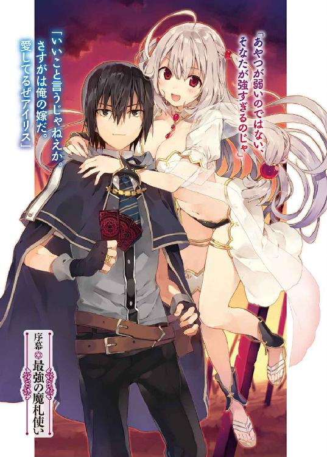
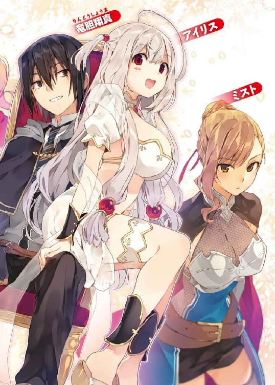
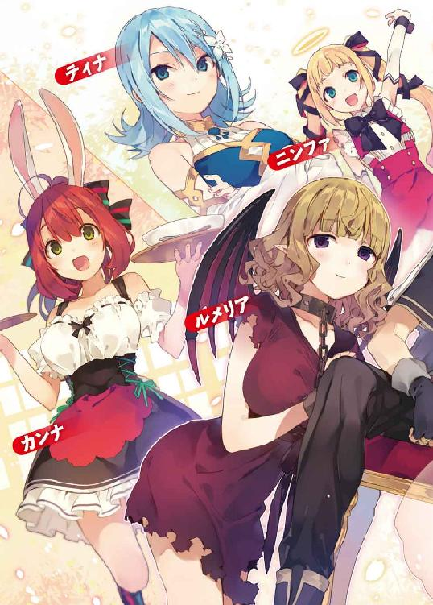
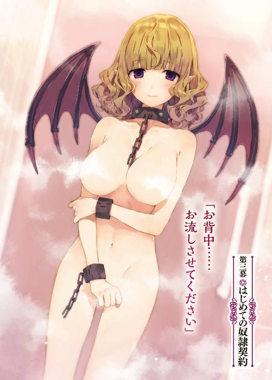
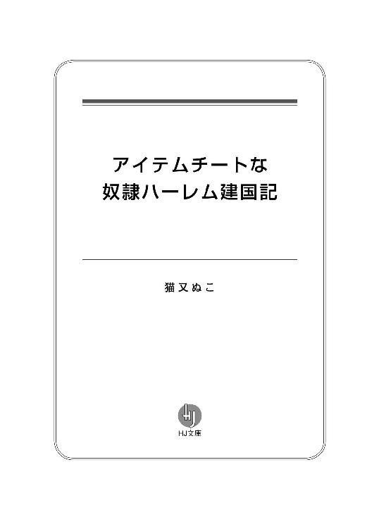
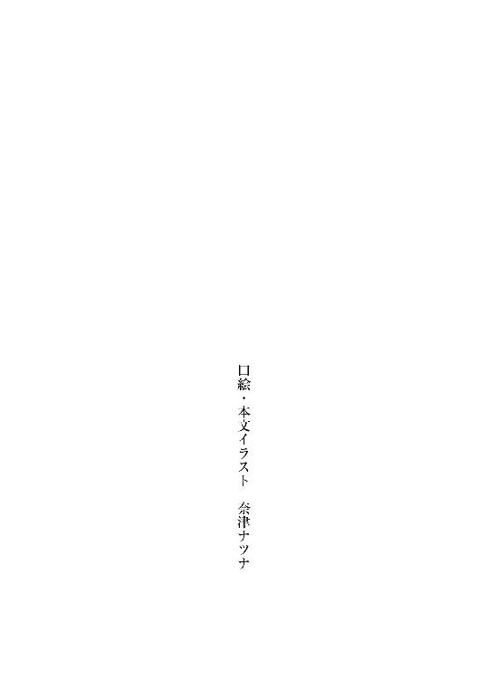
序幕 最強の魔札使い
異世界アストラルではカードゲームが盛んである。
この世界に数多く棲息する種族間の能力差を均一にするため、最高神は魔札と呼ばれる魔法の効果が組みこまれたカードを全種族に提供した。
それと時を同じくして、最高神は問題の解決に暴力を用いることを禁じた。これにより、人々は争いを解決する手段として神託遊戯を用いることとなる。
この神託遊戯は魔札を使った決闘――すなわちカードゲームであるため、アストラルの人類全員がカードゲーマーと言って過言ではないのである。
最高神の定めた掟により、勝者は敗者に絶対遵守の命令を聞かせることができるため、アストラルではカードゲームの強さはそのまま地位に直結するのだ。
そのなかでも騎士門随一の奴隷商人である彼は、アストラルでも指折りの資産家であり、全権代理者にも顔が利く大物中の大物だ。
そんな奴隷商人の栄華に――幕が下りようとしていた。
「嘘だ！ こんな馬鹿なことがあってたまるかっ!!」
ありえない！ と奴隷商人はかぶりを振った。
こちらは勝負に際して必勝策を用意していた――一〇〇人の傭兵を率いてこの戦場へと赴いたのだ。
それに対して、相手はひとりである。
正しくは二人組の男女だが、実際に魔札を使って戦っているのは男だけだ。女のほうは戦意がないのか魔札を持っていないのか、傍観者の立場を貫いている。
いや、たとえ相手がふたりがかりだったとしても、人数的にはこちらが圧倒的に有利だ。勝って当然、敗北など想像もつかない、まさに必勝の策である。
......だというのに。
彼の雇った一〇〇人もの傭兵は――たったひとりの少年を相手に全滅してしまっていた。
まるで悪夢を見ているようだ。
奴隷商人は地に膝をつき、夢なら醒めてくれと強く願うが――バトルフィールドに漂う草木の燃える匂いに噎せ返り、これは現実なのだと痛感した。
であれば――この惨劇が現実であるならば、いますぐ臨戦態勢に戻らなければならない。そうしないと、奴隷商人はすべてを奪われてしまうのだから。
絶望に打ちひしがれていた奴隷商人は、びくびくと震えながらも顔を上げた。
そこには――残煙の向こうには、この惨状を招いた若い二人組の男女が佇んでいた。
戦場には場違いな印象のふたりだ。
そのうちのひとりが、奴隷商人に冷ややかな眼差しを向ける。
「騎士門でも指折りの実力者だっつーから期待してやったってのに――ザコじゃねえか。つまんねえな。これじゃ騎士門の底が知れるぜ」
余裕に満ちた態度で罵ってきたのは、黒いマントを羽織り、革製のブーツを履いた少年だった。
あまり見かけない黒髪に、細身だが弱々しさは感じさせない体つき。前髪は目にかかるほど長く、その奥で黒い瞳をぎらつかせている。
「まあまあ、そう言ってやるでない。そりゃ、そなたにしてみれば弱いんじゃろうが――先日戦ったごろつきに比べれば、まだマシなほうじゃろ」
と、美しい声で少年に語りかけたのは、信じられないほど綺麗な娘だ。
歳の頃は少年と同じくらい――一六、七といったところか。美しい光沢を放つ銀髪に、雪のような白い肌。露出の激しい白衣を纏い、胸は大きく膨らんでいる。
「ごろつき？」と、少年は奴隷商人から目をそらす。
「なんじゃ、忘れてしもうたのか？ ほれ、獣牙門の娘が経営する食事処でそなたに絡んできた連中じゃ」
「......ああ、ごろつきってあいつらのことか。あまりに弱すぎたんですっかり忘れてたぜ。あいつらも態度がでかいだけのザコだったが、どっちもどっちだな。ったく、もうちょい楽しめると思ったのに、この世界にゃザコしかいねえのか？」
「ごろつきはともかく、今回の対戦相手は強い部類の――少なくとも魔札保有量ならこの世界でも指折りなのじゃが......」
「カードを大量に持ってるイコール強いってわけじゃねえだろ。重要なのは、それをどう使うかだ。残念だがこの世界の連中はそのへんがわかっちゃいねえ」
「そなたのもといた世界ではそうなのじゃろうが、アストラルではこれが常識なのじゃ。つまりあやつが弱いのではない、そなたが強すぎるのじゃ」
「おっ、いいこと言うじゃねえか。さすがは俺の嫁だ。愛してるぜアイリス」
「い、いきなりなにを言いだすのじゃ......っ！ そんな情熱的な目でわしを見るでないっ。て、照れるじゃろうが......」
「恥ずかしがる顔も可愛いぜ」
「べ、べつに可愛くなんか......ほんとにそう思う？」
「思う思う」
「わし、可愛い？」
「可愛い可愛い」
「......えへへ」
奴隷商人など眼中にないかのように、少年と少女はいちゃいちゃしている。
ふざけるな！ そう怒鳴りたくなったが......ふと思う。
これはチャンスなのでは？
なぜなら彼の手札には売れば豪邸が建つほどの激レア魔札が――詠唱すれば敵を一撃で葬ることが可能なＳＳランクの魔札があるのだから。
油断している隙をつき、防御魔札を使われる前に詠唱すれば、あのクソ生意気なガキを倒すことができるはずだ。
勝てる、勝てるぞ！
勝利を確信した奴隷商人は呼吸を整え、
「〈雷帝の裁き〉!!」
詠唱したその瞬間――魔札に組みこまれていた魔法が発動。彼の眼前に真紅の魔法陣が描かれ、その中心部に強烈な光源が生まれる。眩い閃光に目を覆いたくなるが、生意気なガキの恐怖に歪む顔が見たいという欲求のほうが勝っていた。
だが、あろうことか少年は少女と楽しげに会話を続けていた。こちらのことなど眼中にないということか。
奴隷商人は怒りでどうかなりそうだった。こんな戦い、さっさと終わらせてしまおう。少年に恐怖を刻みつけるのはバトルが終わってからでいい。この戦いに勝ちさえすれば、神託遊戯のルールに則り、彼は少年からすべてを奪い取ることができるのだから。
「死ね小僧ッ!!」
魔法陣に溜まっていた光源が稲妻となり、少年へと放たれる。
「間抜けめ――〈鏡面世界〉！」
稲妻が直撃する寸前、少年は落ち着いた物腰で魔札を詠唱した。
瞬間、少年の目の前に巨大な鏡が出現した。まるで水面に沈むように雷撃が鏡のなかに吸いこまれ、そして消えていく。
「――っ!?」
次の瞬間奴隷商人は目を疑った。こちらに向かって鏡面から雷撃が飛び出してきたのだ。
突如として襲いかかる雷撃に彼は思わず悲鳴を上げてしまいそうになるが――叫ぶ間もなく轟音が響き渡った。大ダメージの雷撃を受けた奴隷商人のライフは一撃で０になり、バトルフィールドから姿を消したのだった。
◆
「ったく。こんな見え透いた手に引っかかりやがって。ほんと、つまんねえ奴だったな」
奴隷商人がバトルフィールドから敗退したことを確認した少年は、退屈そうにあくびをもらす。
アイリスは同意するようにうんうんうなずき、
「まったくもって翔真の言うとおりじゃ。あんな見え見えの作戦に引っかかるなんてのぅ、わしもびっくり――ってちょっと待てい！ わしとの楽しい会話は作戦じゃったのか？ あやつに隙を見せて強力な魔札を使わせるための演技じゃったのか......？」
おそるおそる訊いてくるアイリスに、少年――竜胆翔真は真顔でうなずく。するとアイリスは上目遣いに翔真を見やり、探りを入れるように訊いてきた。
「じゃ、じゃあ、わしのことを......その、可愛いと言ったのも......？」
アイリスの言いたいことを察したのか、翔真ははじめて笑みらしい笑みを見せる。
「それは嘘じゃねえよ」
「そ、そうか......うへへ、そうかそうか......」
嬉しそうに口元を緩ませるアイリス。
「にしても、アストラルのカードゲーマーってのはろくな戦術立ててこねえな。もちっと骨のある奴はいねえのかよ」
翔真が愚痴をこぼした途端、アイリスはふっと笑みを消した。そして不安げな眼差しで問いかけてくる。
「......まさか、もとの世界に帰りたくなったのか？ アストラルに召喚したわしのことを、恨んでおるのか？」
「なわけねえだろ」
翔真は間髪容れずに否定した。
「アストラルにいれば毎日魔札でバトルできるんだぜ？ しかも勝てば望みの報酬が手に入る――魔札を使ってやりたい放題できるんだ。こんな最高な世界ほかにはねえ。ほんと、俺をアストラルに召喚してくれたアイリスには感謝してるぜっ！」
などと無邪気に笑って言いながら、翔真は召喚された日のことを思い返すのだった――......
第一幕 呼び出された怪物
その日、高校から帰宅した竜胆翔真は家の裏手に建てられた蔵へ直行していた。昨年の暮れ、育ての親になってくれた祖父母が相次いで他界したため、遺品の整理をすることにしたのだ。
物持ちがよかった祖父母の遺品は大量にあり、ひとりで片づけるには重労働だったが、ほかにやることもなかったし、退屈しのぎにはちょうどよかった。
そんな軽い気持ちで始めた整理だったが、これが予想以上にきつかった。半年費やして家中に積まれた荷物はあらかた片付いてきたが、蔵の整理が手つかずだったことを、先日思い出したのだ。
祖父母は年がら年中いちゃついていたし、ふたりで買ったものはたとえボロ雑巾だったとしても『思い出の品』として大事に保管されてきた。
金婚式を催すほどにつきあいの長いふたりである。思い出の品はとても家に収まりきる量ではなく、祖父母は家の裏手にある空き地を買い取り、巨大な蔵を建ててしまった。
それが二〇年前の話だ。
自分が生まれる三年も前から『思い出の品』が蓄積され続けたのだと思うと――それをこれから自分ひとりで片づけるのだと思うと、気が滅入ってくる。
かといって、このまま放置というわけにもいくまい。
翔真は両親を交通事故で亡くした五歳の頃からずっと祖父母と暮らしてきた。ふたりにとって本当に大事なものと、さほど大事ではないものの区別くらいはつく。
本当に大事なものはふたりの寝室に運び、残りは空き部屋か蔵に保管する。結果的には生活スペースは増えないが、自室が空いていれば充分だ。もう家族はいないのだから。
「それに整理すれば魔札が見つかるかもしれねえしな。つーかじいちゃん、あんな大量にあった魔札をいったいどこに隠したんだよ――っと」
赤錆びに侵された蔵の扉を開けると――カビの臭いが鼻腔を刺激した。おまけにホコリっぽい。マスクを取りに戻ったほうがいいだろうかとも思ったが......そういえばマスクは家の整理で使い果たしたのだった。
「......」
まあ、換気に気をつければ問題ないだろう。
重たい扉を全開にした翔真は、さっそく片づけに取りかかろうと蔵内に足を踏み入れた、まさにそのとき。
『――、――』
どこからともなく女の声が聞こえてきた。
蔵の外に誰かいるのかと外をうかがうが、雑草の生い茂る庭にひとの姿は見当たらない。一五畳ほどの蔵内にひとの隠れるスペースはないし、となると敷地外で誰かがしゃべっているだけか。
そう自分を納得させた翔真だったが――
『――！ ――！』
蔵内に積まれた荷物を庭に運び出していたところ、また声が聞こえてきた。
「......」
翔真はいぶかしそうに眉をひそめ、蔵の扉を閉めてみた。暗がりのなか、耳を澄ます。ややあって、先と同じ声が響いた。声の鮮明さは扉を閉める前と変わらない――むしろ、外からの雑音が遮断されたことで、わずかながらに鮮明になっていた。
つまり声の主は蔵内にひそんでいるということだ。
だが、どこに？
再び蔵の扉を全開にする。西日に照らされ、オレンジ色に染まる蔵内には、やはり人影など見当たらない。だが、必ずどこかにひそんでいるはずだ。
翔真は耳を澄ませて声の出所を探り......
「......こいつか」
あたりをつけた。
段ボール箱の上にちょこんと置かれた指輪ケースのような箱を手に取る。てっきり会話機能の搭載された人形が声の主だと思っていたが、人形が入るサイズの箱ではなかった。
だが、声はたしかにここから聞こえる。
「ま、開けてみりゃわかるか」
肝が据わっているというか好奇心旺盛というか――ためらうことなく箱を開けてみると、そこには金色に輝く指輪が収められていた。
指輪を摘まみ、まじまじと眺める。
特に不審点は見つからなかった。ごく普通の指輪だ。特徴らしい特徴といえば、内側に解読不能な文字が刻まれていることくらいだ。
もっとも――
『頼む敦盛！ いいかげん再戦してほしいのじゃ！』
たとえ超個性的な装飾が施されていたとしても、声が聞こえることに比べればたいしたことはないのだが。
「再戦？」
『！ 敦盛か！ おのれ約束の五〇年はとうに過ぎておるぞ！』
独り言のようにつぶやくと、すぐに返事が来た。どうやら指輪は通信機の機能を有しているらしい。
翔真が人違いだと言おうとした矢先、声の主が焦燥に満ちた声を上げた。
『やっと捕まえたのじゃ！ けっして逃さぬからな！ 約束通り再戦じゃぞ！ さあ――わしのもとへ来るがよい！』
俺は敦盛じゃねえよ――そう否定しようとした翔真だったが、突然足もとに幾何学的な紋様が現れたため口を閉ざしてしまう。瞬間、紋様が真紅の輝きを放ち始めた。
紅い輝きは瞬く間もなく明るさを増していき、翔真は口に続いて目を閉ざした。へたに身動きを取るのは危険だと直感的に判断した翔真は、まぶた越しに光の収束を待つことにしたのであった――......
◆
「......そなた誰じゃ？」
まぶた越しに光の収束を感じ取るのと同時、間の抜けた声が聞こえてきた。
「おまえこそ誰だよ」
言い返しながら翔真は目を開く。すると、ぼやけた視界にまっしろな娘が映りこんだ。
外見年齢は一六歳といったところか。綺麗というより可愛い顔立ちの女の子だ。繊細な銀髪は腰に届くほど長く、綺麗に整えられた柳眉の下には真紅の瞳が輝いている。
露出度の高い衣装に華奢な身体を包みこみ、大きく開いた胸元からは柔らかそうな胸の谷間を見ることができた。
そんな神々しいほどに美しい女性と対面し――しかし、翔真は見とれない。彼の興味の矛先は、べつのところへ向けられていた。
「つーか、ここ......どこだよ？」
翔真の声は震えていた。それは恐怖ではなく、好奇心による震えであった。
上空には雲が浮かび、足もとには荒廃した大地が広がり、まっしろな娘のうしろには、枯れ果てた大樹が佇んでおり――
二〇メートル先に、地平線が広がっていた。
あまりに近すぎる距離だ。地平線までは四、五キロメートルほどの距離があるのが普通ではなかったか。
翔真は先へと進み、自らの脚で確かめてみることにした。
「お、おいっ。どこへ行くのじゃ!? 待たぬかっ！」
少女の呼び止めを無視してまっすぐに歩いていき――一分ちょっとでもといた場所まで戻ってきた。
......なるほど理解した。
ここは周囲を分厚い雲に覆われた、超小型の惑星なのだ。そして、そんな摩訶不思議な世界に自分を召喚したのは――
「散歩は終わりか？」
この、白い女だ。
「ああ、楽しい散歩はおしまいだ。ここから先はおまえとの会話を楽しませてもらうぜ。んで、おまえは誰だ？ あと、ここはどこだ」
「わしはアイリス。そしてここはアストラルのどこかに創られた『閉ざされた世界』じゃ。『監獄』と言ってもよいがのぅ」
「監獄、ね......」
散歩したとき生物の姿は確認できなかったし、囚人はアイリスと見て間違いない。虫も殺せぬような愛らしい顔をしているのに、いったいなにをしでかしたのやら。
「さあ、わしは質問に答えたぞ。今度はそなたの番じゃ」
「俺は竜胆翔真だ。おまえの言う敦盛ってのが竜胆敦盛のことなら、そいつは俺のじいちゃんだ」
「じいちゃんじゃと!? ではやはり人違い!? おおっ、なんたる失態かッ！ よもやこの大事な局面で人違いをしてしまうとは！ このアイリス、一生の不覚じゃ！」
「そうだな、早合点はおまえのミスだが――まあ、そこまで自分を責める必要はないぜ。おまえはじいちゃんに用事があったようだが、じいちゃんは半年前に死んだからな」
「？ いま......なんと？」
「竜胆敦盛は死んだって言ったんだよ」
翔真は手短に説明してやった。昨年の暮れに祖母が亡くなり、あとを追うように祖父もこの世を去ったこと。双方ともに大往生であったこと。翔真は遺品整理の際にアイリスの声を聞き、指輪に触れた瞬間足もとに紋様が現れ、気づけばここにいたこと。
すべて語り終えたとき、アイリスはがっくりとうなだれていた。
「そうか、敦盛は逝ったか......。それは残念じゃったな......じゃが、わしもかなり残念な状況にあるのじゃ。すまんが、身内を亡くしたそなたに同情しておる余裕はない」
「俺としても同情されるのは御免蒙るが――余裕がないってのはどういう意味だ？ 切羽詰まったその状況と、俺のじいちゃんと、なにか関係してんのか？」
翔真の知る敦盛は超がつくほど愛妻家なのと、魔札というカードを大量に所持していたことを除けば、普通のサラリーマンだった。そんな祖父が、明らかに地球ではない世界と――異世界に住まう謎の美少女と、どんな接点があるというのか。
アイリスはあごに手を当て考える仕草を作り、
「......まあ、これもなにかの縁じゃ。わしもひさしぶりに他人と話せて嬉しいし、それにわしの都合で召喚してしまったわけじゃしな。わしと敦盛の関係を教えてやるのじゃ」
こほんと咳をして、淡々と語りだした。
「わしは五〇年ほど前に敦盛との戦いに敗れ、力を奪われてしまったのじゃ。ぱっと見ただけではわからんじゃろうが、わしは霊体でな。証拠に、ほれ」
と、アイリスが翔真の胸に手を伸ばしてきた。彼女の細腕はそのまま翔真の胸を貫き、背中から抜け出る。
「......」
アイリスが腕を抜いたあと、翔真はぺたぺたと胸を触った。痛みはなく、傷跡もなく、白いシャツに血痕はない。霊体というのは事実のようだ。
「というわけで、わしは生きながらに死んでおるようなものなのじゃ。あるいは、わしが気づいてないだけで、本当に死んでしまっておるのかもしれんのぅ」
自虐的に笑うアイリス。そんな彼女をじっと見つめ、翔真は告げた。
「もったいねえな」
「もったいない？ なにがじゃ」
「霊体だと、その立派な胸を揉めねえじゃねえか」
かあっと顔を赤くするアイリス。
「こっ、このたわけがっ！ 霊体じゃなくとも揉ませぬからな!?」
アイリスは両腕で大きな胸を覆い隠した。翔真はケラケラと笑う。
「怒鳴るこたァねえだろ。ま、辛気くさい顔されるよりは、いまの顔のほうがずっといいがな」
アイリスが、じっと翔真を見つめてくる。
「......そなた、もしやわしを元気づけるために、わざとえっちなことを言ったのか？」
「おまえはエロいことを言われると元気になるのか？」
「そんなわけなかろうがっ！」
「生き生きした霊体だな。こりゃ間違いなく生きてるぜ」
「当たり前じゃ！ わしは生きて......」
アイリスは、そこで黙りこむ。
そして、真剣そのものの眼差しで翔真を見つめ、
「ふざけた性格をしておるが......悪い奴ではないようじゃな」
「おいおい、初対面の相手に向かって『ふざけた性格』はねえだろ」
「それを言うならそなたこそ胸を揉むなどと......いや、もうこの話はよすのじゃ。ええと、どこまで話したかのぅ――っと、そうじゃったそうじゃった」
アイリスは調子を取り戻すように咳払いをしてから、話を再開した。その声には先ほどまでとは打って変わって、生気が宿っていた。
「敦盛に力を奪われ霊体となったわしは、さらに追い打ちをかけられるようにしてここに封じられてしまったのじゃ。『五〇年間そこで反省していろ。そうしたら再戦してやる。そこで俺に勝てたら、おまえの力を返してやる』――そんな言葉を残して、敦盛はわしのもとを去っていったというわけじゃ」
敦盛は温厚な性格だ。そんな祖父に懲役五〇年を言い渡されるなんて、いったい彼女はどんな悪行を働いたのか。
「おまえ、なにしでかしたんだ？」
「どこから説明したらよいかわからぬが......そうじゃな............わしはここアストラルを管理する最高神だったのじゃが――アストラルに住まう者たちはどうにも仲が悪くてのぅ。そんな関係を改善してやりたくて、わしはいろいろと試練を課しておったのじゃよ」
「試練？」
「意図的に大災害を発生させておったのじゃ。協力して苦難を乗り越えれば、冷え切った関係が改善されると信じてな」
アイリスは深々と嘆息する。どうやら関係修復には至らなかったらしい。
「落ちこんでるところ悪いが、質問を続けさせてもらうぜ。じいちゃんが、なんでそこに登場するんだ？」
おとぎ話に知人が出てきた気分だった。敦盛とアイリスの関係は理解したが――そこに至るまでの経緯は不明なままだ。
「アストラルの誰かが敦盛を召喚したんじゃろ」
他人事みたいな口ぶりだった。翔真はアイリスに召喚されたが――敦盛はべつの誰かに召喚されたということか。
「この世界の連中は、どいつもこいつも召喚術が使えるのか？」
「召喚術ではない。召喚の魔札じゃ」
「......いま、なんて言った？」
聞き間違いの可能性を考慮して再確認する。
「わしも、その誰かも、召喚の魔法が組みこまれた魔札を使って異世界人を呼び寄せたのじゃ。敦盛は無作為に選ばれたようじゃったが、わしは召喚対象を選んだのじゃ。『竜胆敦盛の魔導指輪に触れた者を召喚する』という感じでな。まあ、人違いはしてしまったが――」
「んなこたァどうでもいい！」
「どうでもよくないじゃろ!? 他人事ではないのじゃぞ!?」
「ったりめーだ！ これが他人事でたまるかよ！ アストラルには魔札があって――この世界じゃ魔札は魔法みたいなもんで――そして、俺はそんな素敵世界に召喚されたんだ！ そうだろ!?」
翔真の気迫に、アイリスはたじたじになる。
「う、うむ。そなたの言うとおりじゃ。魔札にはそれぞれ個別の魔法が組みこまれていて、詠唱するだけで効果が発動するのじゃ。......というか、そなた魔札を知っておるのか？」
「ああ。昔じいちゃんと散々カードバトルしたからな」
思い出補正も含まれるかもしれないが――それでも、『世界で一番楽しいことは？』と問われれば『魔札を使ったカードバトル』と即答するくらい翔真は魔札が好きである。
両親の死に絶望する翔真を元気づけるため、敦盛が誘ってきたのが魔札とのなれそめだ。カードゲームといえばトランプくらいしか知らなかった当時五歳の翔真にとって、魔札は画期的な遊戯であった。一戦二戦と重ねるうちに魔札のとりこになった翔真だったが――なにより多彩な戦術を立ててくる敦盛にどうやって勝つかを考えるのが楽しくてしょうがなかった。
中学生になる頃には敦盛と拮抗したバトルができるまでに成長したが、毎日毎日敦盛と魔札で遊ぶ翔真を見て、祖母が『このままでは翔真に同年代の友達ができない』と危惧し、敦盛に魔札をやめさせるように注意した。
その日を境に翔真は魔札を見ていない。祖父母は隠し場所を教えてくれず、自力で探し出そうとしたが、どこを探しても見つからず、ならば買おうと図書館のパソコンで魔札を検索してみたところ、そんな製品はこの世に存在しなかった。
けっきょく魔札がどこにあるのか、祖父がどうやって手に入れたのかはわからずじまいだったが――なるほど、敦盛は異世界で魔札を手に入れていたようだ。まったくもって、この入手経路は予想外もいいところだった。
「じいちゃんが持ってた魔札と、この世界の魔札は、同じものなんだな？」
質問というより、確認だった。
アイリスはうなずき、
「ただまぁ魔札の効果はアストラルでしか発動せぬし、そういう意味ではまったくの別物じゃがな」
「そうか......。くそっ！ ますます魔札が見つからなかったのが悔やまれるぜ！」
敦盛は一〇〇〇〇種類、一〇〇〇〇〇枚以上の魔札を持っていると言っていた。それをこの世界に持ちこめていたら、翔真は魔札を使ってやりたい放題できたはず。億万長者も夢ではなかった。
「そなたはここに来る前、指輪に触れておったはずじゃ。それはいまどこにある？」
「それならここにあるぜ」
翔真は右手を開き、握りっぱなしにしていたゴールドの指輪をアイリスに見せてやる。
「それは魔導指輪といってな。敦盛は魔札で通信機能やら翻訳機能やらを加えておったが、本来魔導指輪は魔札を保管するためのものじゃ。指にはめた状態で『開示』と念じれば、そなたの所有する魔札を記した〈書物〉が現れるのじゃ」
と、翔真は右手薬指に魔導指輪を装着し、開示と念じてみた。
すると一冊の本が現れた。鈍器としても使えそうな分厚さである。見るからに重そうなサイズだが――ちょうど翔真の胸元に浮いているため重さを感じることはない。
驚きは特になかった。というか、早くカードリストを確かめたくてしかたがなかった。翔真は〈書物〉を浮かせたまま表紙をめくる。そこにはびっしりカード名が記されていた。名称の横には『×８枚』というふうに所有枚数が表記されている。奥付を確認してみると、魔札コンプリート率や、所有する魔札の合計枚数などが記されていた。
魔札全種を集めるまで、あと五〇枚必要らしい。
「魔札の名称を念じつつ『検索』と口にすれば、その魔札が記されたページに飛ぶのでな。〈書物〉を消したいときは『終了』と言えばよい」
「なるほどな。ところで魔札を使うには〈書物〉を出したままじゃないとだめなのか？」
「〈書物〉はあくまで確認用じゃ。出したままでも使えはするが――魔導指輪を装着した状態で、使いたい魔札の名称を念じればカードが具現化する。それを詠唱すれば、効果が発動する仕組みになっておる」
「そうか。なら――」
試しに先ほど目についた魔札を念じてみると――一枚のカードが翔真の胸元に現れた。見えない壁に張りつくようにして浮いているカードを、翔真は手に取りまじまじと眺める。
サイズは一般的なトランプより一回りほど大きい。両面ともに黒地で、表面の上部には天を貫く火柱のイラストが、下部には効果を示すテキストが記され、裏面には紅い紋様が描かれていた。召喚時に足もとに現れたのと同じ紋様だ。
「どの魔札を呼び出したのじゃ？」
「ん？ ああ、これだよ」
「すまぬが、これだと言われてもわからぬ。そなたが自分の意志でわしに見せてくれない限り、魔札は所有者以外には青白く光って見えるのじゃからな。バトルの際、どの魔札を使うか悟られぬためにな」
「そっか。なら教えてやるぜ。俺が呼び出したのはこいつさ！ ――〈炎王の抱擁〉！」
翔真は魔札を詠唱した――瞬間、標的に定めた大樹の根元に魔法陣が広がり――大噴火。魔法陣より噴き出た炎は螺旋状に渦巻きながら分厚い雲を突き抜けた。閉ざされた世界は一瞬にして熱気に包まれ、チリチリと刺すような痛みが肌を撫でる。炎柱が消滅したとき大樹は灰燼と化しており、その光景を目の当たりにした翔真は腹を抱えて哄笑した。
「ハハハハハッ！ こいつはすげえ、マジで魔法じゃねえか!!」
「い、いきなり使う奴があるかっ！」
「俺とカードバトルしようぜ！」
「わしの話を聞けぃ！」
「そう怒るなよ。街中で使ったわけじゃねえんだからさ」
ふんっとアイリスは鼻を鳴らし、拗ねたような口調で言う。
「ここは敦盛が魔札で創った空間じゃから特別に使えたが、アストラルでは攻撃を目的として創られた魔札は使えぬし――たとえ攻撃を目的とした魔札でなくとも、暴力行為との認識を持った状態では使えぬ。そなたのような輩が現れては困るのでなっ！」
街中での魔札の使用には二重のロックがかけられているというわけだ。
「大災害を起こしてた奴に言われたくねえな」
「ぐぬっ、痛いところを突くのぅ......」
まあ大災害を起こせたということは、アイリスに『暴力行為』という認識はなかったのだろうが――親切心で大災害を起こすのも、それはそれでたちが悪い。まあ五〇年間監禁されたことで、アイリスも反省しただろうけど。
「つーかいまさらだが......『試練』は攻撃魔札によるものじゃねえのか。......それとも、最高神ってのは災害を起こす力を持ってんのか？」
「わしの能力は〈創造〉だけじゃ。これを使えば〈空白の魔札〉を――『望みの効果を記せる魔札』を創り出すことができるのじゃ」
敦盛に力を封じられたことで〈創造〉能力は使えなくなってしまったがな、とアイリス。
「つまり、チートなカードを自由自在に生み出せるってわけか」
「うむ。ただし、この〈創造〉能力によって生み出された魔札は一回使うと消滅するがな。まあとにかく、試練用に生み出した魔札は攻撃を目的として創ったわけではないのでな。だから自由に使えたというわけじゃ」
「なるほど。オリジナルってことは、俺はアイリスが創った魔札を持ってないんだな？」
「〈創造〉で生み出した魔札はな。一般に流通しておる魔札もわしが創ったものじゃから、そういう意味では、そなたはわしが創った魔札を持っておることになるぞ」
「魔札の創造主だったか！ それを聞いてますますおまえと戦いたくなったぜ」
「だからどんだけ好戦的なのじゃそなたは......。わしにはそなたとバトルする理由がない。わしは敦盛と戦いたかったのじゃからな」
アイリスは敦盛を倒して、失われた力を取り戻そうとしていた。そうすれば肉体を取り戻せていた。しかし敦盛と戦えない以上、アイリスはずっと霊体のまま過ごすことになる。
「......ま、その悩みからもじきに解放されるがな。霊体のままでは食事ができぬし、この五〇年間は先ほどそなたが消し飛ばした大樹に取り憑き、細々と生命力を吸い取って生きながらえてきたが、先日、ついに大樹が枯れ果ててしもうてな。ほかに取り憑けるものがないのは確認済みじゃし......わしの命はもってあと一週間といったところじゃな」
アイリスが切羽詰まっていた理由がはっきりした。食料が絶たれてしまったのでは焦るのも無理はない。
「てことは俺に取り憑けば、ひとまずの問題は解決するってわけだ」
「そなた正気か？ 一度取り憑いたら、宿主が死ぬまで離れられぬのじゃぞ？」
「それでも構わねえぜ。ただし、こっちの条件を呑んでくれたらの話だがな」
「条件？」
「俺と戦え」
「またそれか。申し出は嬉しいが、やめておくのじゃ」
翔真はつまらなそうに舌打ちする。
「なんだよ、俺と戦うのがそんなに怖いか？」
「そうではない。わしには果たすべき大望が......最高神としてアストラルを治める責務があるのじゃ。そのためには〈創造〉能力が必要不可欠、ゆえに完全復活する必要があった。じゃが肉体を取り戻せぬ以上、それは叶わぬ夢なのじゃ」
アイリスは翔真に取り憑き、生命力を吸い続けてまで生きながらえる理由がないと――そう言いたいのだろう。
「じいちゃんを倒す以外に完全復活する方法はねえのかよ」
「まあ......肉体を取り戻す方法は、あるにはある......が、そなたでは力不足じゃ」
翔真は挑発的な笑みを浮かべる。
「力不足かどうか、試してみればいいじゃねえか」
「けっきょくはそこに行きつくのじゃな......まあよい。そこまで言うのであれば力不足かどうか――そなたをテストしてやるのじゃ。特別にな」
「特別......普通はアイリスとバトルできねえってか？」
「うむ。本来ならば、わしと戦うには魔札全種をコンプリートしなくてはならぬのじゃ。わしが最高神になり千年、わしのもとへたどりつけた者は片手で数えるほどしかおらぬし、わしに勝ち、報酬の〈空白の魔札〉を手にしたのはそなたの祖父――竜胆敦盛ただひとりじゃ」
まさか、それを使って力を封じられるとは思わなかったがのぅ、とアイリス。ちなみに、敦盛はアイリスが一枚だけ持っていたオリジナルの魔札――『対象１名を産まれた場所へ転送する』効果の〈原点回帰〉を使用し、もとの世界へと帰還したらしい。
「せっかくオリジナルの魔札を持ってるってのに、ほとんどバトルしてこなかったのかよ。もったいねえな。魔導指輪の肥やしになるくらいなら、俺がもらってやるぜ」
「万一わしに勝つようなことがあれば、そのときはルールに則り、そなたの要求を呑んでやるのじゃ」
「へえ、勝ったほうは要求を呑ませることができるのか。そいつはますます、この世界が気に入ったぜ。んじゃ、ちゃっちゃとルール説明に入ってくれ」
魔札を使うところは敦盛とやっていたカードバトルと同じだが、アストラルでは魔札は魔法だ。テーブルゲームの域を超えている。きっとルールも異なるはずだ。
「魔札を使ったカードバトル――神託遊戯には、五つの基本ルールがあるのじゃ」
アイリスは指折り数えながらルールを語る。
【１】各プレイヤーにはライフポイントが与えられる。
【２】ライフポイントが０になったプレイヤーは神託遊戯に敗北する。
【３】１枚以上の魔札を選び、５枚までを手札に、残りがあれば山札にする（ただし同じ魔札は３枚までしか使えない）。手札が１枚減るごとに、山札から１枚補充できる。
【４】基本ルールに抵触しない範囲内で、各プレイヤーは互いに３つまで新たなルールを設けることができる。
【５】神託遊戯の敗者は自分が設けたルールと同数の要求を呑まなくてはならない。
「――とまぁ、以上が神託遊戯の五大原則じゃ。いまので理解できたかのぅ？」
「おう。わかりやすいルール説明ありがとよ」
敦盛と遊び倒したカードゲームと異なる部分は【４】と【５】であり――同時にそこが神託遊戯の肝となる。
自分に有利なルールを三つも作れば勝ち目は高まるが、ルールを作れば作るほど、敗北したときのリスクも高まる仕組みになっている。最悪の場合、たった一度の敗北で人生が終わることもあるのだ。
「確認するが――アストラルの連中は、こんなバトルをいつもやってんのか？」
期待をこめてたずねると、アイリスはうなずいた。
「ここでは強盗に強姦に殺人など、あらゆる暴力行為は禁じられておる――というより、〈空白の魔札〉を用いてわしが禁じた。他人に危害を加えようと思っても、身体がそれを拒むのじゃ」
「金縛りみたいなもんか。けど、なんでわざわざ暴力行為を禁じたんだ？」
「元々争いは絶えなかったが......大昔にわしの一族が起こした権力闘争で、多くの人々が犠牲になってな。その結果、幸か不幸かわしが最高神の座についたわけじゃが......。もう二度と悲劇を繰り返してはならぬと思うて、平和的に争いを解決する手段――神託遊戯を導入したというわけじゃ。むろんリスクはあるし、じゃからこそ、趣味で神託遊戯を嗜む者など、わしは見たことがない。皆、必ず一つはルールを作っておる」
それで、とアイリスは真剣な眼差しで翔真にたずねる。
「そなたはどんなルールを作るのじゃ？」
「俺はルールを作らねえ」
予想外の返答だったのか、アイリスは困惑顔を浮かべる。
「本気か？ リスクはあるが、ルールを作らなければ圧倒的に不利じゃぞ？」
「不利かどうかは俺が決めるぜ」
「......神託遊戯が始まってからルールを作りたいと言っても、無理じゃからな」
「わかってるさ。それより早いとこルールを決めてくれ。さっさと始めようぜ」
「好戦的な男じゃな。急かさずとも、わしはすでにルールを決めておる。敦盛を倒すため、五〇年かけて編み出した必勝のルールじゃ！」
自慢げにそう言って、アイリスはルールを語る。
「ルールは次の二つじゃ。『わしは一枚、そなたは五枚の魔札を使用できる』、『そなたが魔札を使い果たしたとき、わしのライフポイントがわずかでも残っていればわしの勝ち』じゃ」
「......なるほどな」言いながら、翔真は思考を働かせる。
アイリスの手札は一枚しかない。対する翔真は五枚だ。それだけ聞けば翔真が圧倒的に有利なルールだ。先の〈炎王の抱擁〉は『対象に500ダメージ与える』攻撃魔札だ。それを二枚使えばアイリスのライフを０にできる。
だがこれはアイリスが五〇年もかけて編み出した戦術だという。そう簡単にはいかないだろう。
（ここで重要なのは――アイリスが使う一枚がなにか、だな）
パターンは次の二通りある。
――『一枚で翔真のライフを０にする魔札』か。
――『一枚で翔真の攻撃をすべて防ぐ魔札』か。
（ほぼ確実に、アイリスは後者を選ぶだろうな）
アイリスが設けた二つ目のルールを考慮すれば防御特化魔札を使ってくると考えるのが妥当だ。そうなると使ってくるのは『一枚で複数回の攻撃を防ぐ魔札』か......。
たとえば魔札には『対象プレイヤーからの攻撃を５回軽減して０にする』という効果のものがある。その場合、翔真は五枚で五回以上の攻撃を与える魔札――かつ、アイリスのライフポイントを残さず削りきるコンボを考えなければならない。
まあ五回というのは翔真の推測に過ぎず、アイリスが使ってくるのはそれ以上に強力なものかもしれないが。
いや。
（確実に五回以上の攻撃を防いでくるな）
アイリスはオリジナルの魔札を――『わしがかんがえたさいきょうのうぃず』を持っていると自慢していた。
そして強力な防御力を誇る魔札というと『あなたの受けるダメージを軽減して０にする。５回ダメージを軽減したあと、この魔札を破壊する』効果の魔札が思い浮かぶ。
（この効果を強化するとなると――永続的にダメージ無効化、か）
だが二つ目のルールは翔真に『アイリスは防御特化の魔札を使ってくる』と誤認させるためのブラフかもしれない。
アイリスは翔真の手札を攻撃特化に誘導したうえで、一撃でこちらのライフを０にするカードを使ってくる可能性だってあるのだ。
（だが、アイリスは言った。この戦術を考えるのに五〇年費やした――と）
五〇年かけてようやく『一撃必殺の魔札で勝つ』という戦術を思いつくとは思えないし、翔真とアイリスが同時に魔札を詠唱すれば相打ちの可能性もある。だからこそアイリスが攻撃特化型の魔札を使ってくる可能性は極めて低いと推測できるが......それでも、可能性としては捨てきれない。
だが――
ここまでに仕入れた情報を加味すれば、アイリスの戦術を破るのは造作もないことだ。
「......いいぜ。そのルールで問題ねえ」
一分ほど思考を働かせた翔真は、アイリスにそう告げた。するとアイリスは驚いた顔で翔真を見てくる。
「もうよいのか？ 早く戦いたい気持ちはわかるが、そう急ぐこともあるまい」
「むしろ時間をかけすぎたくらいだぜ」
「まあ、そなたがそう言うならよいが......。では、ルールに不満がないのであれば審判を呼ぶが、よいか？」
「神託遊戯には審判がつくのか」
「うむ。ルールの最終確認に勝負後の要求の見届け、それに勝負に決着がつかないと判断した場合に、残りライフポイントやら使用した魔札の枚数やらを加味して判定を下したりするのじゃ。審判は......というより精霊は中立的立場じゃから、一方に肩入れすることはけっしてないぞ」
「それはわかった。けど、ここは『閉ざされた世界』だぜ。審判呼べんのか？ つーか、審判来れんのか？」
「審判――精霊は、神託遊戯の合意がなされた場所ならどこへでも訪れることができる。この場所を特定されぬように敦盛は〈結界〉魔札を使っておったが――精霊の察知能力は〈結界〉魔札の効力を上回っておる。ほかならぬこのわしが、精霊をそういうふうに生み出したのじゃからな」
「色っぽいとは思っていたが、経産婦だったか」
「出産したわけではないぞ!? そもそもそういう行為をしたことがない！ 生み出したというのは創造したという意味じゃ！」
「もちろん知ってるぜ」
「ではなぜ経産婦扱いを!?」
「バトル前に緊張をほぐしてやろうと思ってな」
「よけいな気遣いをしおってからに！」
ぎりりとアイリスは歯ぎしりする。
「まったく、調子の狂う男じゃな。ある意味では敦盛以上に恐ろしい奴なのじゃ」
「なら神託遊戯で俺が勝てば、俺はすべてにおいてじいちゃんを上回れるってわけだ」
「そうなるな。もっとも、わしの負けは万に一つもありえぬがな――さて、では審判役の精霊を呼ぶのじゃ。といってもわしとそなたとのあいだにはすでに神託遊戯の合意がなされておるし、じきに精霊がここに来るはず......っと、もう来たか」
アイリスの視線を追うように、翔真は振り返る。
焦土と化した大樹跡地に真紅の魔法陣が浮かび、紅い輝きが放たれていた。翔真もこうやって召喚されたのだろう、紅い輝きが消えたとき、ぎゅっと目を瞑った娘が立っていた。
幼女である。
繊細な金髪に、整ってはいるが幼い顔立ち。ぷにっとした頬と薄い唇は子どもらしく、胸の膨らみも未成熟。一三〇センチほどの身体に赤を基調とした衣装を纏わせ、その頭上では天使の如き輪っかが燦然と輝いている。
精霊はゆっくりと目を開き、その碧眼でアイリスを捉えた――
「！」
瞬間、ぎょっとしたように目を見開く。
「あっ、アイリス様!? 生きてたのですね！ 新たな精霊が生み出されなくなったから、てっきり死んじゃったと思ったのですよぅ！」
「半分死んでおるようなものじゃがな」
「うわあ、うわあ！ これは大ニュースですよっ？ ティナ様が聞いたらお喜びになるのです！」
創造主の生存を知り、精霊は嬉しそうにぴょんぴょん跳びはね、はしゃいでいる。
「とにかく、ええと......そなたはニンファじゃったかな？」
「はいっ、ニンファなのです！ アイリス様が一〇〇〇〇番目にお創りになった精霊――その名もニンファなのです！」
ずいぶんと自己主張の激しい個体だ。それとも精霊というのはみんなこうなのだろうか。
などと考える翔真のとなりで、アイリスがニンファに神託遊戯のルールを伝える。
ニンファは「ルール覚えましたっ」と元気よくうなずき――くりっとした碧眼を翔真に向けると、ベルトのついた長方形の箱を差し出してきた。
「これはカードホルスターなのです。神託遊戯の舞台――このあと私がお二方を転送するバトルフィールドでは、ホルスター内の魔札しか使えない決まりなのです」
「デッキケースみたいなもんか」
翔真はズボンのベルトループにカードホルスターを固定すると、五枚の魔札を呼び出した。そしてホルスターに収めていく。そうすると、収めたはずの魔札が消滅してしまった。
「おい審判、カードが消えちまったぜ」
「心配ご無用なのです。神託遊戯の基本ルールに、魔札の上限枚数は定められてなかったですよね？ つまりカードホルスターに収納できる魔札の数も無限なのですよ。消えたように見えますけど、ほんとは消えてないのですっ！ ......えと、いまのでわかってくれたですか？」
「ああ、理解したぜ。要するにカードホルスターの形をした魔導指輪ってわけだな」
「そういうことですっ。......わかりやすい例えなので、次から使わせてもらいますね？」
「おう、じゃんじゃん使え」
「はいっ、ありがとうございますなのですっ」
と、ふたりの準備が整ったのを確認したところで、ニンファは一際大きな声を発する。
「それでは――お二方をバトルフィールドにご案内するのでーす!!」
◆
バトルフィールドにゲーム参加者を転送したニンファは、ふわふわと宙に浮かびながら幼い声を響かせる。
「それではルールの最終確認をするのです！ ご静聴お願いするのです！」
場所は草原地帯だ。丘陵のない平らな大地には、くるぶしにかかるほどの雑草が茂り、空を仰げば雲一つない青空が広がっている――平和的な空間だ。
バトルフィールドはルールを受けた審判役の精霊が、そのつど異空間に構築しており、ここでは現実世界の常識は通用しない――バトルフィールドで受けたダメージはライフが肩代わりするので肉体的な損傷はなく、痛覚は残っているため失神することはあっても、ショック死するほどの痛みを感じることはない。
とはいえ、実際に死ぬことはないものの、死亡判定は存在する。ライフが０になった参加者は『隔離空間』に転送され、神託遊戯に干渉できなくなるのだ。
そんなバトルフィールドに、翔真とアイリスは一五メートルほどの距離を空け、向かいあって立っていた。
翔真の胸元には五枚、アイリスの胸元には一枚の魔札が浮いており、青白く光っている。両者の頭上にはと数字が浮かび、視界の隅にも同数のライフが表示されている。
「新ルールは『アイリスは一枚、翔真は五枚の魔札を使用できる』、『翔真が魔札を使い果たしたとき、アイリスのライフポイントがわずかでも残っていればアイリスの勝ち』、で間違いありませんね？」
ニンファの確認に「あってるぜ」と返しつつ、翔真は頭のなかで復習する。
敦盛とのカードバトルと同じく、神託遊戯にターン制度は存在しない。一瞬の判断遅れ、決断力の欠如が命取りとなるスピード重視の勝負である。しかし早口勝負は重要ではなく、いかに敵の手の内を読めるかが勝利の鍵となる。
――などと。
かつて敦盛に何度となく教えこまれたゲームのコツを脳内で繰り返していると、
「それでは――神託遊戯スタートなのです!!」
バトルの邪魔にならないための配慮か、ニンファは号令と同時に姿を消した。その直後、
「〈幻影の繭〉！」
「〈不可侵領域〉！」
両者は素速く魔札を唱える。
コンマ数秒の差で翔真のほうが早かった。翔真の眼前に魔法陣が展開、直径二メートル、幅八〇センチほどの繭が出現。それと同時にアイリスの足もとに魔法陣が浮き出てきたが、外的変化を起こすことなく消滅した。
アイリスは落ち着いた物腰で言う。
「ほほう、分身の魔札を使ってきたか」
魔札の創造主だけあって、魔札の名称を聞き、あるいは繭を見ただけで、魔札の効果を特定できるようだ。
事実、翔真の生み出した『繭』はクローンを創り出す効果の魔札だ。テーブルゲームも面白かったが、視覚的には本場のほうが楽しめそうだ。
「そういうおまえは――防御系の魔札だな」
確信を持って言うと、アイリスは「ご明察」とうなずく。
「ま、わかって当然か。そなたがダメージを受けておらん時点で、防御魔札であることは明白じゃからな」
アイリスは挑発するように笑う。
「くふふっ。もしやそなた、わしが攻撃魔札を使うと思っておったのか？」
「その可能性も当然考慮したぜ。二つ目のルールはブラフなんじゃねえかってな」
だから、と翔真はざらついた繭の表面を撫でる。
「おまえが攻撃魔札を使ってきていたら、この繭に身代わりになってもらっていた」
「防御のための分身じゃったか。貴重な一枚が無駄になってしもうたのぅ。さあ――では残りの四枚でわしを倒してみるがよい！」
自信に満ちた笑みでアイリスが言う。
どれほど強力な効果だろうと、四枚の手札では翔真に勝ち目はない――アイリスはそう確信しているのだ。
「俺の手札が四枚だとか、勝手に決めつけてんじゃねえよ。もっと多いかもしれねえぜ」
「ふん、強がっても無駄なのじゃ。わしの定めたルールによって、そなたは五枚までしか魔札を持ちこむことができぬのじゃからな。それより多くの魔札を持ちこもうとしても、審判であるニンファが許可しないのじゃ。つまり、そなたがこうしてバトルフィールドに存在していることこそが、残り手札が四枚しかないなによりの証拠なのじゃ！」
自信満々に指摘するアイリスに――翔真は、不敵に笑う。
「だが、バトルフィールドで魔札を増やすのはルール違反じゃねえだろう？」
その発言を受け、アイリスは笑みを引っこめた。
「この場で魔札を増やすじゃと？ いったいどうやって..................そうかっ！ そなた、魔札も一緒に複製したのじゃなっ!? なるほど、わしが攻撃魔札を使えばクローンで防ぎ、わしが防御魔札を使えばクローンと共闘する......攻防に応用できる戦術――見事じゃ」
素直に感心したような口ぶりだが――アイリスの自信は色濃く顔に浮き出たままだ。
「じゃが、その戦術ではわしには勝てぬよ！ なにせ〈不可侵領域〉の効果は――『対象１名からの攻撃を永続的に無効化する』じゃからなあ！」
アイリスは勝ち誇るように言葉を紡ぐ。
「そなたが何体、何十体、何百体とクローンを生み出そうが、わしに攻撃は通じぬっ！ クローンとはいえ、竜胆翔真に変わりないからのぅ！ それを承知でなお戦うというのであれば――さあ、いくらでも攻撃するがよい！」
「言われなくてもそのつもりだぜ」
ただし――と翔真は口の端をつり上げた。
「アイリスと戦うのは――アイリスだ！」
アイリスは、ぽかんとする。
「？ なにを言っておるのじゃ？」
翔真は舌打ちした。
「ったく、鈍い女だな。だったら見せてやるぜ。〈幻影の繭〉の中身をな！」
翔真がぽんと繭を叩いた瞬間、繭が足もとのほうから光の粒子となって消滅していき、繭の中身が姿を見せる。
それは紛れもなく――アイリスだった。
正しくはアイリスのクローンだ。生まれたままの姿ではなく、見たままの姿――純白の衣装を纏い、右手薬指にゴールド指輪をはめている。コピーできるのは外面だけなので、指輪の中身は空っぽだ。
にしても、と翔真はクローンをまじまじと見る。
「クローンは五分で消えちまうが、このまま消えてもらうのはもったいねえな。せっかく触れるんだし、消える前に胸でも揉んどくか」
「やめいっ！」
怒鳴ったのはオリジナルのアイリスだ。クローンアイリスはというと、感情のない瞳で翔真の指示を待っている。クローンに人格は反映されないようだ。
「こいつはおまえであって、おまえじゃねえだろ。怒るのは筋違いだぜ」
「それはそうじゃが......」
アイリスはかぶりを振る。
「ええい、ふざけてないでさっさと攻撃してこんか！ もっとも、それは無駄じゃがな！ なにせそなたの攻撃は、わしには届かぬのじゃから！」
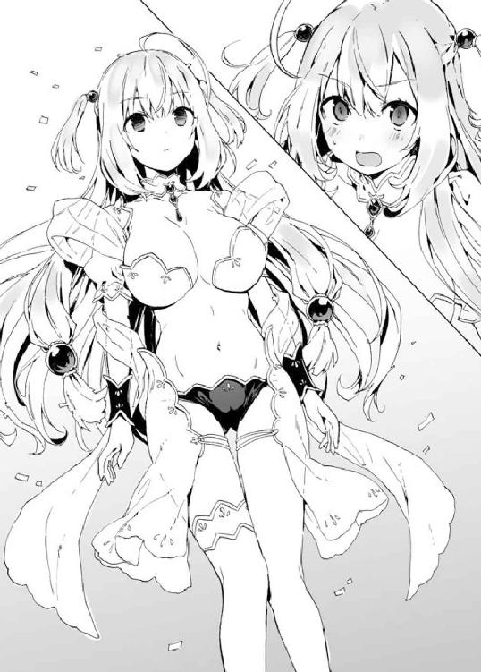
「おいおい、まさか俺が胸を揉むためにアイリスのクローンを生み出したって――本気でそう思ってんのか？」
「違うのか？」
翔真はため息をつく。
「最高神がこれじゃ、この世界のレベルはたかがしれるぜ。わかんねえなら見せてやるよ。これが〈不可侵領域〉の打開策だ！」
そう言って、翔真は胸元に浮かぶ四枚の魔札を――
すべて、クローンアイリスに渡した。
「っ！ まっ、まさかそなた――」
ようやく翔真の作戦を察したのだろう、アイリスの顔面が蒼白になった。
「ああ、そのまさかさ」
たしかに〈不可侵領域〉は無敵だ。
たとえ何百枚、何千枚と魔札を詠唱したところで、アイリスにダメージを与えることはできない。なにせ竜胆翔真の攻撃は、永続的に無効化されるのだから。
だが――
「他人に魔札を使わせちゃいけねえ――なんてルールはなかったよなァ」
そう。最強の防御力を誇る〈不可侵領域〉は、この場においては竜胆翔真に対してのみ最強なのだ。
すなわち。
アイリスは――クローンアイリスの攻撃を打ち消すことができないのである。
「そ、そんな馬鹿な！ 〈幻影の繭〉は詠唱時にコピー対象を決めねばならぬのじゃぞ!? ま、まさかそなた――最初から〈不可侵領域〉の効果に気づいておったのか!? わしが〈不可侵領域〉を......『竜胆翔真の攻撃を永続的に無効化する』カードを使うと――そう予測しておったのか!?」
「そのとおりだ」
「なっ、なぜじゃ！ なぜわかったのじゃ!?」
「おまえがヒントをくれたんだぜ？ 最強の魔札を生み出す力を持っている――ってな。最強の防御効果といえば『永続的ダメージ無効化』だ。気がかりは『あらゆる攻撃を』と前置きがつくことだったが――その心配は必要なかった。そもそもおまえは、チーム戦を想定したオリジナル魔札を持ってねえからな」
複数人と同時にバトルすることを想定していなかったアイリスは、ひとりからの攻撃を防ぐだけでよかった。
だからこそ、アイリスはあらゆる攻撃を防ぐ魔札は創っていなかった――創ろうという発想に至らなかったのだ！
「な、なぜ、そこまで知っておる!?」
「おまえは魔札をコンプリートした奴としか戦わないと言っていた――一対一の神託遊戯しかするつもりのねえ奴が、チーム戦を想定した魔札を創るとは思えねえ。違うか？」
「――っ」アイリスは言葉を詰まらせた。
なにか言い返そうと口を開きかけるが――いくら反論したところで、彼女の勝ちは万に一つもありえない。
なぜなら彼女はもう魔札を持っていないのだから......
「......わしの、負けじゃ」
挽回の策を持たぬアイリスは、諦めるようにうなだれた。
クローンアイリスがオリジナルアイリスを消し飛ばしたのは、その直後のことだった。
◆
神託遊戯終了後......。
翔真とアイリスは、バトルフィールドから『閉ざされた世界』へと戻ってきていた。
「さて、アイリス様は二つのルールを設けました。これより翔真さんの要求を二つ呑んでいただきます」
ニンファが言った。生みの親であるアイリス相手に、容赦のない物言いだ。心情的には同情しているのかもしれないが――表向きは、公平な審判を下している。
アイリスも覚悟はできているのか、こくりとうなずいた。
「わしが作ったルールじゃ。わしが一番理解しておる。勝者の要求は、敗者の意志をねじ曲げてでも実現される――これは何人たりとも逆らえぬ、絶対遵守の掟じゃ」
じろっと翔真を睨む。怖いのか、涙目だ。
「さあ、命じるがよい！ なんでも言うことを聞いてやるのでな！」
翔真は口の端をつり上げた。
「なんでも――だな？」
途端、アイリスは両手で大きなバストを覆い隠す。
「で、でも、えっちな要求はやめてほしいのじゃ......できることなら、はじめては大切なひとに捧げたいのでな......」
原則として強姦は禁じられているが――神託遊戯の勝者が要求すれば強姦は和姦として、強奪は譲渡として、殺人は自殺教唆として認められる。つまり暴力行為の抜け道として、神託遊戯を活用することができるのだ。
「安心しろ。そんな要求はしない。つーか、おまえ霊体じゃねえか。やろうとしてもすり抜けちまうだろ」
ナニが、とは言わないが。誰であろうとアイリスには指一本触れることができないのだ。「それもそうじゃな」アイリスは安堵の息をつく。「てっきりえっちな要求をしてくると思っておったが......わしはそなたを誤解しておったようじゃ。勘違いしてすまなかった」
「いいってことよ。てなわけでぱんつを――」
「やっぱりえっちな要求ではないかっ！ じゃ、じゃがぱんつですむなら安いものじゃ。じっくり見られるのは恥ずかしいが......見たいだけ、見るがよい......」
そう言って、アイリスは恥ずかしげに顔を背けた。
とはいえアイリスが纏っている白衣ははじめからぱんつが剥き出しになっている大胆なデザインだ。最初は『アイリスは痴女なのでは？』と解釈していた翔真だったが......この恥じらいぶりを見るに、露出されているぱんつは『生ぱん』ではなく『見せぱん』の類いだろう。
どうせなら生ぱんつを拝みたいし、アイリスに『翔真を誤魔化した！』などといい気になられるのは癪なので、指摘することにした。
「それ、ぱんつじゃねえだろ」
するとアイリスはびくっと震え、
「な、なにを言っておるのじゃ？ 正真正銘のぱんつに決まっておるじゃろうが！ ま、まったくおかしなことを言う奴じゃなぁ」
と、目を泳がせながら言ってきた。翔真はにやっと笑い、
「へえ、アイリスはぱんつを見せびらかすのが大好きなんだな。いい趣味してるぜ」
「わ、わしにそんな趣味はないっ！ ひとと会うことが滅多にないから、油断しておっただけじゃ！ いつもは重ね着に重ね着を重ねておるわ！」
「どれだけ言い繕おうと、おまえがぱんつを露出してる事実に変わりはないんだぜ。なあ、素直に『わしはぱんつを見られるのが大好きな変態です』って認めたらどうだ、痴女リスさんよォ」
「変なあだ名をつけるでないっ！ ぐぬぬ......さすがは竜胆敦盛の孫、誤魔化しきれぬか......よ、よかろう。もう、好きなだけ見るがよい......」
諦めたように吐息すると、アイリスはぱんつに手をかけた。恥ずかしさを堪えるようにぎゅっと唇を噛みしめ、ぱんつを太ももまで下げる。
「こ、これで満足か......？」
布面積が限りなく少ない紐ぱんつをさらけ出し、アイリスが潤んだ瞳でたずねてきた。内股ぎみになっているため、ぱんつはほとんど太ももに隠れてしまっているが......絶世の美女が本気で恥じらう姿など、なかなか見られるものではない。
いつまでもこうして眺めていたいが――しかし、さっきからニンファがじっとこちらを見ている。
第三者、それもこの世の穢れを知らぬような幼女に見られていたのでは落ち着いて鑑賞できないし、続きはまたの機会ということで。
「ナイスぱんつだ、もういいぜ！」
翔真は親指を立て、にこやかに告げる。その途端、アイリスは慌ただしくぱんつを穿きなおし、顔を赤らめたまま気を取りなおすように言った。
「では、残る一つの要求をするのじゃ」
「なに言ってんだ。要求はまだ二つ残ってるじゃねえか」
アイリスはきょとんとする。
「そなたこそなにを言っておるのじゃ。たったいま『ぱんつを見せろ』と要求したところではないか」
「俺はそんな要求してねえぜ。なあニンファ」
話を振られたニンファは、こくりとうなずく。
「翔真さんは『ぱんつを』までしか言ってません。これは要求ではないのです」
「なっ！ で、ではわしの早とちりじゃったのか!?」
「そういうことになるのです」
「そ、そんな......これではぱんつの見せ損ではないか......！」
翔真はにぃっと笑う。
「ま、いい教訓になったじゃねえか。ひとの話は最後まで聞こうぜ、ってな」
「ぐぬぬっ......怒鳴ってやりたいところじゃが、なにも言い返せぬのじゃ......。じゃが、いい気になるでないぞ！ 次からは引っかからぬからなっ！ さあ、さっさと要求するがよい！」
「そうさせてもらうぜ」
と、翔真は真剣な顔になる。
「一つ目の要求だ。アイリス、おまえの所有する魔札をすべて俺によこせ。オリジナルの魔札を含めたすべてを、だ」
その要求を、アイリスは冷静に受け止めた。
「まあ、そうじゃろうと思っておったよ。それは定番の要求じゃしな。ほれ、わしの魔導指輪にそなたの指輪を近づけるのじゃ」
「こうか」
指輪同士を近づけると――互いの指輪に淡い光が灯った。
「......さて、譲渡が終わったのじゃ」
一〇秒ほどそうしたところで、アイリスが言った。見ると、アイリスの指輪が金から銅へと色を変えていた。魔導指輪の色は魔札の保有量となにか関係するのだろうか。
「これでわしが持っておったオリジナル魔札八〇〇〇枚と、コンプリート対象の魔札一〇〇〇〇枚はそなたのものじゃ。まあコンプリート対象の一〇〇〇〇枚は、すでにそなたも持っておるはずじゃがな」
「オリジナルの魔札が八〇〇〇枚手に入っただけでも充分だぜ。こいつも〈書物〉で確認できるのか？」
「うむ。〈書物〉には『一般』『特殊』の二項目あってな、オリジナルのほうは、特殊の項目に分類されておる」
「ほかの奴はオリジナルの魔札を持ってねえはずだろ。なんで特殊の項目があるんだよ」
「オリジナルの意味合いが違ってくるが――食料や通貨や家屋といった自分の所有物は、魔導指輪をはめたほうの手をかざして念じることで、魔札にすることができるのじゃよ。ただし生き物は魔札にできぬし、神託遊戯では使えぬがな」
「そっか。食料は腐ったりしないのか？」
「腐らぬ。それより、二つ目の要求をしてはくれぬか？ 早く恐怖から解放されたいのじゃ」
あらためて〈書物〉を確認しようかと思ったが......まあ、楽しみはあとに取っておくか。
「そんじゃ二つ目の要求だ」
翔真はアイリスの紅い瞳を見つめ、こう続けた。
「アイリス――俺の嫁になれ」
「ど、奴隷ではなく嫁にするじゃと!? なぜじゃ！ わしを奴隷にすればえっちなことがし放題じゃぞ？ そなたのことじゃから、てっきり奴隷にすると思っておったが......」
アイリスは軽くパニックになっている。奴隷願望があるのではなく、翔真の真意を測りかねているのだろう。
神託遊戯の勝者は敗者を奴隷にすることもできる――アイリスの言葉から推測するに、奴隷にはこの世界の掟である『暴力行為全般を禁じる』が適用されないらしい。神託遊戯での要求と同様に、強姦は和姦、殺人は自殺教唆として扱われるのだろう。
そうであるなら、アイリスを奴隷にすることは死んでもできない。
「俺は魔札が好きだ。そしてアイリスは魔札の創造主――つまり敬意を払うべき相手だ。それに俺をアストラルに召喚してくれた恩人でもある。俺はおまえに感謝してるんだよ。これがほかの奴なら奴隷にしてやってもよかったが、アイリスにそんなことはできねえ。だから嫁にしたんだ。嫁にすれば、好きなときに恩返しができるからな」
翔真は淡々と告げてやる。
「......そなたは、わしに感謝しておるのか？」
意外そうに聞き返してくるアイリスに、翔真は深くうなずいた。
「ああ、マジで感謝してるぜっ！ これでもまだ納得できないってんなら、ほかに理由を考えるが......」
「い、いや、そなたの気持ちは充分伝わったのじゃ」
そうか、と翔真は笑う。
「ま、なんだかんだ嫁にすればえろいことし放題だしな」
「それは聞きたくなかったのじゃ！」
「霊体なのが悔やまれるぜ」
「霊体でよかった！ ほんとによかった！」
「ところで、神託遊戯の前に話してた『肉体を取り戻す方法は、あるにはある』について詳しく教えてもらえるか？」
「この流れでその話題は身の危険を感じるのじゃ！」
「教えろ。旦那の命令だ」
「亭主関白!? どうせならおしどり夫婦がよいのじゃ！」
「要求も終わったことですし、あとは夫婦水入らずの時間ということでいいですね？」
ニンファが会話に割って入る。
先の要求が実現し、翔真とアイリスは夫婦として認められたようだ。
「おう、ご苦労さん」
疲れ顔のアイリスとは対照的に、翔真は生き生きとした笑みでニンファを見送った。
「......まあ、よかろう」
ニンファが姿を消したあと、アイリスはそう言った。
「そなたは、わしのテストに見事合格した。わしの肉体を取り戻す方法を教えるのじゃ。それは――そなたが魔札をコンプリートし、〈神の間〉へたどりつくことで実現する」
「〈神の間〉？」
「敦盛に敗れる以前、わしが暮らしておった空間じゃ。そこへたどりつけるのは、魔札をコンプリートした者だけでな。敦盛に敗れ最高神の力を失ったわしは、自力でそこに帰ることができぬのじゃ」
「〈神の間〉にたどりついたあと、俺はなにをすればいい？」
「うむ。ここからが重要なのじゃが――そなたひとりがたどりついただけでは意味がない。わしをつれていかねばならぬ。〈神の間〉には『魔素』という、力の源のようなものが備蓄されておってな。精霊やコンプリート対象の魔札は魔素で生み出したのじゃが――とにかくそれを取りこめば、〈空白の魔札〉を一枚創るくらいの力は取り戻せる」
「なるほどね。〈空白の魔札〉で『霊体に実体を与える』魔札を創ればいいってわけか」
「うむ。肉体さえ取り戻せれば、最高神の力は自然に回復するのじゃ。ただし、さっきも言ったように〈神の間〉には魔札をコンプリートした者しかたどりつけぬ。......しかし、わしがそなたに取り憑けば――」
「俺ひとりがコンプリートしただけで、アイリスも一緒につれていけるってわけか」
「そういうことじゃ」
「コンプリート対象は――一〇〇五〇種類だったな」
先ほど〈書物〉を確認したとき、奥付には『１００００／１００５０』と記されていた。あれはコンプリート対象の魔札が何枚あるか、という意味で間違いないだろう。
「残りの五〇枚は、アイリスが創ったものじゃねえんだよな」
敦盛は魔札をコンプリートしたからこそ、〈神の間〉でアイリスと戦うことができた。だが、いまはコンプリートまで五〇枚不足している。この五〇年間アイリスは魔札を創ることができなかったし――つまり何者かが魔札を創っているということになる。
「ティナ――最高神の代理が魔札を創っておるのじゃろうな。敦盛に敗れたあと、わしは〈碧落からの語りかけ〉でティナに事情を伝え、最高神の代理になってもらったのじゃ。ティナは、わしが世界で一番信用しておる奴じゃからな」
ティナ以外は竜胆敦盛との一件を――最高神の敗北と監禁を知らないらしい。もっとも、事情を知らなくても、アイリスに近しい人物であれば、ニンファのように『最高神の身になにかあったのでは？』と不審に思うかもしれないが。
「まあともあれ、五〇枚集めるだけならすぐに終わりそうだぜ」
「そう簡単な話ではない......と、言ってやりたいところじゃが。そなたなら、本当にすぐ終わらせてしまいそうじゃな」
翔真は魔札をほぼ全種集めている。そのうえ、ほかの誰も持っていないチートな魔札を八〇〇〇枚も所持しているのだ。
スタート時点で最強装備。
史上初めて最高神を下した男に幼い頃から指南を受けたカードゲーマー。
それが、竜胆翔真なのである。
「竜胆翔真――そなたは世界最強の魔札使いじゃ。それはわしが保証する」
じゃが、とアイリスは表情を曇らせる。
「そんなそなたでも、どうしようもないことがある。......この『閉ざされた世界』からの脱出は、そなたの力をもってしても不可能じゃ」
「なんでそうなる？ 〈千里眼〉で行き先を決めてから〈瞬間移動〉を使えば、指定した場所に一瞬で到達できるはずだぜ」
敦盛とのカードバトルでは使い道がないものもあったが、翔真は一〇〇〇〇種の魔札の効果を丸暗記していた。いま挙げた魔札を使えば、理論上は『閉ざされた世界』から脱出できるはずだ。
「言ったじゃろ。ここはわしにとっての監獄じゃ。敦盛の許しがない限りは、出ることができぬ――敦盛亡きいま、わしは未来永劫ここに隔離されたままなのじゃ」
翔真はあきれ顔を作る。
「なに言ってんだ。じいちゃんの許しならすでに出てるじゃねえか」
「？ なにを言っておるのじゃ？」
「わかんねえかな......。もう一度、じいちゃんに言われた言葉を思い出してみろ」
アイリスは首を傾げながらも、翔真の言うとおりにする。
「......『五〇年間そこで反省していろ。そうしたら再戦してやる。そこで俺に勝てたら、おまえの力を返してやる』」
「そうだ。で――おまえは何年ここにいる？」
「そろそろ五一年目を迎えるのじゃ」
「だろ？ 召喚するとき『約束の五〇年はとうに過ぎておるぞ』とか言ってたもんな」
「それどころじゃない状況だったろうに、よくもまあ細かいことを覚えておるのぅ......。しかし、それがどうしたと言うのじゃ？」
「ったく、ほんと鈍いよなおまえ。いいか、じいちゃんは『五〇年間そこで反省してろ』っつったんだろ」
「......あ、」アイリスは、はっと口を開ける。
「やっと気づいたか。そう、おまえの反省期間はすでに終わってんだよ。つまりだ。もうここに――『閉ざされた世界』に居続ける義務はねえってわけだ」
「おおっ！ おおおっ！ すごい、すごいのじゃ！ よく気づいてくれたのぅ翔真よ！ 教えてくれて感謝するのじゃ！」
「いいってことよ。それより、さっさと俺に取り憑け」
「う、うむ。それなんじゃが......本当に、そなたに取り憑いてもよいのか？」
アイリスがおずおずと確認を取ってくる。
「二言はねえよ。嫁を――大事な家族を守るのは当然のことだろ」
「家族？ わしと、そなたがか？」
「ああ。嫁ってことは、家族ってことだ。俺の家族はアイリスしかいないんだからさ――家族を失わずにすむなら、生命力なんざ惜しくねえ。それに、常にそばにいてもらえれば、おまえの喜ぶ顔を楽しめるしな」
きょとんとするアイリス。
「そなたは、わしを喜ばせてくれるのか？」
「ああ。俺はアイリスに恩返しがしたい――喜ばせてやりたいんだ。だから、アイリスが世界を平和にしたいと願うなら、俺がその願いを叶えてやる。種族同士の対立を消し去りたいなら、俺が和解させてやる」
「......本当に、わしの夢を叶えてくれるのか？」
「可愛い嫁の夢くらい、いくらでも叶えてやるぜ。もっとも、やり方は俺に任せてもらうがな」
意味深な笑みを浮かべて語る翔真に、アイリスは頬を紅潮させる。
「で、では竜胆翔真よ。そなたに取り憑かせてもらうのじゃ」
そう言うと、アイリスは翔真のうしろにまわりこみ、両腕を翔真の身体にまわす。抱擁姿勢のまま全身を翔真の身体にずぶずぶと埋めていき――そのまま翔真の身体を通過した。
正面に現れたアイリスに、翔真はたずねる。
「いまので取り憑けたのか？」
「うむ。これでわしはそなたから離れられぬし――そなたもわしからは離れられぬ」
大樹に取り憑いていたときは二五メートル離れるのが限界だったとか。それ以上距離を空けると、アイリスは瞬時に宿主のもとへ戻ってしまうらしい。
「......やっぱり、ずっとわしと一緒にいるのは嫌かのぅ？」
不安げなアイリスに、翔真は笑みを向ける。
「嫌なら取り憑かせたりしないっての。それに、可愛い嫁がずっとそばにいてくれるんだ、嬉しいに決まってんだろ」
アイリスはぱあっと顔を輝かせた。
「そ、そうかっ。よかった......これで心置きなく翔真の旅に同伴できるのじゃ！ どこへなりともついていくのでなっ！」
「おう、俺についてこい。おまえには特等席で、俺がアストラルを平和にする様を見せてやるぜっ！」
と、そうして最強装備に最高神な嫁を手に入れた竜胆翔真という怪物が――
いま、アストラルに解き放たれた。
第二幕 バニーガールの営み
アイリスを従えてアストラルに降り立った翔真は物珍しそうにあたりを見まわしながら歩いていた。
異世界というからには奇想天外な建造物が目白押しだろうと身構えていたが――翔真がカルチャーショックを受ける建物は見当たらなかった。
欧州風の街並みとでも形容すればいいのだろうか、古さと懐かしさを感じさせる建物が建ち並んでいる。
かといって、全部が全部『欧州風』で説明がつくわけでもない。
「おおっ、けっこう賑わってんじゃねえか！ しかもいろんな姿の奴がいるし、こいつは思ってた以上に楽しめそうだぜっ！」
翔真の進む通りには多くの通行人が行き交っており、視線を巡らせれば店を営む商人の姿が確認できた。
地球人的な外見をした者もいれば、地球人とは部分的に異なる姿の者もいる。それに、地球人とはかけ離れた姿の人物だっていた。比率的には獣耳にしっぽにツノに翼といった、翔真とは部分的に異なる身体的特徴をした種族が多そうだ。
「この世界には何種類の種族がいるんだ？」
翔真の右斜め上に浮かび、通行人の注目を集めていたアイリスにたずねる。アイリスが目立っているのは浮いているからか、あるいはその美貌ゆえか。
「そうじゃなぁ......。細分化すれば一〇〇を超えるじゃろうが――どんな種族だろうと、八つある門派のいずれかに分類されるのじゃ」
アイリスは指折り数えながら、八つの門派の名を挙げる。
すなわち――
【騎士門】
【獣牙門】
【森棲門】
【飛翼門】
【海妖門】
【巨人門】
【死霊門】
【聖神門】
――以上の八大門派はアストラルに巨大な自治区を構え、全権代理者という門派の代表が覇権を握っているのだとか。
「このエリアはどの門派が支配してるんだ？」
翔真は世界を見通す〈千里眼〉で賑わってそうな都市を見つけ、〈瞬間移動〉を使って、このエリアを訪れていた。そのため、このエリアがどの門派の縄張りかは知らないのだが――それにしてはいろんな種族が散見できる。
「ここは精霊の管轄区――すなわち、中立地帯じゃ」
なるほどそれでいろんな種族が見られるわけか。中立的立場にいる精霊が統治しているからこそ、様々な種族がここで生活できているのだ。
これが特定種族の支配する自治区だったら、いまごろ翔真は絡まれて、喧嘩を買って、神託遊戯をしていたところだろう。まあ、それはそれで問題ない気もするが。要は勝てばいいのだから。
「アイリスの門派は？」
「聖神門じゃ。まあ、いまは霊体族みたいなものじゃし、死霊門と名乗ったほうがよさそうじゃがな」
「俺は？」
「そなたの外見に一番近いのは騎士門じゃな。騎士門と名乗っても怪しまれることはないじゃろ」
「そっか、騎士門は地球人的な外見の奴らなんだな......っと、なあアイリス――あの列はなんだ？」
翔真は目についた行列を指さしてたずねた。
「列？ ああ、あやつらは飛翔魔札を唱えてもらおうとしておるのじゃ。生まれながらに飛べる種族は限られておるし、ここでの用事を済ませ、自分たちの自治区に戻ろうとしておるのじゃろう。アストラルは広大じゃし、歩いて帰ろうとすれば何年かかるかわからんからな」
アストラルの人々にとって、〈飛翔〉の魔札をかけてもらうのは、飛行機のチケットを買うようなものなのだろう。
「つまり魔札を使えば金稼ぎができるってわけか」
「うむ。敦盛の魔導指輪にお金が入っておるかどうかはわからんが――一文無しだろうと、そなたは便利な魔札を大量に持っておるゆえ、大金を稼ぐこともできるじゃろうて」
「ちまちま稼ぐのは性に合わねえし――金に困ったら金持ちと神託遊戯をするぜ。勝てば全財産を奪えるわけだしな」
「それはそうじゃが、それなりの地位を築いた者は、神託遊戯に慎重になるのじゃ。万一負けでもしたら全財産を失うはめになるからのぅ」
「そのときは勝負の誘いを断れない状況を作ってやればいいだけさ......っと、あいつら、なにを口論してんだ？」
「どこじゃ？」
「あそこだ。あの......魔札売買の店だ」
「......見るからにうさんくさい店構えじゃし、おおかた偽物を摑まされたんじゃろうな」
「偽物？ なんで騙され......ああ、そうか。〈擬態〉の魔札でザコな魔札をレアな魔札に見せかけてたってわけか」
「そのとおりじゃ。高価な魔札を買う場合は、〈看破〉を使って本物か偽物か見破るのが鉄則じゃが、店主の口車にまんまと乗せられ、本物だと信じてしまったんじゃろうな」
「なるほどな――っと、ふたりとも消えちまったぜ」
「口論では決着がつかぬし、神託遊戯で白黒つけることにしたんじゃろ」
「バトルフィールドに転送されたってわけか」
などと嫁との会話を楽しみながら歩を進め、やがて翔真は大通りに出た。
道幅は一五メートルといったところか。通行人は数を増し、石畳の道を挟んで建ち並ぶ露店の前では、看板娘と思しき女の子たちが客引きに精を出している。
なかでも目を引くのがバニーガールだ。店は......食事処のようだ。あとで寄ってみるか。
「今度はどこを見ておるのじゃ？」
「さてな」
いろいろと目移りしながらも観光を楽しむ翔真であったが......しばらくそうしていると、さすがに歩き疲れてきた。元いた世界はいまごろ二一時といったところだろうが、こちらは現在真っ昼間だ。気候は穏やかだが、街には日差しが降りそそぎ、翔真の体力を奪っていく。
そういえば、今日は一日動きっぱなしだ。
「ちょうどいい、あそこで休憩するか」
人混みを抜けた翔真は、二五メートル四方ほどの広場を見つけた。広場にはテラス席が設置され、そのまわりを取り囲むように屋台が設けられている。
アイリスと隣り合って（厳密にはアイリスは浮いているが）テーブル席についた翔真は、そこから屋台をチェックする。そうしていると――
「アイリス姉様っ！」
と、路上のほうから女の子が駆け寄ってきた。
歳はせいぜい一四、五ほど。透き通るような白い肌に、清楚な衣装を纏う小柄な娘だ。青みがかった髪を肩まで伸ばし、まじめそうな印象を受ける瞳に涙を浮かべている。
「おおっ、ティナではないかっ！ 久しいな！」
屈託なく笑いかけるアイリスに、ティナと呼ばれた娘は感極まった表情を浮かべた。
「〈盟友の導き〉に反応があったときは半信半疑でしたが......ご無事でなによりです」
〈盟友の導き〉は、信頼関係を結んだ相手の居場所を特定する魔札だ。タイミング的に、彼女はニンファにアイリスの無事を聞き、大急ぎで駆けつけたのだろう。
「ティナってーと......そんじゃ、こいつが最高神の代――」
「〈密談空間〉！」
ふいにティナが魔札を唱えた。
それまでの喧噪が嘘のように静まり、静寂があたりを支配する。
翔真の耳に届くのはアイリスの息遣いと、
「これでよしです」
ティナの声だけ。
逆に翔真たちの会話は、ほかの人々には聞こえない。それこそが〈密談空間〉の効果であった。
「おまえが最高神の代理か」
あらためて言うとティナがじろっと見下ろしてきた。翔真はティナより二〇センチほど背が高いが――椅子に座っているため、見上げる形になる。
「そういうあなたは翔真――竜胆敦盛の孫の、竜胆翔真ですね」
えらくきつい口調だった。ふたりの言動から推測するに、ティナはアイリスの妹らしい。つまりティナにとって敦盛は姉を窮地に追いやった悪魔のような男なのだ。その孫である翔真のことを恨んでいても不思議はない。
「翔真でいいぜ。俺もティナって呼ぶからな。それとも、最高神代理様、と呼んだほうがいいか？」
わざとらしく恭しい態度を取る翔真に、ティナは毅然とした態度で返す。
「ティナで構いません。あなたに名前で呼んでほしいわけではなく、わたしが最高神代理であることは、知られてはいけないことだからです」
「正しくは『最高神に代理がいる』ことが知られちゃまずい情報だよな」
「......なぜ、そう思うのです？」
「ここの連中は〈空白の魔札〉を手に入れるために魔札を集めてるわけだろ。だってのに、それをくれる最高神がいないんじゃ入手は無理だ。一〇〇〇〇種以上の魔札を集めた奴がぶち切れて暴動でも起こそうものなら――暴力行為は無理だろうが、アストラルの平和は乱れちまう。だからティナはコンプリートされないよう、魔札を創り続けてるんだろ」
重ねて言えばアイリスとティナはアストラルの人々に顔を知られていない。でなければ『なぜここに最高神（代理）がいるのだ！』と騒ぎになっているはずだ。
「......ずいぶんと聡明ですね。正直、そこまで見抜かれるとは思いませんでした」
悔しそうな顔をするティナに、翔真は微笑を向ける。
「美女に褒められるたァ光栄だぜ」
「あと、変態だと」
ティナがじろっと睨んできた。それからミルク色の頬を紅潮させ、
「ニンファに聞きましたよ。あなたが姉様の、その......な、生ぱんつを見たと！」
その言葉に一番慌てたのはアイリスだった。
「ちっ、違うのじゃ！ それは――」
「あぁ、かわいそうなアイリス姉様。わかってます、ティナはちゃんとわかってますよ。姉様はこの男にぱんつを見られた――それがトラウマになってるのですね。そのトラウマ、このティナが癒やしてさしあげますっ！」
「いらぬお世話じゃ！」
「まあまあ、落ち着けよアイリス。いい妹じゃねえか。気に入ったぜ。おいティナ、俺と神託遊戯しようぜ！」
「お断りです」
「つれねえこと言うなよ」
「わたしは代理とはいえ最高神です。最高神の仕事はアストラルの秩序を保つことです。あなたとの神託遊戯は職務の範疇外なんです！」
「そうかい。そいつは残念だ」
翔真はつまらなそうに肩をすくめた。するとティナは凜とした顔をして、
「それより、ぱんつの話に戻りましょう」
「いいぜ、ぱんつの話に戻ろうか」
「ぱんつぱんつ言わんでくれぇ！」
アイリスが顔を真っ赤にして悲鳴を上げた。
「しかし姉様！」
「食い下がるでないっ！ ぱんつはわしが自主的に翔真に見せたのじゃ！」
「そんなの変態じゃないですかっ！」
「わしは変態ではないっ！」
「ではやはりこの男が無理やり!?」
「そうでもない！」
「ぱんつが迷宮入りしてしまいました......」
「そのまま出てこないでほしいのじゃ......」
姉妹そろって頭を抱える。
先に復活したのはティナだった。彼女は、きりっとした顔で言う。
「この際、ぱんつはどうでもいいです」
そして、にっこり笑った。魅力的な笑みだったが、それはアイリスに向けてのものだ。
「おかえりなさい――アイリス姉様」
そう言って、ティナはアイリスに右手を向ける。その繊細な指先にはブロンズリングがはめられていた。
「すまぬ......そなたとの握手は無理じゃ」
「な、なぜですか!?」
大好きな姉に握手を拒否され、ティナはこの世の終わりみたいな顔をした。
「わたしのことが嫌いになったのですか!?」
「そうではない。ただ、握手はできぬ」
「......ハグは？」
「できぬ」
「そんなぁ......」
がっくりとうなだれたティナは、ぎろっと翔真を睨みつけた。
「あなたが姉様になにかしたのですか!?」
「神託遊戯で負かして嫁にしてやったぜ」
「嫁に!?」
べつに隠し立てすることではないので話してやると、ティナは悲鳴を上げた。
神託遊戯の件について、ニンファはティナに詳細を伝えていないようだ。神託遊戯の内容には、守秘義務があるのだろう。中途半端にぱんつの話を伝えていたのは......アイリスの名誉を守るためか、あるいは飛び火を恐れたからか。だったら最初からぱんつの話をしなければいいのにと思うが......きっとおしゃべりな性格なのだろう、ニンファは。
「ああ。アイリスは俺の嫁だ。つまり俺は、ティナの義兄ってことになるな」
「そんなの嫌です！ わたしは認めませんからね！」
「だが――勝者の要求は絶対遵守だ。それとも最高神代理ともあろう者が、ルールに異を唱えるのか。これはおまえの姉が作ったルールなんだぜ」
「そ、それは......」
ティナはみるみる意気消沈していった。なにか反論しようとしたのか口を開きかけるが、
「やめておくのじゃ、ティナよ。これは翔真が正しいのじゃ」
と、アイリスにたしなめられた。
「で、ですが嫁というのは......」
「よいのじゃ。翔真は、そなたが思っておるよりずっといい奴じゃ。わしを『閉ざされた世界』から救い出すばかりか、わしに身体を与えると言ってくれた。こんないい男、わしはほかに知らぬ」
ティナは小首を傾げた。
「なに言ってるんですか姉様。身体ならあるじゃないですか」
口ぶり的にティナが知っているのは『アイリスが竜胆敦盛との神託遊戯に敗れ、その後どこかに監禁された』ことだけなのだろう。彼女はアイリスが敦盛に力を奪われ、霊体になってしまったことまでは知らないのだ。
「口で言うより、身体に教えてやったほうが早いぜ」
「そうじゃな。ティナよ、わしと握手じゃ」
「やったあ！ わーい、姉様とあくしゅ～――ってなんですかこれ!?」
「うむ。実は霊体になってしまってな」
アイリスは霊体に至る経緯を手短に説明した。
「そんなことが......」
ティナは落ち着きを取り戻しつつも、やはりショックは拭いきれないようだ。
「ここまで聞けばわかるじゃろ。翔真は、わしの命の恩人だということがな。そのうえ、わしのために魔札をコンプリートするとまで言ってくれた。さらにさらに！ この世界を平和にするとも言ってくれたのじゃ！ わしのためにな！」
アイリスはなんだか誇らしげだ。
「べつにアイリスのためってわけじゃねえぜ」
「あれ？ あれえ？ 違ったのか......？」
困惑気味のアイリスに、翔真は真剣な顔でうなずいた。
「俺はアストラルで自由気ままに生きたい――他種族だろうがなんだろうが可愛い娘とは仲良くなりたいし、面白い奴とは友達になりたい。恩返しと言ったが、俺は自分のために種族同士の対立をなくしたいと思ってんだよ。魔札をコンプリートするのだって、単純に蒐集欲が刺激されたからだしな。つまり俺は俺のために行動する――アイリスは結果的に助かるだけなんだ。そんなわけで、二度と命の恩人だとか堅苦しいこと言うんじゃねえぞ。俺は気楽に楽しく人生を謳歌したいだけなんだからさ。――わかったな」
アイリスは、こくりとうなずいた。
「わかったのじゃ。が、結果的にとはいえ翔真がわしを助けてくれることに変わりはない。これは疑いようもない事実じゃ。じゃから――ティナよ。翔真を愚弄することは、わしを敵に回すことに等しいと思うがよい」
真紅の瞳でティナを見つめ、アイリスは真剣な口調で告げた。
「わかりました。姉様がそこまで言うのでしたら――姉様の旦那様として相応しい人物かどうか、テストします」
「神託遊戯かっ！」
「だから神託遊戯はしないと言ったじゃないですかっ！ ほんとに好戦的なひとですね、あなたは......」
ティナは疲れたようにため息をつく。
それから、テストの内容を口にした。
「あなたが魔札全種を集めることに成功したら――そのときは、アイリス姉様との結婚を心から祝福しますし、義兄様と呼んでさしあげます」
「いいぜ。そのときは下着姿で結婚式に出てこいよな」
挑発的な態度を取る翔真に、ティナはむっとした顔をする。
「いいでしょう。下着どころか全裸で参列してやりますよ！」
「やめて！ 身内にそれされるとわしが恥ずかしい......！」
「勝負成立だな」
「ええ。勝負成立です」
アイリスを無視して、ふたりは握手を交わす。
それから、翔真は言った。
「ティナに質問があるんだが――おまえはこの五〇年で五〇枚の魔札を創ったんだよな」
「はい。わたしには〈融合〉の力が備わってますので、既存の魔札を組み合わせることで、まったく新しい魔札を生み出すことができるのです。......まあ、年に一度しか使えない能力ですが」
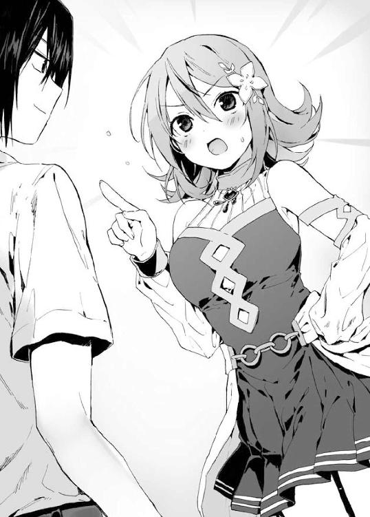
「その新しく生み出した魔札はどうしてるんだ？」
「クエストの景品にしてますよ」
クエストというのは、月に一度開催される神託遊戯のことだ。ティナがルールと賞品を決めること以外は一般的な神託遊戯と変わらない。
クエストは精霊の自治区でしか開催されず、お金に家屋に土地に魔札など様々なものが景品にされる。
新たな魔札が景品になるのは年に一回だけであり――その月のクエストには世界各地の腕に覚えのある魔札使いが参加するため、競争が激化するらしい。
「次に新しい魔札が景品になるのはいつだ」
「三ヶ月後のクエストですね」
「んじゃ、それは確実に手に入れるとして......あるいは、それまでに五〇枚の魔札を入手するとして。ここ五〇年で五〇枚の魔札が生まれたわけだが――そいつの所有者はどこのどいつだ？」
「あなたにだけ特別に五〇枚の在処を教えることはできません。姉様を救うためとはいえ、わたしは最高神の代理なのですから。そこに私情を挟むわけにはいきません」
ティナは毅然とした態度でそう言った。
ですが、と少しだけ表情を緩める。
「わたしは最高神ではなく代理ですから――ちょっとくらいは誰かを特別扱いしてもいいでしょう」
翔真はにやりと笑う。
「いいねえ。融通が利く奴は好きだぜ」
かあっと頬を紅潮させるティナ。
「あ、あなたに好かれても困りますっ。第一、あなたには姉様がいるではないですかっ。もちろんおふたりの仲を認めたわけではありませんけど！ だからといってほかの女性を口説こうとするなんて言語道断です！」
口早にそう言うと、ティナは調子を取り戻すようにこほんと咳をする。そして、淡々と語り始めた。
「ここ五〇年で生み出した魔札は、各一枚しかこの世に存在していません――すなわち、超絶激レアなのです。それほどの希少な魔札は、最終的には有力者のもとに流れつきます。なにしろ高値で売れますからね。それに神託遊戯で奪われもします。所有者の個人情報は明かせませんが、五〇枚は八大門派の自治区に散らばってますね」
「つまり、俺たちがいまいる精霊自治区には存在しないってことか」
「そういうことです」
うなずき、ティナはエメラルドグリーンの瞳をアイリスに向ける。
「ではアイリス姉様、わたしはそろそろお暇させていただきますね。これから三ヶ月後のクエストに向けて、精霊たちと会議をしなくてはなりませんので」
「うむ。今日は会えてよかったのじゃ」
「わたしもです姉様っ。ではまたどこかでお会いしましょう！」
ティナは踵を返す。
ああ、そうだ――と思い出したように振り返り、
「姉様を助けてくださって、本当にありがとうございます......翔真、さん」
照れくさそうに、そう言った。
ティナの姿が見えなくなると――〈密談空間〉の効果も切れた。賑々しい喧噪のなか、〈書物〉を開き金銭の有無を確認した翔真は、椅子から腰を浮かした。
軽くのびをして、アイリスに話しかける。
「さてと......そろそろ飯にするか」
「食料はカード化されておったのか？」
「ああ。一生かけても食い切れねえほどにな」
先ほど〈書物〉を確認したとき、チート魔札を除いた特殊魔札は五〇〇〇〇枚ほどあることが明らかになった。水に食料に衣類に建造物に貴金属に通貨に......とにかくいろんなものが保管されていたのである。
アストラルの通貨は『銅貨』『銀貨』『金貨』『白金貨』の四種だ。一銅貨は果物一つ、一銀貨は庶民の一食、一金貨は庶民の日給、一白金貨は集合住宅の家賃一月分に相当する。
そして翔真の所持金は――一〇〇〇〇〇〇〇〇白金貨。
言うまでもなく、これは一生遊んで暮らせる金額だ――もっとも、翔真にとっては神託遊戯こそが最高の娯楽なので、アストラルにいる限り翔真は二重の意味で遊んで暮らせるわけである。
「しっかし、よくもまあここまでの金を集めたよな。全財産をよこせと要求しまくったんだろうが......我がじいちゃんながら、血も涙もない男だぜ」
まあ、責めるつもりは毛頭ないが。ゼロから始めて魔札コンプリートを果たすためには、全財産ごと魔札を奪うのがてっとり早いわけだし。それに五〇年前といえば新婚当初だ。最愛の妻と引き裂かれた敦盛は元の世界へ戻るため死に物狂いで魔札を集めていただろうし、敗者に情けをかける余裕などなかったのだろう。
「とにかく――せっかく金があるわけだしさ、店で食おうぜ店で！」
「翔真の好きにするがよい。わしは食えぬしな」
アイリスは霊体である。彼女にとっての食料は翔真の生命力なのだ。
「そんじゃ、俺の生命力で腹を満たしてくれや」
「すまぬが、そうさせてもらうのじゃ。して、どの店で食べるかは決めておるのか？」
「バニーガールが客引きしてた店で食うぜ」
「バニーガール......ああ、獣牙門の店じゃな。そこはやめておいたほうがよいぞ」
「獣牙門は料理が下手なのか？」
「そうではない。そなたは騎士門に外見が近いと言ったじゃろ。たしかにここは中立自治区じゃが――どこであろうと種族同士は互いに反目しあっておる。商売じゃから門前払いは食らわぬじゃろうが、いい顔はされぬじゃろうて。そなたとて、どうせ食事するなら気分よく食べたいじゃろ？」
「そりゃな。けど、バニーガールが俺を嫌ってると決めつけるのは早いんじゃねえか」
大多数の種族が他種族を嫌っているのだとしても――全員がそうだと決めつけるのは、愚かなことだ。
表立って他種族と親密になることはないかもしれないが、アイリスのように差別意識のない者もいるはずだ。
「好きにするがよい。わしはそなたに付き従うと決めたのじゃからな」
「おう。やりたいようにやらせてもらうぜ」
と、そうして翔真はバニーガールが営む店へと向かうのだった。
◆
「いらっしゃいませ～！」
目的の食事処〈うさぎ亭〉の扉を開けると、看板娘が小走りに駆け寄ってきた。
歳の頃は一六、七といったところか。ぱっちりとした瞳が印象的な、童顔の女の子だ。赤い髪はポニーテールにまとめられ、活発そうな印象を受ける。
身長は低いが、出るべきところは出て、引っこむべきところは引っこんでいる魅力的な体つきだ。頭部にはうさぎ耳が、きゅっと引き締まった尻には思わず触りたくなるようなもふもふの丸いしっぽがついている。
「二名様ですね？ いまカウンター席しか空いてないんですけどだいじょうぶですか？」
ぐるりと店内を見回すと、一二ほどあるテーブル席は埋め尽くされていた。カウンター席もあと二席しか残っていない。なかなか繁盛しているようだ。
「あんたの手料理が食えるなら、座る場所なんざどこでもいいぜ」
「え、......えっと」
バニーガールが笑顔のまま硬直する。
と、そのとき、入口近くの席に座っていた翼を生やした小太りの男が話しかけてきた。
「おい兄ちゃん。カンナちゃんは、俺たちのアイドルなんだ。独り占めしようったって、そうはいかねえぜ。なあ、みんな！」
そうだそうだ！ と客の男たちが野太い声を響かせる。騎士門に獣牙門に飛翼門に――様々な種族が〈うさぎ亭〉に集結していた。種族の垣根を越えて、看板娘を応援しているらしい。実際、多くの男をとりこにするほどの魅力が、バニーガールには備わっていた。
「いい店だな。気に入ったぜ」
翔真が素直な感想をもらすと、バニーガールことカンナはにっこり笑う。店を褒められ、心から喜んでいるようだ。
「ありがとうございますっ。それじゃあ、お席に案内しますね」
カンナの案内を受け、翔真はカウンター席の端に腰かける。ものに触れないアイリスは、椅子に座ることができないため、翔真の頭上にぷかぷか浮かぶ。
「ご注文が決まったら呼んでくださいねっ」
笑顔を振りまき、カンナは丸いしっぽをふりふりしながらカウンター横の扉から厨房に入っていった。
「ほらな、俺の言ったとおり嫌われなかっただろ。いろんな種族が仲良くできる、いい店じゃねえか」
翔真は得意気に語る。
「いい店なのは認めるが......そなた、小娘のお尻を見つめすぎじゃ」
アイリスがジト目で指摘してくる。
「いいじゃねえか、減るもんじゃねえし......と、けっこうメニュー充実してんな。ここは肉料理中心の店だったか。腹減ってるし、がっつり食いてえな......よし決めたぜ」
「決めるの早いのぅ」
「アイリスを倒した戦術も、これくらいのスピードで決めたぜ」
「わしの五〇年って......」
がっくりうなだれるアイリスをよそに、翔真は注文するべくカンナを呼ぶのであった。
「おうおう、繁盛してんじゃねえか」
翔真がカンナに注文を伝え終えたとき、〈うさぎ亭〉に地鳴りのような低い声が響き、床板がぎしぎしと軋み音を立てた。
獣のような風貌の男が五人、ぞろぞろと店内に踏みこんできたのだ。
どいつもこいつも気の荒そうな顔つきをしており、酒の臭いを漂わせている奴までいる。なかでも目を引くのは二メートルを超す巨漢だった。顔つきはいかつく、眼差しは鋭く、全身を覆う体毛は針金のようで、まさに熊のような印象を受ける。
彼らの入店を受け、それまで賑々しかった店内はしんと静まりかえった。五人組と目をあわせないように顔を伏せる者、窓の外へ視線を逃がす者、なかには金も払わずに店から逃げだす者までいる。
そんな状況を作り上げた五人組に、さっきまで笑顔で翔真の注文を受けていたカンナは迷惑そうに顔をしかめた。
「グズマ......なにしに来たの」
ぞろぞろと仲間を引き連れてカウンター席までやってきた巨漢――グズマは、じろりとカンナを見下ろす。
「ここは飯屋じゃねーのかよ」
「......注文がたくさん入ってるから、あなたたちの料理を作る余裕はないの。ほかの店をあたってちょうだい」
「クソ種族どもの注文をキャンセルすりゃあいいだろうが」
「そんなことできるわけないじゃない！ それにいまは満席なのよ！ そこに立たれると邪魔になるから出ていってちょうだい！」
「満席だァ？」
グズマがぐるりと店内を見まわす。客たちがさっと視線をそらした。
「たしかに、クソみてぇな種族の溜まり場になってやがるな。どれ、オレ様が追いだしてやろうか」
「やめて！ お願いだから出ていって！」
カンナが悲鳴を上げると、グズマは嗜虐的な笑みを浮かべた。
「他種族の肩を持つたァ――いい度胸してんな」
「種族が違うからなんだっていうのよ！ あんたみたいにまわりに迷惑かけるひとより、よっぽどいいひとたちだわ！」
巨体の同族を前にしているというのに、カンナは堂々と他種族を庇う。
「このオレ様が親切にも資金援助してやったから、この店は潰れずに営業できてるんだぜ。それを忘れちまったのか？」
その一言にカンナの威勢が削がれた。悔しげな眼差しでグズマを睨みつける。
「......あたしが借りたわけじゃないわ」
「そうさ、借りたのはてめえの両親だ。けっきょく金欲しさに神託遊戯を挑んで負けて、奴隷になっちまったがな。オレ様も、てめえみたいなガキにこんなこと言うのは心苦しいけどよォ――てめえの親は騎士門の自治区に移送されちまったじゃねぇかよ。だから娘のてめぇから取り立てるしかねぇのさ」
カンナの両親は騎士門との神託遊戯に敗れ、奴隷になってしまったらしい。
「だ、だけど......毎月ちゃんと返済してるじゃない。そろそろ完済するはずよ」
「完済？ 馬鹿言ってんじゃねえよ。完済どころか、まだ半分も返してもらってねえぜ。てめぇが金を返さねぇ限り――ここは、オレ様の店みてぇなもんだ。だってのに従業員に他種族ばかり雇いやがって。しかも客までクソ種族ときた。これ以上オレ様の店を穢すんじゃねぇ」
「あんたの店じゃない！ ここは......ここはお父さんとお母さんの店よ！ そ、それに、ふたりが借りたのは一〇白金貨だったはずよ！ あたしはもう七白金貨は返したわ！」
「ああ、確かにオレ様が貸したのは一〇白金貨だ。だが、それには利子がつく。てめえの親がサインした借用書にも、利子のことはちゃんと書いてあるぜ」
「嘘よ！ そんなの嘘！ だってそんなのどこにも書いて......」
カンナははっとした表情を作り、おそるおそるといった様子で口を開く。
「ま、まさかあんた......〈擬態〉を使ってたわけ？」
ああ、そうだ――とグズマは悪びれることなく認めた。グズマは、ある物をべつの物に変身させる〈擬態〉の魔札を使い、借用書から利子に関する文章を消していたのだ。
最高神の力によって暴力行為全般が禁止されてはいるものの、詐欺に恫喝に窃盗など、人体に危害を加えない行為は禁じられていない――この世界に警察的な組織が存在するかどうかはわからないが、連行とは『本人の意思とは無関係に連れて行くこと』だ。つまり暴力行為に含まれる。そのことを考えると――たとえ警察的な組織が存在したとしても、グズマが捕まることはない。
騙すより騙されるほうが悪いとまでは言わないが――騙されないように用心を怠ってはならないのである。
「お父さんとお母さんを騙したのねッ!? この卑怯者！」
「オレ様のせいにすんじゃねえよ。借用書にサインする前に、ちゃんと〈看破〉を使って確かめなかったてめえの親が間抜けだっただけじゃねえか」
正式な契約書や借用書は精霊が発行している――神託遊戯における『要求』と同程度の強制力があるため、カンナが借金を踏み倒すことはできないのである。
カンナは悔しげにグズマを睨みつけ――やがて、苦々しそうにつぶやいた。
「......いくらよ？ あと、いくら返せばいいわけ？」
グズマは、にぃっと鋭い牙を見せるように笑う。
「一〇〇白金貨だ」
「ひゃ、ひゃく......」
借金の額を聞かされ、カンナは絶句してしまっている。ちなみに一〇〇白金貨は庶民の年収を軽く上回っている。〈うさぎ亭〉の売り上げがどれほどのものかは知らないが――容易に返せる額ではないことは、カンナの反応を見ればわかることだ。
「一〇〇白金貨払えば二度と店の方針に口出ししないでやるぜ」
「そ、そんな大金......払えるわけ......」
「なら、ここにいるクソ種族どもに払ってもらうとするか」
グズマが宣言した途端――カンナをアイドル扱いしていた客たちが一目散に店を去った。
カンナのことは好きなのだろうが、自分を犠牲にしてまで助けるほどではないようだ。そんな悲しい現実を目の当たりにし、カンナはそうとうなショックを受けたらしい。瞳にじわりと涙が浮かび、ぎゅっと唇を噛みしめ、泣くのを我慢している。
閑散とした店内に、グズマの哄笑が響き渡った。
「薄情な連中だなァおい。ま、しょせんは他種族――命を張ってまでてめぇを助けようとする奴なんざいないってこった。まあ金が払えねぇならしかたねえ。カンナ――てめぇ、オレ様の仕切る店で働け。てめぇの身体なら、一〇〇白金貨くらいすぐに稼げるぜ」
グズマが下卑た表情で告げる。グズマが言っているのは早い話、男に身体を売って金を稼げということだ。嫌々だろうとカンナが合意した時点で、それは暴力行為ではなくなるのだから。
「そ、そんなの......」
カンナは腰が抜けたようにへなへなと座りこみ、泣きそうな顔をうつむかせてしまった。
グズマに神託遊戯を挑めば借金を帳消しにできるだろうが、勝てる自信があればすでにそうしている。グズマの催促を無視し続ければ、この先ずっと迷惑をかけられるだろうし、このままでは客が寄りつかなくなり、店が潰れてしまう。それを避けるためにはグズマの言いなりになるしかない――知らない男に身体を売り、親の借金を返すしかないのだ。
「おい、そこのでかぶつ」
と、そこで翔真は口を開いた。
カウンター席に座ったままグズマを見上げていると、彼はこっちを睨み下ろしてきた。
「まだクソ種族が残っていやがったか。ちっこすぎて見えなかったぜ。んで、クソ種族がオレ様になんの用だ。まさかとは思うが、カンナを助けようってんじゃねぇだろうな」
「助ける？ なんで俺が見ず知らずの奴を助けなくちゃならないんだ」
予想外の返答だったのか、グズマは一瞬ほうけた顔を作ったあと腹を抱えて笑いだした。
「こいつは傑作だ！ 聞いただろカンナ、てめぇがどんだけ他種族に親切にしようが――こいつらは恩を仇で返してくるんだよ！」
「そこのでかぶつ、ひとの話は最後まで聞け。俺はなァ、おまえのせいで注文が厨房まで届かないことに苛立ってんだよ」
グズマは舌打ちした。
「ふざけた野郎だ。つーかカンナ、こいつ騎士門じゃねえか。てめぇは親の敵にまで飯を食わせてやるのかよ。とんだ親不孝者だな」
「......このひとがなにかしたわけじゃないわ。それにお父さんとお母さんは合意のうえで神託遊戯をした......騎士門だからって、恨むのは筋違いよ」
「この期に及んでまだクソ種族を庇うのか。てめえこいつに惚れてんのか？」
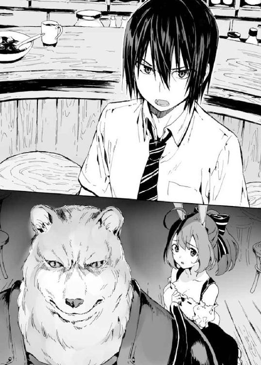
「そっ、そんなんじゃ――」
「自分がもてないからってひとの恋路を邪魔するのはかっこ悪いぜ、おっさん」
「翔真よ。そこは小娘に否定させてやるべきところではないかのぅ」
カンナの言葉を遮る翔真に、アイリスが天井付近からツッコミを入れる。
「もう一匹クソ種族がいやがったか。チビのくせにオレ様を見下ろすとは生意気な女だ」
「わしをクソ種族呼ばわりするとは、獣牙門はいつからそんなに偉くなったのじゃ」
「なんの取り柄もねえ騎士門が、獣牙門を馬鹿にしてんじゃねえ！」
グズマは地響きのような怒声を飛ばした。獣牙門であることに誇りを持っているようだ。もっとも、グズマのような輩は珍しくもなんともないのだろうが。アストラルではむしろ彼のような他種族を侮蔑する考え方こそ、一般的なのだろう。
「獣牙門を馬鹿にしておるのではない。そなたを馬鹿にしておるだけじゃ。それにじゃな、わしは騎士門ではない。霊体族――すなわち、死霊門じゃ。そなたの目は節穴だったようじゃな」
「んだと？」
グズマが眼光を鋭くさせた。すると、まわりに立っていた男たちがグズマに加勢する。
「霊体のくせに飯食いに来てんじゃねえよ！」
「死霊門の連中は頭が腐ってるって聞くぜ」
「そんな腐った頭じゃ、自分が飯を食えないことに気づけなくて当然か！」
「死霊門は馬鹿の集まりってわけだな！」
そう言って、男たちはアイリスを嘲笑する。
「――おい、そこのおまえ」
と、翔真は男のひとりを指さした。死霊門は馬鹿の集まりだと発言した、ヤギのようなツノを持つ男だ。
「なんだクソガキ」
「おまえは死霊門を馬鹿にしたが――死霊門の自治区でも同じことが言えるのか？」
「へっ。言えるに決まってんじゃねぇか。死霊門なんざ獣牙門の敵じゃねえしな」
「そっか。なら証明してこいよ」
そう言った翔真の胸元には、一枚の魔札が浮いていた。それを見て男たちが身構えるが――もう遅い。
「〈瞬間移動〉！」
詠唱した途端、翔真と話していた男が姿を消した。グズマたちは慌てて店内を見まわす。そしてヤギ男がいないことを確かめると、翔真に詰め寄った。
「て、てめぇなにしやがった!?」
「死霊門の自治区に転送してやったぜ」
翔真は悪びれることなく告げてやった。事前に〈千里眼〉を使用していた翔真は、男と話しつつも死霊門の自治区で一番賑わっている街を見つけ、そこへ男を送ってやったのだ。
これが『海底に瞬間移動させる』だと命に関わることは明白であり――暴力行為という認識があるため〈瞬間移動〉は使えなかったが、翔真はヤギ男を死霊門自治区に転送することを暴力行為だとは思っていないため、〈瞬間移動〉を使うことができたのだった。
「なんてことしやがる！」
「もう二度と戻ってこれねえかもしれねえんだぞ！」
「てめえ、いますぐ連れ戻せ！」
などと怒鳴る男たちを片手で制し、リーダー格であるグズマが言う。
「そんなことより――なんでてめぇみたいなガキが〈瞬間移動〉なんて持ってやがるんだ。そいつは世界に五〇〇枚しかないカードだってのによォ」
「なんで五〇〇枚だって知ってんだ？」
「リストが出回っておるのじゃ」
アイリスが教えてくれた。
書店にいけば〈魔札コンプリートのススメ〉との書籍が売られているらしく、そこにはコンプリートに必要な魔札が何枚流通しているのかと、入手難易度（ＳＳＳ、ＳＳ、Ｓ、Ａ～Ｅの八段階評価）、そして、その効果が記されているらしい。たとえばアストラルに五〇〇枚流通している〈瞬間移動〉の入手難易度はＡランクである。
翔真の魔導指輪にも〈魔札コンプリートのススメ〉は保管されているかもしれないが、それは最新版ではない。
あとで書店を探して買ってみるかと予定を立てつつ、翔真はグズマの相手をする。
「まさか〈瞬間移動〉がそんなに珍しいものとは思わなかったぜ。五〇枚持ってるしな」
「「「「な!?」」」」
グズマたちの目が驚愕に見開かれる。
「Ａランクの魔札を五〇枚だとッ!? 馬鹿言ってんじゃねえよ！ Ａランクの魔札は一枚売れば豪邸が建つほどの金が手に入るんだぞ!?」
「カンナの借金なんざ霞むほどの価値があるぜ!?」
「そんだけあるなら一枚くれよ！」
男たちのぎらついた眼差しが翔真に集まる。
「やらねえよ。けどまあ〈瞬間移動〉を手に入れたいって気持ちはわかるぜ。〈千里眼〉と組み合わせれば、どこへでも行けるしな」
「ちょっと待て！ てめえ〈千里眼〉まで持ってんのかっ!? 信じらんねえ！ そいつはＳランクの魔札だぜ!?」
へえ、と翔真。
「〈千里眼〉の入手難易度は〈瞬間移動〉以上なのか。〈千里眼〉は一〇〇枚持ってるし、入手難易度も低めだと思ってたぜ」
「ひゃ、一〇〇枚だと!?」
「じゃあてめえが独占してんのかよ!?」
どうやら〈千里眼〉は一〇〇枚しか存在していないようだ。最高神代理であるティナは魔札をコンプリートされないように魔札を創り続けてきたが、その必要はなかったのだ。
「俺が〈千里眼〉を持ってる限り、誰もコンプリートできないってわけか。よかったな」
アイリスにだけ聞こえるように小声でささやくと、彼女は安心したようにうなずいた。
「うむ。気がかりがひとつ消えたのじゃ」
「おい、てめぇ。いま何種類魔札持ってんだ？」
グズマが訊いてくる。
「おまえから教えろよ」
強気な態度を崩さない翔真に、グズマは苛立たしげに舌打ちして、
「......オレ様は八〇〇種だ」
「八〇〇だと？」
翔真がぽかんとしたのを見て、グズマたちは威勢を取り戻した。
「どうだ、驚いたかクソガキ！ グズマさんはすげえんだ！」
「ま、驚くのも無理ねえわな。だって八〇〇種類だぜ八〇〇種類！」
「グズマさんは、このあたりじゃ一番コンプリートに近い男だと評判なんだよ！」
得意気にまくし立ててくる男たちに、翔真は肩をすくめてみせた。
「ったく、その程度でコンプリートに近いなんざ、笑わせてくれるぜ」
グズマのこめかみに青筋が浮かぶ。
「......そういうてめぇは何種類だ？ ......まさか一〇〇〇種超えてるとか言うんじゃねえだろうな」
「一〇〇〇種？ 馬鹿言ってんじゃねえよ。俺は――一〇〇〇〇種持ってるぜ」
「は!? 一〇〇〇〇!? マジで一〇〇〇〇も集めたのか!? ちょっと指輪見せてみろ！」
翔真は右手をかざしてやった。男たちの視線が指輪に集まる。
「お、おいおい......マジで金ぴかじゃねえか......」
「俺、ゴールドリングなんてはじめて見た......」
「きみは何者なの......？」
カンナまでもが、翔真の魔導指輪に絶句している。
どうやら魔導指輪はコンプリート率に応じて色を変える――〇～三〇〇〇がブロンズ、三〇〇一～八〇〇〇がシルバー、八〇〇一～一〇〇四九がゴールド、そして一〇〇五〇の魔札を集めると、魔導指輪は虹色に光り輝くのだとか。
翔真が身につけている指輪は一度は虹色になったはずだが、魔札の種類が増えたため、ゴールドに戻ってしまったのだ。
「......神託遊戯で、オレ様たちと勝負しねえか？」
「ちょ、グズマさん!? なに言ってんすか！」
「いくらなんでも一〇〇〇〇種も集めた奴に敵いっこないっすよ！」
仲間たちが止めようとするが、グズマは眼光を鋭くさせて黙らせる。
「戦う前から弱音吐いてんじゃねえ！ 考えてもみろ、オレ様たちは四人もいるんだぜ。だが、向こうはふたりだ。しかも女のほうはブロンズじゃねえか。異常なのはガキのほうだけってわけだ――つまり、あのガキさえ倒せばオレ様の勝ちは約束されたも同然だ！ いつもの手を使えば、オレ様たちにも勝ち目はある」
と、半ば無理やり仲間を説き伏せたグズマは翔真に向きなおる。
「さあ、どうする？ オレ様たちの勝負を受けるか――それとも、しっぽ巻いて逃げるか。ああ、騎士門にはしっぽ生えてねえんだったな」
挑発するような態度を取るグズマ。
「いいぜ、戦ってやるよ。おまえらがここにいたんじゃ、カンナが料理に取りかかれないしな」
翔真が勝負を受けると、グズマは「決まりだな」と牙を見せるようにして笑い、仲間と円陣を組むように集まりルールの打ち合わせを始める。
「ってなわけで、カンナは料理に取りかかってくれ。急いだほうがいいぜ。なにせ一瞬で片がつくからな」
「う、うん......。その、頑張ってね、ええと......」
「翔真だ」
名乗ると、カンナがじっと見つめてきた。
「頑張ってね、翔真くん。も、もし負けて全財産を奪われても、あたしがずっと面倒見るからね」
翔真は微笑する。自分だって生活が苦しいくせに、翔真を養おうとしてくれている――差別意識がないことからもわかっていたが、カンナは本当に優しい女の子なのだ。彼女の平和な日常を守るためにも、確実にグズマ一派を倒さなければならない。
「そいつは魅力的な提案だが、俺はぜったいに負けたりしないぜ。だから頑張って料理を作ってくれよな。極上の飯を期待してるからよ」
「う、うんっ、わかった。一生懸命作らせてもらうね」
自信満々な翔真の言葉に安心したのか、カンナは明るい声でそう言うと、厨房へ駆けていった。
◆
「それではルールの最終確認をするのですっ！」
バトルフィールドの草原に審判役たるニンファの声が響き渡った。連続して同じ審判に当たったというより――ティナの采配で翔真の審判を任されたのだろう。ティナとしては翔真の動向は気になるところだろうし、また翔真としても、どうせ審判を任せるのなら、見知った精霊のほうが安心できる。
「今回の新ルールは『グズマはチームで戦う』、『翔真はチームで戦う』、『魔札はひとり五枚しか使えない』――以上の三つですっ。間違いありませんね？」
ニンファの確認を受けて、翔真と、そこから一五メートルほど向こうに散らばっているグズマ一派が肯定の返事をした。
「足枷になってすまぬ......」
と、アイリスが伏し目がちに謝ってくる。
アイリスは魔札を根こそぎ翔真に奪われたため戦う術を持っていない。そうでなくとも翔真はひとりで戦うつもりだが、神託遊戯開始前、グズマ一派に『てめえもルール作れよ。じゃねえと要求できねえだろ』と告げられたため、『チーム戦』とルールを提案していた。チーム戦を設けずともアイリスは宿主の翔真から離れられないため、バトルフィールドに転送されていたのだが――その場合は参加者とは見なされず、ライフポイントがつかず、ダメージが肩代わりされないため最悪の場合は死に至る。それを考えると、グズマ一派にルールを作れと言われなくとも、翔真は『チーム戦』を提案せざるを得なかった。
「気にすることはねえ。どうせ一瞬で俺が勝つんだ、気楽にいこうぜ。それより、俺から離れてろよな」
「うむ。わかったのじゃ」
と、アイリスが翔真と離れられるぎりぎりの範囲まで遠ざかったところで、ニンファが一際大きな声を張り上げた。
「――ではではっ、神託遊戯スタートなのでーす!!」
「「「「〈百発百中の弓〉！」」」」
ニンファがゲーム開始を宣言した直後、グズマ一派が一斉に唱えた。次の瞬間、彼らの頭上に魔法陣が展開、無数の弓矢が現れる。その先端はすべて翔真に照準を合わせていた。翔真を倒せば勝てると宣言していただけあり、やはりアイリスは眼中になかったようだ。
グズマは勝ち誇るように雄叫びを上げる。
「三〇ダメージを与える弓矢が五〇〇本――一つ一つの威力は弱ぇが、一度にすべて防ぎきるのは不可能だろ！ くたばれクソ種族が！」
シュババババババ――！
風切り音を奏でつつ五〇〇の弓矢が飛来する。威圧されてもおかしくない――否、怯まないほうが不自然とも言える圧倒的数量の弓矢を前にして、しかし翔真は落ち着き払って詠唱した。
「〈歩く城塞〉！」
瞬間、翔真の周囲に二メートル四方の立方体が出現する。半透明の壁は翔真に向かって収束していき、半透明の膜が一七五センチの身体をコーティングした。
直後、次々と押し寄せる弓矢が翔真の肉体を射貫こうとする――が、しかし、それらは翔真の身体を貫くことなくぺきぺきと情けない音を立ててへし折れていく。
......時間にして、五、六秒といったところか。
五〇〇もの弓矢は翔真にダメージを与えることなく地に落ち、役目を終えたとばかりに消滅した。その光景を現実のものとして受け止めきれないのか、グズマ一派は唖然とした顔をして、慌てふためく。
「な、なんであの野郎のライフは一〇〇〇のままなんだよ！」
「たった一枚の魔札で五〇〇の弓矢を防ぎきったのか!?」
「ダメージを五〇〇回も軽減する魔札とか俺知らねえぞ！」
「てめえ、いったいなにを使った！」
一五メートルほど向こうでわめくグズマ一派に、翔真は悠然と佇み、こう告げた。
「簡単さ。『ダメージ以下の攻撃を軽減して０にする』効果の装備魔札を使ったんだ」
「な......っ！ そんな魔札聞いたことがねえぞッ！」
そりゃそうだ、と翔真は内心で答えてやる。先の〈歩く城塞〉は、翔真がアイリスとの戦いで入手したオリジナルの魔札なのだから。グズマ一派が知っているわけがないのだ。
「どうした？ もう攻撃は終わりか？」
質問しつつも、打つ手なしだろうと翔真は確信していた。
グズマ一派の戦術は一斉攻撃による一撃必殺――翔真が〈歩く城塞〉を使った時点で、彼らの勝ちは万に一つもありえない。
たとえザコカードしか持っていなくても、なにかしらのコンボを使えば一〇〇〇以上のダメージを与えることはできるのだが――しかし彼らはその戦術を考えてこなかった。
だからこそ、この勝負は翔真の勝ちだ。
「だ、だが......だが！ てめえは魔札をあと四枚しか持ってねえっ！ 四枚でオレ様たち全員を倒すのは不可能だ！ なんたって、一枚で一〇〇〇ダメージを与える魔札は一種類――〈雷帝の裁き〉しかねえからな！ そして同じ魔札は三枚までしか持ちこめねえ！」
グズマの怒声を聞き、男たちの顔に生気が宿った。
だが、翔真は不敵に笑う。
「さて、それはどうかな。――〈命を刈り取る大鎌〉！」
しん、と水を打ったように静まりかえった。
初耳のカードだったのだろう、なにが起こるのかとビクビクしていた男たちは、やがて安堵したように吐息する。
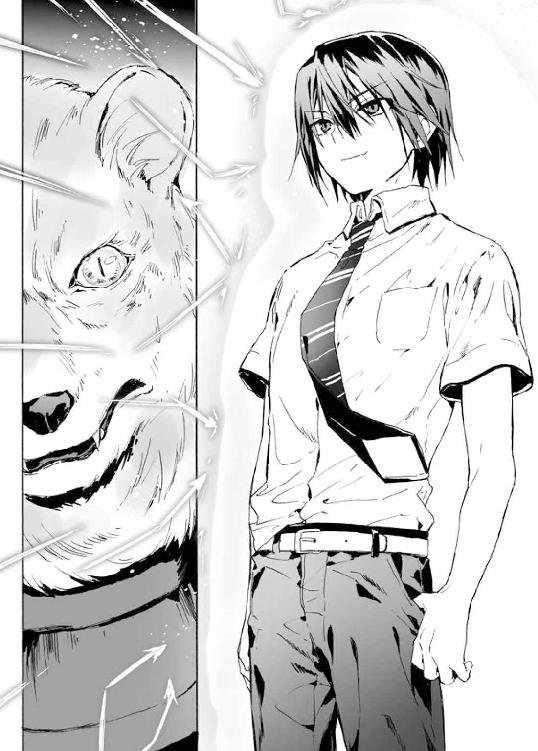
「な、なんだ、なにも起こらねぇじゃねぇか」
「はははっ。もしかしてダメージ０だったんじゃねぇの？」
「勘違いしてんじゃねえ。そこの髭を生やしたおまえ、うしろを見てみろよ」
翔真の指摘を受け、猫のような髭を生やした男がうしろを振り向き、
「ひ、」と短い悲鳴をもらす。
そこには――黒装束を纏った骸骨が浮いていた。刃渡り二メートルを超す鎌を振り上げ、まさに振り下ろす瞬間を目撃した彼の恐怖は計り知れない。
猫髭男は仲間に手を伸ばし、
「助け」
シュパッ――！
鎌の一閃を受け、瞬時に消滅した。
「「「......っ!?」」」
ノーダメージだったはずの仲間が一撃で〈隔離空間〉へと敗退した。その事実に理解が追いつかないのか、グズマ一派は立ち尽くすことしかできない。
グズマ一派は知る由もないことだが――今回翔真が手札に選んだ五枚の魔札は、すべてオリジナル魔札。すなわち翔真が手札にした四枚の攻撃魔札は一枚一枚が一〇〇〇以上の攻撃力を誇っている。
その魔札を――一度使えばこの世から消滅してしまう魔札を、翔真は惜しげもなく使う。
「〈終焉世界の霹雷〉！」
突如青空に巨大な魔法陣が出現。次の瞬間、眩い閃光とともにズドンと轟音が上がる。落雷の直撃を受けた男は敗退――爆心地の近くに立っていたグズマ一派は強風に殴られ、軽々と吹き飛ばされた。強く地面に叩きつけられるが、〈終焉世界の霹雷〉は対象一名にダメージを与える魔札であるため、ふたりのライフは一〇〇〇のままだ。
「じゃんじゃんいくぜ！ 〈氷姫の息吹〉！」
「――」
標的となった小太りの男は悲鳴を発する暇もなく氷の彫刻と化し、砕け散るようにして敗退する。
「さて、あとはおまえだけだな......って、おいおい、どこに行くつもりだ？ おっさんと追いかけっこする趣味はねえぜ」
あっという間に仲間をすべて失ったグズマは戦意喪失したのか敵前逃亡、全速力で翔真から遠ざかっていく。
「ま、逃げても無駄だがな！ 〈側近の裏切り〉！」
翔真は最後の魔札を詠唱した。瞬間、グズマの体内から突如として無数の刃が飛び出す。そうしてハリネズミのようになったグズマは、倒れるより先に姿を消したのだった。
◆
「さて、俺はおまえらに二つの要求を呑ませることができるわけだが......」
バトルフィールドから〈うさぎ亭〉へ舞い戻ってきた翔真は、ニンファ立ち会いのもとグズマ一派と向かいあっていた。店内は相変わらず閑散としており、ここにいるのは神託遊戯に参加した六人のほか、ニンファと店主のカンナだけである。
グズマ一派に先ほどまでの覇気はなかった。リーダー格であるグズマはなんとか正気を保っているが、残る三人はしゃべる気力も失せているようだ。
「......要求は、なんだ」
グズマが憔悴しきった顔で言う。
「一つ目は『カンナの両親と交わした借用書を破棄しろ』だ」
「そ、それでいいの？」
カンナが口を挟んできた。これは翔真が摑んだ勝利なのだから、要求権は自分のために使うはずだと思っていたのだろう。
「いいんだよ。俺が個人的にこいつらに要求したいことはないしな」
それだけ告げると、グズマに向きなおる。
「あと一つ要求しなくちゃならねえのか......。うーん、どうすっかな」
「なにもないようでしたら、要求しないこともできるのですよ」
ニンファが言った。
グズマが一瞬安堵の表情を浮かべるが、翔真はきっぱり断ってやる。
「要求はする。そうだな......おまえらのせいで俺は無駄な時間を過ごすことになったから、おまえらにも無駄な時間を過ごしてもらうとするか」
「......どういう、意味だ？」
グズマが眉をひそめて訊いてくる。
「ほら、さっき俺が死霊門の自治区に飛ばした奴がいるだろ？ そいつをこの都市に連れ戻してこい。それが二つ目の要求だ」
グズマがわななく。
「ふざけんじゃねえ！ ここから死霊門の自治区まで、どんだけ距離があると思ってんだ！いや、この際距離はどうでもいい！ オレ様たちが死霊門からどんな扱いを受けると――」
「知るか。行け。いますぐに」
「ぐっ......」
グズマは押し黙った。勝者の命令は絶対遵守。どんなに困難な要求だろうと、グズマは従わざるを得ないのである。
「お、覚えてやがれ！」
「すぐに忘れちまいそうな気がするぜ」
にやついた笑みを浮かべてそう言う翔真に、グズマはぎりぎりと歯を噛みしめた。だが、怒鳴ったところでよけいな体力を使うだけだと悟ったのだろう。真っ青な顔の仲間を引き連れ、ふらふらとした足取りで〈うさぎ亭〉をあとにしたのであった。
「グズマたちを追い払ってくれて、本当にありがとう！」
グズマ一派が退店した途端、カンナが翔真に頭を下げてきた。
「礼はいらねえよ。俺は俺のために神託遊戯をしたんだからな。あいつらがいたんじゃ、いつまで経っても飯が食えねえしさ」
「で、でも本当に感謝してるの......翔真くんがいなかったら、あたしの人生は滅茶苦茶にされてたし、お父さんとお母さんの大切なお店を守ることもできなかった。翔真くんは、あたしの救世主様だよ」
「んなたいそうなことはしてねえよ。礼をする暇があるなら、早いとこ飯を作ってくれ。あとどれくらいでできるんだ？」
「えと......あとは盛りつけるだけだよ」
「じゃ、そうしてくれ」
「う、うん、わかった。もうちょっとだけ待っててね」
カンナはそう言い残し、厨房へと去っていく。
翔真はカウンター席に腰かけ、アイリスを見上げた。
「俺がまだ見ぬ五〇枚の魔札は、八つの自治区に散らばってるんだったよな」
「うむ。ティナはそう言っておったな」
「最初のターゲットをどこにするか――決めたぜ」
アイリスは唇を笑みの形にした。
「当ててみせようか。騎士門じゃろ？ そなたは――カンナの両親を救い出そうと考えておるのじゃな」
「まあな。どこから攻めるか決めかねてたし――魔札を手に入れるついでにな。ただし、そいつは俺のテストをパスできたらの話だが」
アイリスは小首を傾げる。
「テストとな？」
「飯が美味いかどうかだ」
まぁいま腹減ってるし、なにを食べても美味いと思うけどな、と微笑する翔真であった。
第三幕 はじめての奴隷契約
石造りの建物が建ち並び、道端には露店が溢れかえっている。綺麗に整備された石畳の道には老若男女が行き交い、その全員が特徴のない――個性的な服装や奇抜な髪型をした者もいるにはいるが、そういった人々も、例外なく人類と変わらない外見をしている。
騎士門自治区。
その首都グラジオに、翔真とアイリスはやってきていた。
騎士門の自治区ということで、翔真は敵意の眼差しを向けられることなく歩けているが、アイリスはゴーストである。霊体だと発覚すると一騒動起きると予見されるため、彼女はゴーストだとばれないように――誰かに接触してしまわないように翔真の頭上に浮かび、移動していた。
ちなみに聖神門と騎士門は外見的に似通っていて――違いといえば聖神門には〈創造〉〈融合〉などの特殊能力が備わっていることと、それゆえのプライドの高さだ。一般的な聖神門は外見が似ている騎士門をほかのどの種族よりも嫌っているため、口が裂けても『自分は騎士門』とは言わないが、種族間の争いを終わらせると息巻いていたアイリスは、他種族を自称することになんのためらいも抱かないようだった。
「さて、騎士門の自治区に来たわけじゃが......具体的な目的地は決まっておるのか？」
斜め上からアイリスの声が降ってくる。浮遊能力を持っている騎士門など存在しないが、アイリスはなにか訊かれたら『浮遊の魔札を使うのが趣味』と言い張るつもりらしい。
「有力者のところをあたってみる」
「有力者というと......領主に大農場主に、あとは奴隷商人とかじゃな」
「なら、狙いは奴隷商人に絞られるな」
「なぜじゃ？」
「農場主の仕事は農場運営だろ。代々受け継いだ農場を管理するだけで暮らせるわけだし、リスクを冒してまで神託遊戯をするメリットがない。領主も同じようなものだ。積極的に神託遊戯をしたって得なんかないんだよ。――けど、奴隷商人は違う。あんまりこういう言い方はしたくないが、奴隷は売り物なんだろ。てことは新たに奴隷を仕入れないと破綻するだろうし、そのためには神託遊戯をするしかない」
神託遊戯に勝ち続けられるということは、かなりの量の魔札を持っているということだ。そのなかに翔真の求める五〇枚の魔札が含まれているかもしれない――と翔真は説明する。
「なるほどのぅ。しかし翔真よ、奴隷商館は通り過ぎてしまったぞ」
アイリスは後方を指さした。五〇〇メートルほど引き返したところに、この都市で一番大きな奴隷商館が建っていた。
「奴隷商館に行く前に、寄るところがある」
「寄るところ？」
「全権代理者と神託遊戯しようと思ってな」
「全権代理者じゃと!? そ、そなたはいきなり自治区の頂点に君臨する者を倒すつもりなのか!?」
「そう言ったぜ」
けろっとした顔で応える翔真に、アイリスは驚愕した様子だ。
「たしかに全権代理者は有力も有力――自治区一の有力者じゃが、だからといって、普通最初に倒そうと考えるか？ 騎士門で最強の魔札使いなのじゃぞ？」
「知ってるぜ。けど、それを言うなら俺はいきなりアストラル一の有力者を倒したことになるんだぜ」
「......そうじゃな。翔真の言うとおりじゃ。召喚早々わしを倒すという偉業を成し遂げたそなたなら、全権代理者を倒すことくらい朝飯前じゃな」
「そういうこった」
まあ、と翔真は続ける。
「全権代理者が目当ての魔札を持っていたとして――それを首尾よく入手できたとして、俺は奴隷商人も倒すつもりだけどな」
「カンナの両親を救うのじゃったな。そなた、あの小娘の料理を『マジで美味いぜ！』と絶賛しておったしな」
「ああ。なんの肉かは知らねえが、あの肉料理は最高だった。嫁にほしいくらいだぜ」
「嫁じゃと!?」
アイリスが悲鳴を上げた。翔真の顔を真正面から見つめる体勢になり、不安げな視線を向けてくる。
「わしがおるではないかっ！ まさか結婚初日にしてもう愛想が尽きてしもうたのか？ な、なぜじゃ！ なにが気に入らなかったのじゃ！ 至らぬところがあればなおすのじゃ。じゃから、じゃから......わしを見捨てないでくれぇ......」
アイリスは涙目だ。おろおろと口元を震わせて、翔真に見捨てないでと訴えかけてくる。
きっと翔真に肉体を取り戻す約束を反故にされるんじゃないかと慌てているのだろう。
「安心しろ。ティナの前では自由気ままに生きると言ったし、その発言に嘘偽りはないが――それでも、アイリスの肉体はちゃんと取り戻してやるからさ」
微笑して告げると、アイリスは不満げに眉を下げた。
「そういう心配をしておるわけではないのじゃが――」
「おっ、見えてきたぜ！」
翔真は興奮気味に前方を指さした。家々の屋根の向こう側に、目的地たる全権代理者の居城が確認できたのだ。
優雅な佇まいの古城である。五角形を描くように尖塔が打ち立てられ、それぞれを結ぶようにして防壁が建てられている。城は堀に囲まれ、跳ね橋の前には衛兵が立っていた。
「止まれ。何者だ」
呼び止められなければそのまま先へと進むつもりだった翔真は素直に足を止め――傲岸不遜な態度で告げる。
「全権代理者はいるか？」
衛兵の顔に警戒の色が浮かぶ。
「ミスト様になにか用か」
「そう恐い顔すんなって。ちょっと神託遊戯を挑むだけだからさ」
「......ふざけているのか？」
「俺は本気だぜ。だからさァ、ミストって野郎に取り合ってくれよ。神託遊戯の挑戦者が城の前に来てるってな」
衛兵はため息をつく。
「貴様が本気だろうと、ミスト様と神託遊戯をすることはできない。それがこの自治区の規則だからだ」
衛兵の話によると、騎士門の全権代理者は個人との神託遊戯を受けつけていないようだ。理由はわかる。ひとりひとりを相手にしていては、翔真のような挑戦者があとを絶たず、休む暇がなくなるからだろう。なにより負けてしまえば自治区の代表が替わることになり、統治者がころころ入れ替わったのでは自治区が衰退しかねない。仲間同士で潰しあえば、他種族につけいる隙を与えてしまうことになるのだから。
「んじゃ――日をあらためさせてもらうとするか」
「何度来ても同じことだ。貴様だけを特別扱いするわけにはいかない。さあ、わかったら立ち去れ」
と、そうして翔真は文字通り、門前払いをされたのだった。
「さて、門前払いを食らったわけじゃが――これからどうするのじゃ？」
衛兵の姿が見えなくなってきたところでアイリスがたずねてきた。翔真は来た道を引き返しながら答える。
「ミストと戦うぜ」
「戦うじゃと？ そなた、話を聞いておらんかったのか」
「聞いてたさ。けど、ミストって奴が目当ての魔札を持ってる可能性は捨てきれねえ......むしろミストが五〇枚のうち何枚かを持ってる可能性が一番高いだろ」
騎士門のなかでは有力者の代名詞と言える全権代理者、ミスト。男か女かは知らないが、翔真の願望をこめて便宜上は彼女と呼ぶ。
彼女が全権代理者になって以降にクエストに参加して魔札を手に入れた可能性は、先の衛兵との会話からもないと断言できるが、直接クエストに参加せずとも、魔札はミストのもとへ集まってくる。
なにせミストは有力者中の有力者だ。魔札の買い取り手としてはこれ以上ない好条件を提示してくれるだろうし、全権代理者とのコネも作れる。売り手としては一石二鳥の取引相手だ。
「じゃが、全権代理者は個人とのバトルを受けつけておらん。そなたがどれだけ望もうと、ミストと戦うことはできぬのじゃ。それとも、それを打開する策があるというのか？」
「あるぜ。二つな」
「もう二つも思いついておったか......。さすが、頭の回転が速いのぅ。して、策とは？」
「一つ目は――俺がほかの自治区の全権代理者に成り代わることだ」
「さらりととんでもないことを言うのぅ。たしかに全権代理者になればミストと神託遊戯できるじゃろうけど――全権代理者になろうにも、ここと同じく門前払いされるかもしれぬぞ」
「ま、その可能性は高いな」
ほかの自治区から資源を奪うには、自治区の代表である全権代理者を倒すのがてっとり早い。
それゆえ自治区の代表である全権代理者は、同じく自治区の代表である全権代理者としか神託遊戯をしない――という規則は理にかなっているし、騎士門だけが特別というわけでもないだろう。
しかし翔真が無事に全権代理者になれたとしても、有力者であるほど神託遊戯に慎重になることを考えると、ミストが勝負を受け入れてくれる保証はない。
「そこで二つ目の策だ」
と、翔真は切り出した。
「こっちから勝負が挑めないなら――ミストのほうから俺に神託遊戯を挑まざるを得ない状況を作ってやればいい」
「......そんなことが、可能なのか？」
「ああ。可能だぜ」
「そなたがどうやってその状況を作り上げるつもりなのか、まったく想像できぬのじゃが......ときに翔真よ、いまはどこへ向かっておるのじゃ？」
「奴隷商館だ」
「先にカンナの両親を救うのじゃな」
いや、と翔真は首を振る。
「そいつはあとでだ。ま、そこにいるなら助けてやってもいいが――目下の目的は、この自治区の情報を仕入れることだ」
〈千里眼〉の効果によって外面は知ることができるが――内面までは知ることができない。二つ目の策を成功させるには、この自治区の情報を知っておいたほうがいい。
「奴隷になればいろんな仕事を押しつけられることになるし――派遣先でいろいろ情報を仕入れる奴も少なくない。そいつを買えば、俺が知りたい情報も手に入るはずだ」
そんな話をしながら歩を進め、翔真は立派な造りをした奴隷商館の扉を開いた。
「奴隷を買いにきたぜ」
奴隷商館に入店した翔真は受付の男にそう告げた。清潔感のある室内に奴隷の姿はなく、受付の両脇には扉が設けられている。奴隷はその奥にいるのだろうか。
「奴隷を買いに、ねぇ......」
受付の男がうさんくさそうな眼差しを向けてきた。
「うちは高価な奴隷しか取り扱ってませんよ。失礼ですが、子どもが買える額じゃない」
冷やかしなら帰ってくれ、とでも言いたげな口調だ。
「高いって、いくらくらいするんだ？」
「レンタルでしたら一日一白金貨からありますが、買うとなると、最低でも八〇白金貨は用意していただかないと」
そんな金額、あなたには払えないでしょう？
男の視線が、そう物語っている。
まあ、そう思うのも無理からぬ話ではある。なにせ八〇白金貨は庶民の平均年収以上の金額だ。そんな大金を子どもが持っているわけがない――男はそう思っているのだ。
「安いな。それなら店ごと買えるぜ」
翔真の言葉に、受付の男は眉をひそめた。
「店ごと買える？ なにを馬鹿なことを......っ!?」
なにげなく視線を落とした男の目が、受付カウンターに置かれた翔真の手元に釘付けになる。
「そ、そそそそれっ、ちょっと見せていただけます!?」
小刻みに震える指先で男が魔導指輪を指してきた。
翔真は顔の前に右手をかざしてやる。
男は信じられないものでも見るような目つきで金色に輝く指輪を見たあと、
「......ほ、本物ですか？」
震える声で訊いてきた。
「偽物に見えるか？ こいつは正真正銘の魔導指輪だぜ。〈擬態〉で金色に変身させてるわけじゃねえ。信じられねえなら〈看破〉を使って本物か偽物か確かめてみたらどうだ」
自信を持って告げる翔真に受付の男はしばし黙り、
「......しょ、少々お待ちください。いま支配人を呼んでまいりますので」
そう言って、右手の扉に入っていった。
ややあって、同じ扉から黒地に金糸のあしらわれた衣装を纏った、身なりのいい初老の男が出てくる。
支配人らしき男は満面の笑みで受付に立ち、ごまをするように両手を擦りあわせてきた。
「いらっしゃいませお客様っ。先ほどは、うちの部下が大変失礼なことを言ったようで、あとできつく言い聞かせておきます」
「んなこたァどうでもいい。それより奴隷を売ってくれ」
「話が早くて助かります。それで......その、こういうことを言うのは失礼かと思いますが......ご予算のほうは、どのくらいおありで？」
「八〇白金貨を激安だと思えるくらいだ」
男は一瞬目をぎらつかせる。
「か、かしこまりました。では......お客様は、どういった奴隷をお求めで？」
「その前に一つ教えろ。この店に『ライラック』って名前の獣牙門はいるか？」
ライラックはカンナの姓である。カンナの両親はべつの機会に救うつもりなのだが――もしこの奴隷商館にカンナの両親が捕らえられているのなら、この場で救うと決めていた。
支配人は奴隷リストと思しき冊子をぱらぱらめくり、すまなそうに首を振る。
「申し訳ありませんが、当館には......あっ、もし獣牙門をご所望でしたら、力自慢の男がおりますよ！ なんと三日三晩不眠不休で重労働をしても倒れなかった――」
「いらねえ」
「さ、左様ですか......」
「ああ、左様だ。これから条件を言うから、それに合致する奴を連れてきてくれ」
「はいっ」
支配人は懐からメモとペンを用意し、翔真の条件を控えていく。
「......『奴隷歴一〇年以上』、『若い女』、『処女』の三つですね？」
確認してくる支配人に、翔真はうなずいた。
「そうだ」
「......翔真よ、わしらの目的に、最後の二つは必要か？」
アイリスがジト目でつっこんでくる。
最初の男は宙に浮かぶアイリスを不審がっていたが、さすが支配人なだけあって、客に不躾な態度を取ることはしなかった。まあ、あえて話しかけることもなかったが。触らぬ神になんとやら、だ。
「一緒に行動するなら可愛い娘のほうがいいだろ」
「そなたはそうかもしれんが......」
「ま、そう心配すんな。アイリス以上に可愛い奴なんてそうそういねえからさ」
「そ、そなたがそこまで言うのであれば、しかたがないのぅ......うへへ。か、可愛い、か。うへ、うへへ......」
などと上手くアイリスを言いくるめた翔真だったが、これにはべつの目的がある。
美しい娘は金持ちの目に留まるだろうし、派遣先で有力者と話す機会にも恵まれている――翔真のほしい有力者に関する情報を持っている可能性が、ほかの奴隷より高いのだ。
条件に処女を指定したのは、より美しい奴隷を手に入れるためだ。美しい奴隷であれば、安値のレンタルで処女を失わせたりせず、価値を高めるため処女のまま留め置かれるはずだと翔真は考えたのだ。
もっとも、一番重要なのは様々な場所へ派遣され、多くの情報を仕入れていること――奴隷歴一〇年以上であることなので、男だろうと非処女だろうとそれこそさっき支配人が薦めてきた力自慢だろうと翔真は構わないのだが。
しかしそれを支配人の前で説明すれば邪推されかねないため、べつの理由でアイリスをなだめたのであった。
「で、条件にあう奴はいるか？」
「はい、おりますとも！ 少々お待ちください、すぐに連れてまいりますので！」
言葉通り、左手の扉に引っこんだ支配人は一分足らずで戻ってきた。
「お客様の条件に合致する娘をお連れしました。どうぞその目でお確かめください。ただ、なにしろ急なことでしたので、いまは薄汚れてしまっておりますが......」
言い訳しつつ、支配人は翔真の邪魔にならないように壁際へ寄る。と、支配人のうしろから、儚げな雰囲気を纏う少女が姿を見せた。
たしかに薄汚れてはいたが......そんなことがどうでもいいと思えるほどの美女だった。ウェーブがかった金髪は絹糸のように繊細で、青白い肌は病衣のような服に包まれており、首には無骨な首輪がはめられている。細い手足とは対照的に胸の肉付きはよく、服が張り裂けてしまいそうなほど膨らんでいた。
まさに絶世の美女と形容するに相応しい姿容であったが――長い耳と蝙蝠の如き翼が、絶妙に不気味さを醸していた。
いままで虐げられて生きてきたのか、優しげな垂れ目は恐怖心と警戒心を帯び、翔真を見つめる瞳は不安げに揺れている。
「名前は？」
翔真の問いに奴隷娘は身をすくめ、おずおずと口を開いた。
「......ルメリア、です」
「そうか。ルメリアは......飛翼門か？」
「いえいえ、このルメリアは飛翼門と森棲門のハーフでございます」と支配人。
「ハーフか。そいつは希少なんじゃねえか」
いがみあっている種族同士が、子をもうけるのは珍しい――アストラルに来たばかりの翔真でも、それくらいは理解できる。どの種族にも属せないハーフが、この世界でどんな扱いを受けるのかも。
と、興味を示した翔真に、支配人が食いついてきた。
「さすがお客様っ、お目が高い！ そう、このルメリアは世にも珍しい混血種。ですので、お値段のほうも相応のものとなりますが......」
支配人が、おそるおそるといった様子で価格交渉に乗りだした。
「値段を聞く前に――俺と神託遊戯しねえか」
翔真が好戦的に笑って告げると、支配人は身を縮こませて悲鳴を上げる。
「と、とんでもございませんっ！ 当館は金銭取引しか行っておりません！ ましてや、お客様はゴールドリングを身につけていらっしゃる。と、とても私が敵う相手ではございません！」
びくびくしながら語る支配人に、翔真は「そっか」と短く告げる。金銭取引しか行っていないということは――この支配人は神託遊戯の経験が浅い。確実にザコとわかる相手としか神託遊戯を行わず、奴隷にしてきたのだろう。つまりこの男は、翔真の欲する魔札を持っていないということになる。それに彼がクエストで魔札を手に入れていたとしても、金にがめつそうな性格からして、すぐに売って金に換えてしまっていただろう。
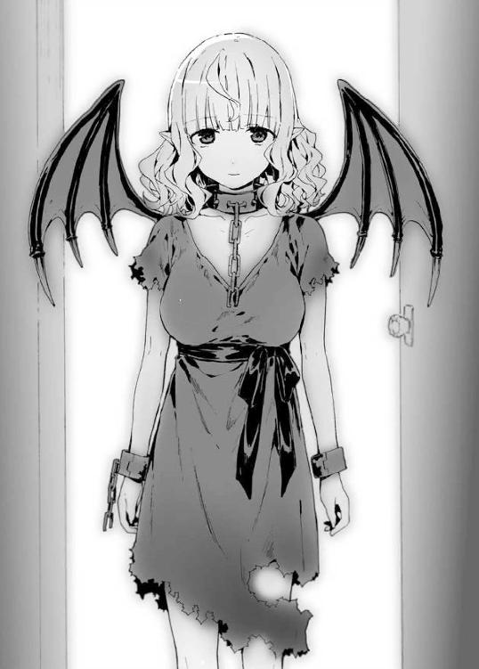
「ルメリアはいくらだ？」
翔真がルメリアの価格をたずねると、支配人は生唾を飲みこみ、緊張の面差しで言った。
「ひゃくご......いえ、に、さ、三〇〇白金貨でいかがでしょう」
「三〇〇だと？」
「あ、いえ、やっぱりひゃく――」
「たった三〇〇で、この美女が俺のものになるのか？」
「え？ あ、は、はいっ。当館は自治区一安い奴隷販売を目指しておりますので！」
「そうか。安いな」
そう言って、翔真は魔導指輪から三枚の魔札を呼び出した。『白金貨100枚』と記されたその魔札を支配人に渡す。
支配人は大金を前に興奮しているのか、鼻息を荒くしつつも〈看破〉を詠唱して本物か偽物かを確かめる。
「......たしかに、ちょうだいいたしました。では、こちらにサインを」
と、支配人が一枚の紙を差し出してきた。契約書だ。念のため〈看破〉で文面に偽りがないか確かめたあと、翔真は署名する。支配人は名前を確認したあと契約書を魔札化して翔真に渡してきた。これでルメリアの所有権は店側から翔真に移ったというわけだ。
「竜胆翔真だ。よろしく頼むぜ、ルメリア」
にこやかに笑いかけると、ルメリアはこくりとうなずいた。
「よろしくお願いします、ご主人様。それと......」
ちら、とルメリアが目線を上げる。
「上に浮いてるのはアイリスだ。超上から目線だが、悪い奴じゃねえから安心してくれ。アイリス共々よろしくな」
「は、はい。よろしくお願いします」
そう言って、ルメリアは深々と頭を下げた。
「堅苦しいのは抜きにしてほしいが......まずは場所を変えるか」
この場所は、ルメリアにとってはトラウマの地だ。奴隷商館にいたのでは、ルメリアは落ち着けないはず。ここから少し歩いた先に宿屋があったし、そこへ移動するとしよう。
などと計画を立てつつ、翔真は出口へと向かう。
「またのご来店お待ちしております！」
支配人は自ら進み出てドアを開け、翔真たちを見送るのだった。
◆
薄暗い寝室のなか、翔真は目覚めた。のっそりと身を起こす。小窓から外を見ると――まだ夜が明けていないようで、闇のなかにぽつぽつと街灯の光が点在していた。
（変な時間に起きちまったな）
二度寝しようかとも思ったが、昨日は宿屋についてすぐに眠ってしまったため、身体が少し汗臭かった。
（シャワー浴びるか）
一二畳ほどの広さがある室内にはシャワールームが併設されている。ベッドを抜け出た翔真は室内を見まわし、ふたりの姿を確認した。
アイリスは部屋の中央で、器用に浮いたまま眠っていた。最高神という大任を背負っていたとは思えない、あどけない寝顔だ。千年以上生きているらしいが......こうして見ると、翔真より幼く見える。
室内にベッドは二つあった。となりのベッドではルメリアが小さな寝息を立てている。寝る前に『ルメリアは風呂に入っとけ。あとこれ全部やる』と夕飯用の食料魔札と衣類を数十点与えてやっていた。
最初、ルメリアはなにを言われているのか理解できなかったようで、数分かけて翔真の言っている意味を理解したとき、『ご主人様に買っていただいて、私は幸せです』と瞳を潤ませていた。
混血種であり奴隷でもあったルメリアは、他人に優しくされたことがなかったのだろう。まさか泣かれるとは思わなかった翔真は、反応に困ってしまったのだった。
「......」
暗がりのなか、ふたりを起こしてしまわぬようにそろりと部屋を抜けると脱衣所で服を脱ぎ、バスルームへ身を移す。
壁にシャワーヘッドがかけられていた。シャワーホースはない。ヘッド単体だ。翔真はしばらくシャワーヘッドと睨めっこして......
「......もしかして。――〈とめどなく溢れる温水〉」
試しに詠唱してみると――シャワーヘッドから勢いよくお湯が出始めた。ヘッド内部に温水を放出するＥランクの魔札が仕込まれていたのだ。
シャワーの仕組みを把握した翔真はパパッと洗髪を済ませ、身体を洗うべく石鹸に手を伸ばしたところで、
「お背中......お流しさせてください」
ルメリアがバスルームにやってきた。
生まれたままの姿である。
翔真が与えた食料を口にしたのか、病的なほどに青白かった肌は瑞々しくなっていた。豊満な乳房は美しい曲線を描いており、しゃがんだことで、たぷんと弾む。
その体勢のまま石鹸を手に取り、泡立て始める。思わず見とれてしまっていた翔真は、ルメリアの繊細な手が泡まみれになったところで我に返った。
「......背中を流してくれるのか？」
「はい。あの......ご迷惑でしたでしょうか？」
不安げに瞳を揺らすルメリア。翔真はしゃがんだ体勢のままルメリアのほうへ身体ごと向け、彼女の不安を消し去るように笑ってみせた。
「ルメリアみたいな美人に背中を流してもらえるんだ。迷惑だとか思わねえよ」
ルメリアはきょとんとする。
「美人......ですか？ ですが、あの......私は、ご主人様にはない特徴を持ってますよ？」
特徴というのは先の尖った長い耳と、蝙蝠のような黒い翼のことだ。
「それはルメリアの個性だろ。見た目が違うからって、ルメリアを差別したりしないさ。そもそも俺は、その耳と翼をひっくるめて美人だって言ってるわけだしな」
「......ほんとうですか？ 私、気持ち悪くないですか？ 不気味じゃないですか？」
ルメリアが潤んだ瞳で見つめてくる。
その一言で、これまでルメリアが騎士門にどんな扱いを受けてきたのかをうかがい知ることができた。
ルメリアは混血種という希少性から高値がつけられていたが、騎士門にとって耳と翼を持つ彼女は侮蔑の対象だった。物珍しさから金持ちにレンタルされ、『気持ち悪い』だの『不気味』だのと散々嘲笑されてきたのだろう。幼い頃からそんな暮らしをしていては、たとえ高値がつけられていようと、自分を無価値だと思いこむのは無理もないことだ。
その認識をあらためさせるべく、翔真は真剣な口調で語りかける。
「気持ち悪くなんかねえ。いままで言われてきたことをいきなり忘れるのは無理だろうが――俺の前では翼が生えてることとか、耳が長いこととか、そんなの気にすることはねえ。もちろんアイリスの前でもだ。あいつは見た目で差別するような奴じゃねえ。それは俺が保証するぜ。だからさ、もし誰かに気持ち悪いとか言われたら、そんときゃ俺に相談しろ。そうしてくれたら、すぐにぶっ飛ばしに行ってやるぜ」
殴り飛ばすのは無理だが、神託遊戯で罰を与えることはできる。
「......こんなに優しくしてくださったのは、ご主人様がはじめてです。ご主人様の奴隷になれて、私......ほんとうに幸せです」
「それなんだが――ルメリアが望むなら、奴隷から解放してやってもいいんだぜ」
ルメリアの首には無骨な首輪がつけられている。首輪を外すには、奴隷の契約書を破棄しなければならない。そうすればルメリアは自由の身になれる――翔真のもとを去ることだってできるのだ。
だというのに、ルメリアは首を横に振った。
「ご主人様は三〇〇白金貨もの大金で私を買ってくださいました。私は生涯奴隷として、ご主人様に従います。この首輪はご主人様への忠誠の証です。どうか外さないでください......」
それは宿屋についたときに発した台詞と同じものだった。翔真はすでに一度ルメリアに奴隷解放の話を持ちかけていたのである。
もっとも、そのときはルメリアの台詞にここまでの感情はこもっていなかったが。
「わかった、わかった。ルメリアはずっと俺のものだ。それでいいんだな？」
ルメリアはこくこくとうなずく。
「はい。ありがとうございます、ご主人様」
ここで礼を言われるのも変な話ではあるが、ほかならぬルメリアが喜んでいるのだから、これでいいのだろう。
「そんじゃ、ルメリア。俺の背中を洗いながら話を聞いてくれ」
そう言って、翔真はルメリアに背中を向ける。
「はい、ご主人様。その......失礼します」
泡立ったてのひらを、翔真の背中にそっと触れる。爪を立ててしまわぬように、慎重な手つきで背中に泡を広げていく。
くすぐったさを感じつつ、翔真はルメリアに話しかけた。
「この自治区で全権代理者の次に権力握ってる奴が誰か知ってるか？ 次じゃなくても、権力を持ってる奴なら誰でもいいんだが......」
「そう、ですね......私が知るなかで権力を持ってる方というと..................クロッカス様、でしょうか」
「そいつは男か？」
「はい」
「ルメリアはそいつにも、裸になって背中を流してやったりしてたのか？」
ルメリアは「いいえ」と首を横に振る。
「私は気味悪がられてましたので、直接肌に触れることは許されておりませんでした......。それにお背中をお流しするのは、いまの私にできる精一杯のお礼です――ほかの方には、感謝の念など抱いたことがありません。服を脱いだのは、ご主人様からいただいた大事な衣装を濡らしたくなかったからです。その......やっぱりご迷惑だったでしょうか？」
「迷惑じゃねえよ。むしろ毎日背中流してほしいくらいだぜ」
その言葉に、ルメリアはぱあっと顔を明るくした。
「は、はいっ。喜んでお背中お流しさせていただきますっ」
「よろしく頼むぜ。――話を戻すが、ルメリアはクロッカスに会ったことがあるのか？」
「はい。五年前に一度だけお会いしたことがあります。その......私は混血種ですから、」
「ああ、その先は言わんでいい。なんとなくわかるからな」
おおかた見世物にでもされていたのだろう。混血種であるルメリアを見て、散々侮蔑の言葉を浴びせたはず。こんなにも美しい娘を罵倒できる神経が、翔真にはわからなかった。
ただ、言葉を遮ったとはいえ、これだけは訊いておかなければならない。
「いままで会ってきたお偉方のなかで、『クエストで魔札を手に入れた』とか、『ＳＳＳランクの魔札を手に入れた』とか、そういう感じの自慢をしてた奴はいないか？」
「......申し訳ありません、偉い方とは何度かお会いしたことがあるのですが、そのような話は心当たりがありません」
「そっか」
「お役に立てず、本当に申し訳ありません......」
「謝ることはねえよ。逆に狙いが絞れたしな」
クロッカスをはじめとする権力者たちは翔真の欲する五〇枚の魔札を持っていない――確定ではないが、翔真の推測は補強された。
やはり当初の推測通り――魔札を持っているのはミストである可能性が高い。となれば、明日からでもミストと戦うための策を実行に移さなくてはなるまい。
「ありがとな。ルメリアのおかげで、やるべきことが決まったぜ」
「も、もったいないお言葉です......。私なんかに感謝してくださるなんて、ご主人様は、最高のご主人様です。ご主人様に出会えた今日という日を、ルメリアは生涯忘れません」
ルメリアは感極まったようにそう言うのであった。
◆
翌朝。ルメリアに屋敷の特徴を聞き、〈千里眼〉を使いクロッカスの住まいを特定した翔真は、〈瞬間移動〉で彼の屋敷に直接乗りこむことにした。
「そのクロッカスとかいうのは、何者なのじゃ？」
アイリスが寝ぼけ眼を擦りながら訊いてきた。熟睡していた彼女は、翔真とルメリアが一緒にシャワーを浴びたことを知らないし、だから当然、会話に出てきたクロッカスなど知る由もない。
「アイリスが寝てるあいだにルメリアから聞いたんだ。クロッカスとかいう奴は騎士門のなかでも指折りの資産家なんだとよ。しかもルメリアの話では、クロッカスは多くの奴隷商館を裏で牛耳っている――総支配人ってわけだ。そのうえ大量の土地と建物を持ってるらしいぜ。俺たちがいまいる宿屋もクロッカスの所有物だしな。まさに大物中の大物だ」
すると、アイリスはなんだか拗ねたように唇を尖らせた。
「わしが寝てる間にそんな話をしておったとはのぅ。起こしてくれればよかったのに......まさかとは思うが、わしに愛想つきてない？」
「なわけねえだろ。俺たちが知り合って、まだ一日しか経ってないんだぜ。美人は三日で飽きるっていうけど、俺はアイリスに飽きたりしねえよ」
「じゃが、そなたはたった一日で、カンナやルメリアと仲良くなったではないか。わしに飽きても不思議はないのじゃ......」
しょんぼりするアイリスに、
「あの、すみません......」ルメリアは頭を下げた。
「ルメリアが謝ることではないのじゃ」
「はい、あの、ですが......すみません......」
ぺこぺこ頭を下げるルメリアに、アイリスは困ったように髪をかく。
「ああもう、わしが大人げなかったのじゃ。じゃから、そう頭を下げんでくれぃ......」
「はい、すみません......」
アイリスはため息をついた。そして、気を取りなおすように、
「そのクロッカスとやらが、目当ての魔札を持っておるのか？」と話を軌道修正する。
「その確認も当然するが――正直期待薄だな。ま、今回の目的は魔札じゃねえけどさ」
「魔札ではない？ それはそなたが昨日わしに言ったこととなにか関係するのか？」
昨日言ったこととはミストに神託遊戯を挑ませる作戦のことだ。全権代理者は個人との神託遊戯を受けつけていないため、ミストのほうから翔真に神託遊戯を挑まざるを得ない状況を作らなければならないのだ。
「ああ。ミストに神託遊戯を挑ませる。そのためには、クロッカスに会わなきゃならねえ。この自治区一の地主である、クロッカスにな」
そう告げて、翔真はルメリアに向きなおる。
「俺たちは昼までには戻ってくるからな。それまでここでおとなしく待っててくれ」
「かしこまりました。ご主人様のお帰りを、心からお待ちしております」
行ってらっしゃいませと恭しく頭を下げるルメリアに見送られ、翔真は〈瞬間移動〉を唱えるのだった。
クロッカスの住まいは首都グラジオを一望できる高台に立てられていた。
広大な敷地に建つ屋敷は、彼の財力を象徴するような豪華な造りになっている。さらに自身の権力を主張するかのように多くの傭兵を雇い、敷地の至る所に配備していた。その数は一〇〇人を超えるとも噂されている――クロッカスの屋敷は、まさに難攻不落の要塞なのである。
「――だッ、誰だ貴様は!?」
そんな屋敷の寝室に、野太い怒声が木霊する。
「おまえがクロッカスか？」
怒鳴り声に怯むことなく、翔真はたずねた。
屋敷に乗りこむまではよかったが、翔真はクロッカスの顔を知らない。一応ルメリアに特徴は聞いていたが、顔を合わせたのは五年も前の話だ。彼女の記憶は朧気だったので、この筋骨隆々でバスローブ姿の金髪オールバック男がクロッカスかどうかはわからない。
「俺に用があってここへ来たことはわかったが――貴様、どうやってここに入ってきた！ 傭兵どもはなにをやっているのだ！」
「そうか、おまえがクロッカスか」
「俺の質問に答えろッ！」
寝起き直後らしいクロッカスは、だからというわけでもないだろうが苛立たしげに声を荒げる。
「〈瞬間移動〉だ。俺はそれを使って、直接この部屋に乗りこんだってわけだ。おまえとサシで話をするためにな。つっても、こっちはふたりだが......まあ、話すのは俺ひとりだ。おまえとしても寝室に知らねえ奴がいる状況は望ましくねえだろうし――俺の話を聞いてくれりゃ、すぐにでも帰ってやるぜ」
「......言ってみろ」
クロッカスは宙に浮かぶアイリスを気にしつつも、翔真から視線をそらさない。翔真のことを警戒しているのだ。
「単刀直入に言うぜ。クロッカス――全財産を賭けて俺と神託遊戯しろ！」
「なにを言いだすかと思えば馬鹿なことを......。貴様と神託遊戯をして、俺になんの得があると言うのだ？ おおかた〈瞬間移動〉を――Ａランクの魔札を手に入れて気が大きくなったのだろうが、貴様など俺の足もとにも及ばん。なぜなら俺は、ＳＳランクの魔札を一二枚も持っているのだからな」
ＳＳＳランクの魔札を持っている――と自慢しないということは、やはりクロッカスは翔真の欲する五〇枚の魔札を持っていないということか。
「おまえこそ、俺の足もとにも及ばねえよ。俺は一〇〇〇〇種の魔札を持ってるからな」
そう言って、翔真は金ぴかの魔導指輪をかざして見せた。
クロッカスはあとずさる。
「な......っ！ ご、ゴールドだとッ!? なぜ貴様のようなガキが一〇〇〇〇種もの魔札を持っている!? この俺でさえ三〇〇〇種に満たないというのに......！」
「それを知りたきゃ、俺と神託遊戯しろ」
「断る。俺には貴様と神託遊戯をする理由がないからな。なぜなら、俺はコンプリートに興味がないからだ。強力な魔札はあらかた手に入れたしな」
神託遊戯には人生がかかっていると言って過言ではない。一度の敗北で全財産を失ってしまうこともある。その危険を冒してまで翔真と神託遊戯をする理由が、クロッカスにはないのだ。
とはいえ、ここまでは織り込み済みの反応である。
「だったら、おまえはなにに興味があるんだ？」
「金だ」
クロッカスは即答した。それも翔真が予想していたとおりの返答だった。
「俺は金以外に興味はない。さあ、話が終わったなら出ていけ」
「いいや、まだだ。まだ話は終わってないぜ」
むしろここからが本番だとばかりに翔真は切り出す。
「あんたは大地主なんだよな。大量の土地を持ってるって、もっぱらの噂だぜ」
クロッカスは先祖代々受け継いできた土地を多くの人々に貸し与えることで、さらなる財を築いているのだ。
「なんだ小僧、土地がほしかったのか？」
「そういうこった。神託遊戯に勝って要求するつもりだったが、勝負を拒否されたんじゃしかたねえ。金ならある、売ってくれ」
「......いいだろう。普通は追い返してやるところだが――貴様は金の指輪を持っている。金払いはよさそうだ。だから、特別に土地を売ってやる。ただし、値引きはなしだ。そこまで特別扱いはしない。それを踏まえたうえで――どんな土地がほしいのか言ってみろ」
「街が丸ごと収まる土地だ」
翔真は言った。
真顔で。
「......ふざけているのか？」
クロッカスの声に怒りが滲む。だが、翔真はべつに冗談を言っているわけではない。
「ふざけてねえよ。俺は街を作りたいんでね。おまえなら用意できると思ったが......まあ、無理ならしかたねえな。ほかの地主をあたってみるぜ」
「......待て。俺が用意できない土地を、ほかの連中が用意できるわけがない。それに俺は、用意できないとは言ってないぞ」
「あるのか？」
クロッカスは鷹揚にうなずき、
「貴様の夢におあつらえ向きの土地がある。ガンドラ川のすそに広がる、クヌル平野だ。そこなら売ってやってもいいが――ただし、金はこの場でいただくぞ」
「それは構わねえが――クヌル平野ってのは、ここからどれくらい離れた場所にある？ あと方角は？」
「一五〇キロほど南東だが......」
言葉に、翔真はそちらに目をやった。〈千里眼〉に〈透視〉を併用している翔真の目は屋敷の壁をすり抜け、白塗りの家々を抜け、草原を通り過ぎ、山脈を越えて......そして、赤茶けた大地を捉えた。
クヌル平野だ。有り体に言うと荒れ地だった。草木はなく、生き物の姿は見当たらず、とても作物が育つ環境ではない。さらにガンドラ川は森棲門との国境になっているようで、川を越えた先の森林地帯には、騎士門とは異なる風貌の者が確認できた。
こんな土地に買い手などつくはずがない。クロッカスも、それはわかっているはずだ。手放したい気持ちは強くあるだろうし――だからこそ、翔真は絶好のカモというわけだ。
「いいぜ、買った！」
そんなクロッカスの思惑を理解したうえで、翔真はクヌル平野を購入することにした。
この宣言から数分後、翔真は大地主になった。
さらに言うと、その翌日には竜胆翔真は城主になっているのだが――このときはまだ、荒野に城が建つなど翔真以外の誰も想像していなかった。
第四幕 独裁的魔札使いの奴隷帝国
ここ数日、クロッカスは妙に目覚めがよかった。日課のトレーニングは欠かさないため体調はすこぶる健康だが、ここ最近は精神的にも健やかだった。理由ははっきりしている。十日前、竜胆翔真とかいう少年にいわくつきの土地を売ったからだ。
クヌル平野。
あそこは祖父の代からクロッカスの一族が所有する土地であり、一族の悩みの種だった。単純な広さだけなら首都グラジオにも負けていないが――クヌル平野は『死の土地』との蔑称がついている。そんな土地を買おうなんて物好きが現れるわけがないと思っていたし、実際、祖父がクヌル平野を手に入れてから半世紀以上経つが、手放す機会は訪れなかった。
買い手が見つからないのも無理からぬ話だ。荒れ果てた大地というのもさることながら、なにより川を挟んだ向こう側に森棲門の領地が広がっているのだから。彼らが川を越えて問題を起こさぬとも限らないし――もしそうなれば、クロッカスが対処に当たらなければならない。
そんな問題大ありの土地を、あの少年は一〇〇〇〇白金貨で買い取ったのだ。面積だけ見れば格安だが、クロッカスにしてみれば儲けものだ。祖父の代から続く悩みの種が消え、一〇〇〇〇白金貨もの大金が転がりこみ、まさに万々歳だった。
「あの小僧も、そろそろ自分の愚かさに気づく頃か」
街を作るとか豪語していたが、あんなところに作れるわけがない。仮に住居を建てたとしても、あそこで暮らそうなんて物好きが現れるわけがないのだ。なにせ土壌の微生物が死に絶えているため作物は育たず、最寄りの街を訪れるには山を越えなければならないし、大雨が降れば川が氾濫する恐れもある。そして川が氾濫すれば建物は流され、また一から家を建てなければならなくなる。そんな街に、誰が住みたがるものか。
おそらくは土地収入で財を築こうと計画していたのだろうが、考えが甘すぎる。住人が寄りつかないのでは、利益を得るなど不可能だ。
あれから少年は姿を見せないが――言うまでもなく、返金を迫ってきても断るつもりだ。
「まったく、愚かな小僧だ。おかげで俺は得したがな」
クロッカスは鼻歌交じりにベッドから抜け出ると、日課のトレーニングをしようと服を着替え始めた。
そのとき。
『クロッカス！』
突然頭のなかに怒声が響いた。あの少年が乗りこんできたのかと室内を見まわすが――ひとの姿は見当たらない。それに声の質が全然違っている――
と、ここでクロッカスは声の主の正体に気づいた。声の主は遠方にいる人物との会話を実現する〈碧落からの語りかけ〉を使い、クロッカスに話しかけてきたのだ。
つまり声の主は目の届く範囲にいないのだが......
「いかがなさいました、アルゲン様」
それでもクロッカスは恭しく頭を下げ、丁寧な口調で返事をした。
無理もない。アルゲンは全権代理者の側近中の側近なのだから。先代の全権代理者にも仕えていたアルゲンは現全権代理者、ミスト・サージェントにも強く言える立場にある。自治区の重鎮たるアルゲンは騎士門の頂点に君臨する男と言っても過言ではない男なのだ。
クロッカスはアルゲンに取り入ることで、さらなる財と権力を手に入れることができた。この調子でアルゲンの信頼を築いていけば、いずれはミストとの縁談話が舞いこんでくるかもしれない。
ミストの夫になれば騎士門の自治区はクロッカスのものとなる。そうなればアルゲンは用済みとなるが――いまは野心を引っこめておいたほうがいい。
『いかがなさいました、だと？ 貴様、とぼけるつもりか』
「とぼける？ いったいなにを......」
『貴様は騎士門を裏切るつもりなのかと訊いておるのだ！』
「裏切る!? とんでもない！ なぜそうなるのですか！」
クロッカスは声を荒げた。アルゲンがなにを言っているか、意味がわからなかったのだ。騎士門を裏切るなどと、そんなことは考えたこともないというのに......
『クヌル平野は貴様の領地だったな？』
「はい。ですが、十日前に売りました。ですので、もうそこは私の領地ではありません。その......まさかとは思いますが、アルゲン様はクヌル平野に目をつけていたのですか？」
もしそうなら、もっと早くに言ってほしかった。そう内心で愚痴るクロッカスだったが、真相は予想だにしないものだった。
『クヌル平野に自治区ができたのだ！』
「......は？」
『しかも、その自治区は異種族共存を謳っておるのだ。我が自治区で暮らしていた他種族どもは次々と問題の自治区へ逃げている――瞬く間に国力を増強させておるのだ。これは騎士門にとって大変な脅威だ！ いまは情報を遮断しているが......このことがミスト様に知られたら、面倒なことになる。これはすべて、クロッカス――貴様が招いた事態だ！』
絶句してしまっていたクロッカスは、その一言で我に返る。
「お、お待ちくださいっ！ たしかにクヌル平野は売ってしまいましたが、冷静になって考えてみてください。土地さえあれば誰でも自治区を作れますが――存続は不可能です！ 騎士門の脅威となる前に壊滅するに決まっています！」
そう。自治区を作ること自体は簡単なのだ。問題は、自給自足できるかどうかである。自治区を構えるということは、ほかの自治区と争うということ――他種族に頼らず、自分たちで生活物資を調達しなければならないのだ。アルゲンともあろう男が、放っておけば自然消滅するような自治区になにをそこまで怯えているのか。
『食糧難どころか、すでに自給自足ができておるわ！』
「ま、まさか！ そんなはずありません！ クヌル平野で自給自足が......作物が育つなど、そんな馬鹿なことあるわけが――」
『その馬鹿なことが起こっているから、貴様に連絡を取っておるのだ。わからんようなら、自分の目で確かめてこい！ 事態を収拾できぬようなら二度と私の前に姿を見せるな！』
「あ、アルゲン様！ ――くそっ、いったいなにがどうなっている!?」
クロッカスは頭を抱えた。いらいらと部屋を右往左往する。せっかく築き上げた信頼を、こんなところで失ってたまるか。
クロッカスは頭のなかで状況を整理する。
まずクヌル平野に自治区を作った首謀者は、先日の少年と見て間違いあるまい。
アルゲンの話を信じるなら、竜胆翔真はわずか十日で死の土地に完全自給自足が可能な街を作り上げてしまったのだ。
そんな馬鹿なことがあってたまるか！
そう思いたいクロッカスだが、アルゲンは冗談を言うような男ではない。
つまり解決できなければ、せっかく手に入れたアルゲンとのコネは絶たれることになる。
全権代理者の夫となり、自治区の支配者になるというクロッカスの夢が、潰えてしまうのだ。
それだけは、なんとしてでも阻止しなければ。
だが、いったいどうやってクヌル平野を回収する？
「......そうだ。神託遊戯で奪い取ってしまえばいいのだ」
そんな街を手に入れれば、汚名返上どころかアルゲンに恩を売ることができる。豊かな街を手に入れることは、騎士門のさらなる発展につながるのだから。
問題はゴールドリング保持者にどうやって勝つかだが......クロッカスには多くの傭兵がついている。一〇〇〇〇種の魔札を持っているからといって、そのすべてが高威力というわけではない。大勢で挑めば、竜胆翔真はすぐに強力な魔札を使い果たしてしまうはず。人海戦術を使えば、勝てない相手はいないのだ！
そう自分を鼓舞したクロッカスは、傭兵たちに「デッキを構築しておけ」と告げるべく、寝室をあとにしたのであった。
◆
「翔真よ。もう朝じゃぞ。そろそろ起きたほうがよいのではないか」
広々とした絨毯敷きの寝室に、アイリスの優しい声が響く。
その眼下では、翔真が天蓋付きベッドに眠っている。
もうじき昼になろうとしているが、起きる気配はまるでなかった。
「ご主人様、昨日は遅くまで働いてましたから......もう少しだけ、寝かせてさしあげてもよろしいのではありませんか」
そう言ったのは、ルメリアだ。彼女は日が昇ってからというもの、愛おしそうに翔真を見つめていた。
「それを言うなら、そなたも毎晩遅くまで起きておるじゃろ」
「ご主人様より先に寝るわけにはいきません。もちろん、ご主人様よりあとに起きるなどけっして許されることではありません」
「その忠誠心はたいしたものじゃが、翔真は先に寝てよいと許しを出しておるじゃろ」
「ご主人様は優しい方ですから。ですが、たとえ許されたからといって、ご主人様よりも先に寝るわけにはいかないのです。私がこのベッドに身を移すのは、ご主人様よりあとでなければならないのです」
ルメリアは翔真と同じベッドで眠っている。本当に、ただ『寝ている』だけだ。翔真はとなりに美女が眠っているというのに、一切手をつけていないのである。
（じゃが、それもいまのうちじゃ）
アイリスは不安げな眼差しを小窓の外へと向ける。
そこには――
街が、広がっていた。
否、街と呼ぶにはまだ未発達な部分も多い。家々はまばらにしか建っていないし、土が剥き出しのままで、道も整備されていないし、人口が少ないゆえ住人の姿を見つけるのは難しい。
しかしほんの十日前まで『死の土地』と呼ばれ、何人たりとも寄りつかない荒野だったことを考えると、これは大変な発達ぶりだ。
十日前までは荒れ果てた大地だったのにこの変わり様......。事情を知らない者が見れば奇跡が起きたと思うだろうが――事情を知っているアイリスは、これがオリジナル魔札によるものだと――竜胆翔真の手によるものだと知っている。
翔真は魔札を使って土地を生まれ変わらせた――自給自足を可能にした。死んだ土地に微生物を出現させることで生き返らせ、農場を設けて作物の種をまき、成長を促進させて即日収穫可能な状況にした。さらに農業用の水路を作るほか、生活用水を確保するために水が湧き続ける泉を複数設けた。加えて魔札に保管されていた屋敷を仮設住宅にしたり、子どものために公園を設けるなど、惜しげもなく魔札を使いまくっているのだ。
『新設自治区だからって、ほかの自治区になめられないようにしないとな。ちょうどいい物件がカード化されてたし、俺はそこに住むことにするぜ！』
なんだか楽しそうにそう宣言した数分後、翔真は立派な城を建てていた。そしてそこに、側近のアイリスとルメリアを住まわせている。
とにかく、ここ最近の翔真は多忙なのだ。
本人はとても楽しそうにしているし、きっと遊び感覚なのだろうが、寝るのは決まって深夜過ぎである。
だからルメリアと夜の営みをしないだけで......
（街が完成したら、ルメリアに手を出すかもしれぬな......）
むしろ手を出さないほうが変に思えるほど、ルメリアは美しい娘だ。ルメリアもまた、身持ちの堅さは証明されているが、翔真に心酔してしまっている。それが恋心か崇拝しているだけかはアイリスにはわからないが、いずれにせよ翔真に誘われれば喜んでその身を捧げるだろう。
つまりアイリス、嫁の座転落の危機である。
なんとかして翔真とルメリアの仲を引き裂こう――なんて器の小さなことは思わないが、それでも翔真には、最初の嫁である自分を一番愛してほしい。
だが。
「わしは霊体じゃしのぅ」
アイリスは切なそうに吐息した。
身体には自信があるが、触れないのでは意味がない。霊体のままでは翔真を満足させてやることができないのだ。
「アイリス様は死霊門、私は混血種。だというのに、ご主人様は優しくしてくださいます。やはり、ご主人様は素晴らしいお方です......」
ルメリアがうっとりとした眼差しで翔真を見つめる。
アイリスが騎士門ではないことは、ルメリアにはばれてしまっている。だが、いまさらアイリスに種族を偽るつもりはない（まあ、本当は聖神門なのだが、あえて正体を明かす必要もあるまい）。
なにせ翔真が作ったこの自治区――〈竜胆翔真の帝国〉は、異種族共存を謳っているのだから。
しかも翔真は瞬間移動で自治区中を巡り、『こんな自治区を作った、興味あるなら歓迎するぜ』と宣伝してまわっているのだ。いまごろクロッカスの耳にも届いているだろうし、ミストのもとにも情報がいっているかもしれない――あるいはミストに危機感を抱かせることが翔真の作戦なのかもしれない。
翔真の宣伝は効果覿面だった。全権代理者同士の神託遊戯で住み慣れた土地を奪われ、差別的な扱いに耐え続けてきた人々や、捕まれば最悪死を命じられることを覚悟した上で奴隷商館から逃げだしてきた奴隷たちが、続々とクヌル平野に集まってきている。
人口は、そろそろ一〇〇〇人を超えるところか。
いまのところ種族同士の争いはない。他種族を差別するようなことがあれば問答無用で追放すると、翔真がきつく言い聞かせているのだ。
まあわざわざ釘を刺さずとも、『異種族共存』との宣伝を聞いてきたのだから、文句を言うこともないだろうが。
翔真は異種族同士の絆をより強固にするため、人々に家造りをさせている。仮設住宅は用意してやったが、そのうち回収すると告げてある。翔真は家を建てるのに必要な資材は与えてやったが――そこから先は異種族同士に協力して行わせている。
協力してなにかを成し遂げれば仲良くなれるとは翔真の弁で、アイリスの持論でもある。
アイリスは異種族同士が協力して家を建てている光景を見るのが嬉しくもあり、また、悔しくもあった。アイリスが一〇〇〇年かけて実現できなかったことを、翔真はたったの十日で実現させてしまったのだから。
「翔真が寝不足なのはわかるが、そろそろ起こしてやったほうがいいじゃろ。昼夜逆転は健康によくないのじゃぞ」
「ですが寝不足なのに起こしてしまったら、ご主人様、私のこと嫌いになりませんか？」
「そんなしょうもない理由で嫌うほど、翔真の器は小さくない。それはそなたもわかっておるじゃろ」
「はい。わかります。そんなご主人様だからこそ、私は身も心も捧げると決めたのです」
「べつに身は捧げなくてもいいと思うが......とにかく、起こしてやるのじゃ。わしは......翔真に触れんからのぅ......」
「はい。わかりました。それでは失礼します、ご主人様......」
と、ルメリアは翔真の頬に手を伸ばし、指先で遠慮がちにちょんと触れた。
「......起きませんでした」
「見りゃわかるのじゃ。もっと身体を近づけて、ゆさゆさと揺さぶってやるがよい。それくらいせんと起きぬのじゃ」
「はい。わかりました」
ルメリアはベッドに膝をつき、四つん這いのような体勢になり、翔真の胸元を揺さぶる。すると翔真は寝返りを打ち、抱きつくようにしてルメリアに覆い被さった。翔真の顔面が豊穣たる胸の谷間にすっぽり挟まり、ルメリアは驚いたように目を丸くする。
が、すぐに現状を受け入れたようだ。戸惑うように硬直していたルメリアは、優しげな笑みを浮かべ、胸を枕にして眠る翔真の頭を愛おしそうに撫で始めた。
「いやいやいや、撫でておる場合じゃなかろ」
アイリスがどこか羨ましそうにツッコミを入れる。
するとルメリアは子守歌を歌うような優しい声で、
「ご主人様は、愛に飢えていらっしゃいます。ご主人様が甘えたいとおっしゃるのなら、私は喜んでこの身を捧げます」
「いや、甘えたいとか言っておらんし」
「ご主人様は強いお方です。弱い部分は、けっして他人には見せません。もちろん口にも出しません。――ですが、私にはわかるのです。ご主人様は愛に飢えているのだと。私もずっと、誰かに愛されたいと願い続けてきましたから」
「......ふむ」
たしかに翔真は身寄りがない。両親を事故で失い、育ての親の敦盛とその妻も半年前に亡くしたと語っていた。翔真は気にしたふうもなく天涯孤独と語っていたが、アイリスを嫁にしたあとに、もう二度と家族を失いたくないと言っていた。
つまり翔真がアイリスを嫁にしたのは家族がほしかったからであり――翔真が自治区を作ったのは、自分の居場所がほしかったからかもしれない。
（......いや、さすがに考えすぎじゃろうな）
アイリスを嫁にしたのはえっちなことがしたいからなのと、魔札の創造主という立場に敬意を表したからであり、街を作っているのはミストに神託遊戯を挑ませるためなのだと――翔真はそう言っていた。
いずれにせよ。
「なでなでしてないで、早く起こさぬかっ」
翔真をルメリアに独占されたくないアイリスだった。
◆
けっきょく昼過ぎまで眠っていた翔真は身支度を調えると、街の様子を見に城外へ出た。
城を出るとすぐに街が広がっている――わけではなく、城下町は庭園を抜けて、城門を越えたその先に広がっている。色取り取りの草花に囲まれた石畳の上を、翔真はふたりの美女を伴って歩いていき......城下町に出た。
そこは街と呼ぶにはあまりに殺風景だったが――十日前まで荒野だったことを考えると、信じられないほどの変わり様だった。
しばらく歩き、何棟かの仮設住宅を抜けた先に、いくつかのグループが点在していた。それぞれが家を建てており、一目で『家』とわかる程度には骨組みができていた。
建築グループは男だけで、女は一キロほど向こうにある農地に集まり、作物を収穫しているのだった。
「おーっす。調子はどうだ」
翔真が軽い調子で声をかけると、男たちは作業を中断した。
「おおっ、全権代理者様！」
「全権代理者様が来たぞ！」
「お疲れ様です！」
などと言いながら翔真のまわりに集まってくる屈強そうな男たち。そこには獣風の男や翼を生やした男、なかには骸骨の姿もあった。
言わずもがな騎士門ではないが――しかし、騎士門がいないというわけでもなかった。異種族を差別することに抵抗があったカンナのような人物もまた、翔真の自治区にやってきていたのだ。
この自治区に存在しないのは巨人門と海妖門、森棲門に聖神門くらいのものか。まあ、アイリスとルメリアを含むなら、実に六種族が翔真のもとに集ったことになるのだが。
種族同士の争いが絶えないアストラルにおいて、六種族が共同生活を営むというのは、翔真が思っている以上に異常なことであり、種族同士の争いに終止符を打とうとしていたアイリスにしてみれば、まさに偉業とも言えることだった。
もっとも、種族同士の対立を完全になくそうとしている翔真にしてみれば、ほんの序の口に過ぎないのだが。
「建築のほうは順調か？」
翔真があらためてたずねると、男らは相談するように顔を見合わせた。それから翔真に向きなおり、口々に訴えかけてくる。
「俺たちの班、木材が不足しています」「こっち、釘が足りません」「昨日かあちゃんが『農具が足りない』とぼやいてました！」「俺たちのところは人手不足です！」「ああっ、こっちにも人手を調達してください！」
翔真はふんふんとうなずき、
「木材、釘、農具は必要なぶんを教えろ。人手不足は数日以内に解決する」
「おお、ありがとうございます！」「さすがは俺たちの全権代理者様だ！」「どこまでもついて行きますぜ！」「嫁と子ども共々、全権代理者様には感謝しています！」「今年で五歳になる娘が、将来は全権代理者様と結婚したいと言ってました！」
「最後のそれ、本当か！ そいつは将来が楽しみだぜ」
「嫁ならわしがおるじゃろ!?」
「さて、それじゃあ班ごとに足りない資材を教えてくれ」
「無視しないでほしいのじゃぁ......」
翔真に構ってもらおうと彼の眼前に移動するアイリス。
と、そのとき。
「――そこにいたか、小僧！」
空から怒声が降ってきた。
見上げると、〈飛翔〉の魔札を使ったのだろう、筋骨隆々の男が翔真の前に降りてくるところだった。
クロッカスだ。
騎士門における有力者中の有力者の登場に、男たちはたじろいだ。そんななか、翔真はけろっとした顔で言う。
「よぅ、おっさん。そろそろ来るんじゃねえかって思ってたぜ」
クロッカスは様々な種族の男たちを睥睨したあと、翔真を睨みつけた。
「俺の売った土地で好き勝手しやがって！」
「おいおい、買った土地をどう使おうが俺の勝手だろ」
「貴様の目的を知っていれば売ってなどいなかった！」
「言ったじゃねえか。街を作るって」
「まさか本当に作るとは思わないだろう！ しかもわずか十日で！ 貴様いったいどんな手を使った!?」
「いろんな魔札を使ったんだ。死んだ土壌に微生物を出現させる魔札とか、作物を瞬時に収穫可能な状態にする魔札とか、城とか屋敷とかな」
「そ、そんな魔札を持っていたのか!? なぜそれを言わなかった！」
「おまえが言ったんじゃねえか。魔札に興味はないって」
「俺が興味ないのは普通の魔札だ！ 死んだ土地を生き返らせ、そのうえ自給自足可能な街を作ってしまえるほどの魔札を持っていると知っていれば、金の代わりに、その魔札をもらっていた！ ――いや、そもそも土地を売りはしなかった！」
「そうか。ま、いまさら言っても遅いけどな」
クロッカスは忌々しそうにこぶしを握る。
「ええい！ 貴様のせいで俺の信用はがた落ちだ！ いますぐ土地を返せ！」
「断る。つーか、返すわけないだろ」
「もちろんただでとは言わん。貴様が払った倍の金額を出す。二〇〇〇〇白金貨だ！」
その言葉に、周囲にいた男たちがざわついた。
二〇〇〇〇白金貨は一生遊んで暮らせるほどの大金である。翔真が土地を売ってしまうのではないかと恐れているのだろう。
そうなれば、彼らは再び差別される。騎士門を裏切ったぶん、よりひどい扱いを受けることになるのだ。
「断る」
「だ、だったら二五〇〇〇......いや、三〇〇〇〇でどうだッ！ これ以上は出せんぞ！」
「断る。おまえは金にしか興味ないんだろうが、俺は金に興味がないからな。この土地がほしけりゃ、俺と神託遊戯するしかないぜ。それが嫌ならいますぐ出ていけ。ここは俺の自治区だぜ？ おまえが威張れる場所じゃねえ」
するとクロッカスは不敵に笑った。
ゴールド指輪保持者に勝てる作戦を立ててきたのか、自信ありげにうなずく。
「いいだろう。その勝負、受けて立つ！」
翔真は、にぃっと笑う。
「勝負成立だな。ルールはどうする？ こっちはアイリス――こいつとふたりで戦うぜ」
翔真は親指でアイリスを指した。
クロッカスが真剣な眼差しを向けてくる。
「それだけか？ ここにいる連中は......参加しないんだな？」
「こいつらは作業で忙しいからな。俺とアイリスしか参加しないぜ」
翔真が肯定すると、クロッカスの顔に笑みが広がっていく。
「こっちは部下全員を参加させるが、文句はないな？」
「部下は全部で何人だ？」
「それはバトルフィールドでのお楽しみだ」
その言葉には自信のほどがうかがえた。人海戦術で攻めれば敗北はありえないと本気で思っているのだろう。
「いいぜ。そのルールで構わねえ」
と、ふたりのあいだに神託遊戯の合意がなされたところ、その近くに魔法陣が浮かび、審判役の精霊――ニンファが姿を現した。
......一枚売れば巨万の富が得られる魔札を湯水の如く詠唱されて部下を全滅させられ、さらに切り札を跳ね返されたことで翔真に敗れ、クロッカスが全財産を失ったのは、その一五分後のことだった。
結果的には当初の予定通り、翔真は一銅貨たりとも支払うことなく――どころか土地に金に魔札に奴隷などのおまけつきで、クヌル平野を手に入れることに成功したのであった。
◆
「竜胆翔真とかいう小僧に敗れ、全財産を奪われてしまった貴様と話すことなどない！」
『そ、そんな！ 私を見捨てないでくださいッ！ 全財産を失って......これから私はどうやって生きていけばいいのですか！ アルゲン様だけが頼り――』
「黙れ！ 貴様の声など二度と聞きたくない！」
と吐き捨て、騎士門の支配者と言っても過言ではない男――アルゲンは、〈碧落からの語りかけ〉の効果を切った。
アルゲンの舌打ちが、寝室に響く。
「あの間抜けがッ！ 自治区を奪い取るどころか、逆に全財産を奪われおって！ これでますます敵自治区が力を蓄えるではないか！」
クロッカスの財産は『金』『土地』『奴隷』の三本柱。金を奪われるだけならまだしも、土地と人材が奪われてしまっては、敵自治区がより豊かに、より脅威になってしまう。
それだけならまだしも、クロッカスの土地が奪われたことで、騎士門の領土は縮小した。そこに住んでいる同胞は『住み慣れた土地から去らねばならないのか』と不安がるだろう。そうなると住民はミストに『神託遊戯で土地を奪い取れ！』と請願するかもしれないし、万が一ミストが負けでもしたら、騎士門はますます弱体化する。
「世界一優秀な種族は騎士門だ！ ほかの種族に劣るなど、あってはならん！ いずれは我が自治区が天下を取る――世界を統べるのだ！ だというのに、クロッカスめ......」
騎士門でも指折りの資産家だというから目をかけてやったが、まさかここまで使えない男とは思わなかった。
しょせん先祖の資産を受け継いだだけの男。クロッカスだけの力ではここまでの権力を手にすることはできなかった――そもそも権力を握っていい男ではなかったのだ。
権力は自分のような、親の七光りに頼らず自力で成り上がった男にこそ与えられるべきなのだ。
「......まあ、いい」
予定は狂ってしまったが、アルゲンの計画に支障を来すほどのものではない――いや、ゆくゆくは脅威になるだろうが、いまは〈竜胆翔真の帝国〉に構っているときではない。
アルゲンは椅子に深く腰かける。
「騎士門を世界一の種族にするためにも――私は、あの魔札を手に入れなければならん。じきに......じきに手に入るはずなのだ。そうすれば、私は......」
◆
クロッカスを倒した翌朝......。
「えっ、お、お父さん!? お母さん!?」
精霊自治区に店を構える〈うさぎ亭〉にバニーガールの驚声が響き渡る。営業前なのか店内に客の姿はなく、椅子はテーブル上に逆さまになって置かれている。ちょうど清掃中だったようで、カンナの手元にはホウキが握られていた。
ホールにいるのは翔真とアイリスとカンナ、それと獣牙門の男女がふたりである。そのふたりというのはカンナの両親であり、娘とは実に三年ぶりの再会だった。
「ど、どうしてここにいるの!? だってふたりとも騎士門に捕まって......」
事態を把握しきれず呆然と立ち尽くすことしかできないカンナに――両親は涙ながらに事情を説明した。
騎士門の自治区で奴隷になっていたこと。翔真が自治区内の奴隷商館を牛耳る総支配人、クロッカスを神託遊戯で倒したこと。全財産を渡すよう要求したこと。解放された奴隷のなかにいた自分たちを見つけ、〈瞬間移動〉でカンナのもとまで送り届けてくれたこと、等々。
「パパとママは、竜胆さんに助けてもらったんだよ」
「竜胆さんは私たちの恩人なんだ」
と、両親がすべて語り終えたとき、カンナは潤んだ瞳で翔真を見つめていた。
深々と頭を下げてくる。
「グズマたちを追い払ってくれただけでも感謝しきれないのに......そのうえ、お父さんとお母さんと助けてくれるなんて......。ほんとうに、ありがとう......」
翔真は居心地悪そうに髪をかく。
「んな感謝されることじゃねえよ。たまたま解放した奴隷のなかにカンナの親がいたんで、飯食うついでにつれてきただけだ。カンナの作る料理は超美味いしな」
カンナは顔を上げ、真剣な顔で告げてくる。
「あ、あたしなんかの料理でよければ、いくらでも作るよ。もちろんお金なんていらない。翔真くんのためだったら、あたし、毎日でもただで料理作るよ」
「つまり俺の嫁になるってことか？」
まじめな雰囲気が苦手な翔真は冗談めいた口調で言う。するとカンナはじんわりと頬を赤らめた。
笑みを浮かべる翔真とは異なり、彼女は真剣そのものの眼差しで言う。
「翔真くんのお嫁さんだったら......あたし、喜んでなるよ」
「すまぬが、翔真はわしの旦那様じゃ」
アイリスがずばっと告げた。
カンナは慌てて、
「ご、ごめんなさいっ。そうとは知らなくて......そっか、翔真くん結婚してたんだね」
と残念そうに言う。
「嫁は何人いてもいいけどな」
「翔真ぁ......いじわる言わんでほしいのじゃぁ......」
アイリスが泣きそうな顔で訴えかけてくる。
「......ま、しばらくは忙しくなるし、アイリスだけを可愛がらせてもらうぜ」
「翔真っ」
アイリスの顔がぱあっと明るくなった。
よかった、よかったのじゃ！ などと翔真の頭上を嬉しそうにぐるぐるまわり、喜びを表現する最高神。
それをそのままに、翔真は真顔でカンナに告げる。
「親子水入らずの前に、俺の頼みを聞いてくれるか」
カンナはこくこくうなずいた。
「翔真くんのお願いだったら、あたしなんでも聞くよ」
「そんなかしこまることねえんだが、まあいい。単刀直入に言うが――この店をたたんで、俺の自治区で飯屋を開いてくれねえか？」
カンナはぽかんとした。
「翔真くんの、自治区......？」
「ああ。こないだ自治区を作ってな。いまは街を作ってる途中なんだが、肉体労働してる奴が多くてさ。そいつらに力をつけてもらうために、カンナの肉料理を食わせてやりてえ。俺自身も食いたいしな。ああ、この店で雇ってる従業員も連れてきてくれていいぜ。俺の自治区は異種族共存を売り文句にしてるしな。もちろん俺のほうから頼んでるわけだし、出資金は出させてもらうぜ。そうだな、一〇〇白金貨ってところでどうだ」
どうする？ と翔真はたずねた。
「も、もちろん！ 翔真くんの自治区なら、喜んで行かせてもらうよっ！」
カンナは迷うことなくうなずいた。両親も異存はないようで、さっそく店を魔札化する準備に取りかかる。
「また身近にライバルができてしまったのじゃ......」
歓喜の舞を中断し、ぼそりと嘆くアイリスであった。
第五幕 全権代理者ｖｓ全権代理者
騎士門の全権代理者、ミスト・サージェントは大広間で玉座に腰かけていた。壇上から見下ろす先には初老の男がひざまずいている。ミストはいましがたその男――アルゲンに〈竜胆翔真の帝国〉の詳細を聞いたところだった。
聞いたというか、聞きだしたのだが。
「衛兵たちが噂しているのを聞き、まさかとは思ったが......本当に異種族共存の自治区を作ってしまったのか？ その......竜胆翔真とかいう男は」
アルゲンは重々しくうなずく。
「......はい」
「なぜもっと早くに言わなかった」
アルゲンの話では、くだんの自治区は二十日ほど前に作られたらしい。しかもその間に騎士門でも指折りの資産家たるクロッカスが神託遊戯に敗れ、全財産を奪われてしまったのだとか。
もっと早くにミストが知っていればクロッカスに神託遊戯など挑ませなかったものを、アルゲンの報告が遅れたせいで〈竜胆翔真の帝国〉は強大な力を得てしまったのだ。発足二十日の自治区とはいえ侮ることなどできるはずもない。
「そうはおっしゃいますが......わずか二十日で自給自足が可能な自治区を作るなど、到底信じられる話ではありません。誤った情報をお伝えすればミスト様ひいては騎士門全体が混乱することとなります。まずは私めのほうで事実確認をし、真偽が確定したのち報告に上がろうとした次第でございます」
「真偽のほどは私が判断する。騎士門全体の問題となればなおさらだ。今後、情報は包み隠さず私に伝えるようにしろ」
「......肝に銘じておきます」
ですが、とアルゲンはぎらついた眼差しをミストに向ける。
「失礼ながら、ミスト様はまだお若い。見識が狭いうちに『異種族共存の自治区』などという世迷い言を耳にすれば、悪影響を受けてしまいかねません。どうかこの問題は私めに任せ、ミスト様は有事に備えて休養していただければと思います」
小娘は引っこんでいろ。
そう言いたげな口調だった。
実際、そう言いたいのだろう。
アルゲンは先代から全権代理者の側近として仕えてきた騎士門の重鎮である。城内にはアルゲンこそ全権代理者に相応しいという向きもある――むしろ騎士門の全権代理者間で代々受け継がれてきた魔導指輪はミストのような小娘が身につけていい代物ではないとの意見が大半だ。直接意見してくる者はいないが――家臣たちの態度からそれはひしひしと伝わってくる。
だが、先代全権代理者から銀に輝く魔導指輪を受け継いだのは、ミストなのだ。それが肉親だからかミストに期待したからなのかはわからないが、騎士門の未来を託されたのはミストである。
であればアルゲンの意見に流されるわけにはいかない。アルゲンの傀儡になるわけにはいかないのだ。
ミストは玉座から腰を浮かすと壇上を降り、扉のほうへと向かった。
「どちらに行かれるおつもりですか」
アルゲンの呼び止めに、ミストは振り返らずに告げる。
「この目で〈竜胆翔真の帝国〉を確かめにいく。場合によっては神託遊戯を挑む所存だ。止めても無駄だ。これは全権代理者としての決断なのでな」
「......貴女は騎士門の長なのです。ゆめゆめ変な気を起こさぬようお気をつけください」
アルゲンの進言に応えず、ミストは大広間をあとにした。
「......小娘が」
ミストの去った大広間で、アルゲンは苦々しげに唸った。おとなしく言いなりになっていればいいものを、生意気に反論しおって。......いや、ミストが生意気なのは先代がまだ存命だった頃からか。
アルゲンが騎士門優遇策を提唱するたび、ミストは他種族を差別するのはいかがなものかと異議を唱えてきた。おかげでアルゲンの意見はなかなか通らず、他種族はのうのうと暮らしている。むろん騎士門と同等に扱われることはなかったが、アルゲンにしてみれば他種族の自治区で普通に暮らせているのは許せないことだった。
ここは騎士門の自治区なのだから――他種族は騎士門に隷従するべきなのだ。
（先代が死に、ようやく騎士門の未来が拓けると思ったが......）
まさか反差別主義者のミストが全権代理者に任命されるとは。
城内にはアルゲンこそ全権代理者に相応しいという意見が多かったが――いくら擁護をされたところで全権代理者に任命されなかったのでは意味がない。
いったい先代はなぜアルゲンではなく、ミストを選んだのか。そんなに孫が可愛いのか。騎士門より孫が大事か。
そう考えるとアルゲンは腸が煮えくりかえる思いだった。
先代の愚行により、アストラル最小の自治区――最弱の門派だと蔑まれている騎士門は、また一歩衰退へと近づいてしまったのだから。
ここから騎士門の名誉を挽回するにはミストのような博愛主義者ではなく、アルゲンのような騎士門を愛する人間が自治区を統治するべきである。アルゲンが全権代理者になりさえすれば騎士門自治区に巣くう他種族どもは騎士門に隷属し――他種族から財産を奪うことで、騎士門は豊かになるのだ。
（騎士門を救うためにも、私はあの魔札を手に入れなければ......）
そうしてアルゲンが大広間を立ち去ろうとした、そのとき。
『――やあ、アルゲン』
ふいに頭のなかに穏やかな声が響いた。それは、いまかいまかと待ち侘びていた女の声。彼女はアルゲンの前に姿を晒したわけではなく、〈碧落からの語りかけ〉を唱え、遠方から話しかけてきているのだ。
「これはこれはキルシュ様。本日はどういったご用件で？」
姿の見えぬ相手にアルゲンは丁寧な対応を取る。アルゲンは騎士門の頂点に君臨すると言って過言ではない男だが――キルシュに対してだけは、強く出ることができないでいた。
『今日はきみにいい報せがあるんだ』
その言葉に、アルゲンは期待のこもった口調でたずねる。
「ま、まさか......あれが手に入ったのですか？」
『ああ。きみが欲しがっていた魔札が――〈絶対遵守〉が完成してね。待ち侘びているだろうと思って、連絡してみたわけさ』
キルシュは聖神門の娘である。遡ること三ヶ月前――おそらく〈瞬間移動〉を使ったのだろう、アルゲンの執務室に突如として現れたのがキルシュとの出会いだ。
アルゲンは執務室に乗りこんできた不届き者を追い払おうとしたが、キルシュにとある取引を持ちかけられ、さらに彼女の能力を知り、話を聞いてみることにしたのだ。
というのも聖神門に属する種族はそれぞれが固有の能力を有しており――キルシュは『望みの魔札を生み出す』能力を持っていたのである。
最初は信用できなかったが、キルシュが能力の証明として見せてきた魔札が〈書物〉のどこにも記されていなかったことを受け、アルゲンは彼女を信じることにした。
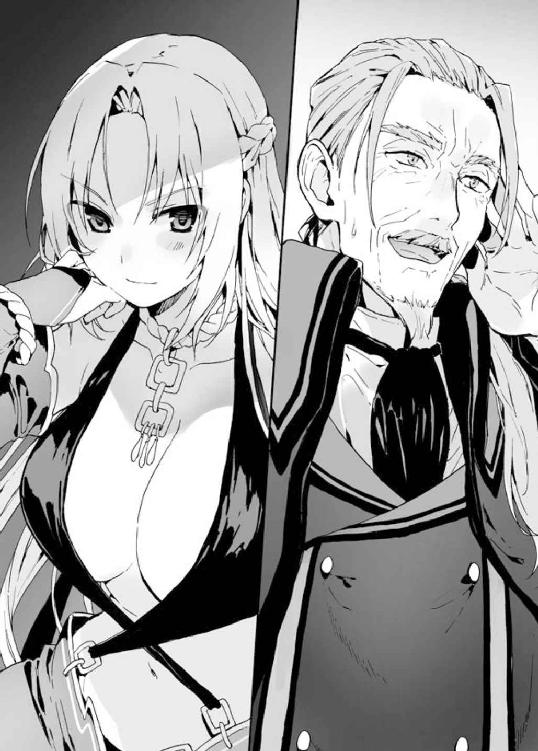
オリジナルの魔札は一度の使用で消滅してしまうが、アルゲンが〈絶対遵守〉で命令を聞かせたい相手はただひとり――騎士門の全権代理者たるミスト・サージェントだけだ。一度の使用で充分なのである。
「おおっ、ありがとうございます......！」
キルシュは憎き異種族だが、それでも利用価値はある。望みの魔札を手にするまでは、下手に出たほうがいい。機嫌を損なわれ、取引が中断されでもしたら、アルゲンの計画は破綻してしまうのだから。
（それだけは、なんとしてでも避けねばならん）
計画の失敗は、すなわち騎士門の衰退を意味している。騎士門の栄えある未来のため、アルゲンはキルシュに媚びを売らねばならないのだ。
『気にすることはない、これはお互いに利のある取引だからね――して、アルゲン。僕が要求したものは用意できてるかい？』
アルゲンは広間が無人であることを確認したあと、声をひそめて告げる。
「はい。いまはミストが持っておりますが......私が全権代理者になった暁には必ずお渡しすることを約束いたします」
キルシュが欲しているのは、ＳＳＳランクの魔札――五年ほど前、まだ全権代理者ではなかったミストがクエストで勝ち取った、世界に一枚しかない魔札である。
しかし魔札に興味がなく、ゆえに魔札への知識に乏しいアルゲンにしてみれば、それは取るに足らない――なんの価値もないものだ。その魔札を渡すだけで自分が全権代理者になれるなら――自らの指揮のもと騎士門を世界最強の種族へ導けるなら、ＳＳＳランクの魔札だろうが手放すことにためらいなど感じようはずがない。
『いいだろう、取引成立だ。それじゃ一度しか言わないからよく聞くように。取引場所はクヌル平野の――』
「お、お待ちください！ そ、そこでの取引は難しいかと......」
『なにか不都合でもあるのかい？』
「いえ、その、実は......」
アルゲンはクヌル平野に新たな自治区が誕生したことについて、手短に説明する。
『......へえ、クヌル平野に街をねぇ。それは残念。あそこ気に入ってたんだけどなぁ』
「そ、そうだったのですか」
趣味の悪い女だ、とアルゲンは内心で毒づく。
『そうなんだよ。身内にうるさいのがいてねぇ――だからたまに生物の死に絶えたクヌル平野で静謐な一時を過ごしていたのさ。それにしても驚きだよね、この短期間にあの死の土地を復興させるなんてさ。どんな奴なんだい、その竜胆翔真というのは』
「さあ、そこまでは......」
『わからない、か。まあいいや。これは僕の目で確かめなくてはならないことだからね。そこまでの強力な魔札を持ってるんだ。ひょっとすると〈空白の魔札〉と――アイリスと、なにか関係しているかもしれないし――』
「あ、あの、キルシュ様......？」
『ああ、わかっているさ。〈絶対遵守〉だろう？ そうだな......クヌル平野がだめなら、取引場所は――』
◆
クロッカスとの神託遊戯で勝ち取った奴隷を自治区に住まわせることで、〈竜胆翔真の帝国〉の人口は倍以上に膨れあがった。人手を増やして建築スピードを加速させるという翔真の計画通り、殺風景だった街に次々と家が建っていき、住宅街ができつつあった。
そんな真新しい家々が建ち並ぶ区域に、古さを感じさせる木造物件が建っていた。つい先日まで精霊自治区にあったその建物の名は〈うさぎ亭〉。翔真が出店を促した食事処だ。
全権代理者が直接スカウトした飲食店という触れこみにより、出店後まだ間もないのに、〈うさぎ亭〉は大繁盛していた。
肉の調達ルートは確保できていないため川魚メインになっていたが――ほんの数刻前に翔真の手によって農場での家畜飼育がスタートしたため、近日中には肉料理が提供されることになる。
「なにからなにまで、本当にありがとう......」
昼食を食べに〈うさぎ亭〉を訪れた翔真がその話をすると、カンナが頭を下げてきた。
「べつに感謝するようなことじゃねえさ、俺が肉を食いたかっただけなんだからな」
「う、うん。お肉が入ったら、すぐに翔真くんを呼ぶね。最初に食べてほしいから......、あっ、でも忙しいよね。なんたって翔真くんは全権代理者様なんだから」
「なぁに。カンナの手料理が食えるんだ、どんな用事もすっぽかしてやるぜ」
翔真が言うと、カンナは頬を紅潮させ、嬉しそうにうなずいた。
「うんっ。頑張って作るね！」
「楽しみにしてるぜ――っと、それより店はいいのか？」
翔真は店内へ視線を向ける。昼食時ということもあり席は満員だった。近くに競合店がないのも理由の一つだが、人気の最大要因はほかにあるようで......
「カンナちゃんこっちこっち！」「こっちに水を持ってきてくれ！」「俺は注文するぞ！ だから俺を優先してくれ！」「おまえさっき注文したばっかだろ！」「おまえこそカンナちゃんと話したいだけじゃねえか！」「うるせえおまえもだろうが！」
......容姿端麗にして抜群の体つき、さらに料理上手なカンナは男たちに大人気だった。なかには白昼堂々とカンナに告白する者もいたが、「ありがとうございますっ。だけど、あたしには好きなひとがいますから......」と玉砕するのがお約束になっていた。......まあ、それでも男たちは諦めず、カンナの気を引こうと注文合戦を繰り広げているのだが。
そんな賑々しいやり取りにほほ笑ましさを感じつつ、翔真は正面に向きなおる。
翔真が座るテーブル席の対面には、ルメリアがちょこんと腰かけていた。
大盛況の店内には目もくれず、まっすぐに翔真を見つめている。
「ルメリアもさ、一日中俺にべったりしてないで、好きなことしていいんだぜ。たとえば、この店でバイトしてみるとかさ」
美少女がいつもそばにいる状況は喜ばしいことだが――ルメリアは表情に乏しい。翔真ひとりと過ごすのではなく、もっと大勢の人間と接することによって感情が豊かになり、翔真に笑顔を見せるようになるかもしれない。
「ご主人様のおそばにいることが、私にとっての『好きなこと』なのです。どうかお嫌でなければ、私をご主人様のおそばにいさせてください」
「それは構わねえが......暇じゃねえか？」
「いいえ――いいえ、けっして暇ではありません。ご主人様の働く姿を見ているだけで、私は幸せな気持ちになれるのです。あぁ、私はこんな素敵な方に買っていただいたのだと......。それにご主人様を眺めている際、時折アイリス様が話しかけてくださいます。私はご主人様に買っていただき、毎日が楽しくてしかたがないのです」
「わしもルメリアと話せて楽しいのじゃ。だって翔真はわしを無視するんじゃもん。話し相手が増えて、わしはとても嬉しいぞ」
そう言って、アイリスはため息をつく。
「わしだって、翔真が忙しいことくらいわかっておるぞ？ でも......でも、もうちょっとくらいわしに構ってくれてもよいではないか。わしは翔真に触れることができぬのじゃし、ならばせめて、会話くらいしてくれたってよいじゃろ......」
「ま、そうだな。たしかに最近話してねえし、飯のときくらいは楽しくおしゃべりするとするか」
翔真がそう告げた途端、アイリスの顔がぱあっと明るくなった。
「やったのじゃ！ ではなにを話す？ なんでもよいぞっ！ なにもないならわしのほうから話題を振ろうか。こんなときに備えていろんな話題を用意しておったのじゃ！」
「話題はアイリスに任せるぜ」
「うむ！ では――」
「――たっ、大変だッ!!」
アイリスが嬉々として話し始めようとしたとき、〈うさぎ亭〉に男の声が響いた。男はしんと静まりかえった店内を見まわし、翔真の姿を捉えると慌てた様子で駆け寄ってきた。
「大変です全権代理者様！ あいつが！ あいつが来たんです！」
「あいつ？」
「全権代理者です！」
「全権代理者ならここにおるじゃろ」
楽しいおしゃべりに水を差されたアイリスは不機嫌そうな口調で言った。
「違いますアイリス様！ そうではなく騎士門の――」
「――頼もうっ！」
そのとき、女の声が響き渡った。店内にいた男たちは一斉に声のしたほうを振り向き、息を呑む。
戸口から店内を見まわしていたのは、見目麗しい娘であった。凜とした顔つきに意志の強そうな瞳。白銀のアーマーが手足を覆い、豊満な乳房は胸当てに守られている。
彼女は視線の集中砲火にたじろぐことなく、凜然とした態度で叫んだ。
「お楽しみのところ失礼する！ このなかに、全権代理者はいるかっ！」
「おう、ここにいるぜ！」
名乗りを上げると、美少女がじろっとこちらを見てきた。
「そこにいたか！」
つかつかと規則的な歩幅で歩み寄ってくる。そしてテーブル横で立ち止まり、じろりと翔真を見下ろしてきた。その美貌に、困惑の色が浮かぶ。
「......まだ、子どもではないか。本当に、貴殿がこの自治区を作ったというのか？」
翔真を子ども呼ばわりするが、それを言うなら彼女も子どもだ。翔真より一つ年下か、せいぜい同い年くらいに見える。
「まあな。おまえは――全権代理者か」
「いかにも、私は騎士門の全権代理者、ミスト・サージェントだ。貴殿の名は――」
「竜胆翔真だ。翔真とでも呼んでくれ」
親しげに笑いかける翔真にミストは一瞬戸惑ったようだが、
「......では、そうさせてもらおう」
真剣な顔でつぶやき、その表情のまま話を続けた。
「翔真殿は、なぜ異種族が共存できる自治区を作ったのだ。まさか『種族が違う』というだけでいがみあい、差別しあっていることに心を痛めたとでもいうのか？」
そうであってほしい、というような口ぶりだった。
「んなたいそうな理由じゃねえよ。たださ、いろんな種族と暮らしたほうが面白いだろ」
ミストはほうけたように目を瞬かせた。
「お、面白い？ たったそれだけの理由で、貴殿は自治区を作ってしまったのか？」
「おう」
翔真は軽い調子で答えた。だが、けろっとしているのは翔真だけで、店内にいる人々は恐怖と敵意の入り交じった視線をミストに向けている。彼らにとって、ミストは自分たちを虐げていた連中の親玉なのだ。恐怖するのも無理はなく、敵意を持つのもしかたない。
ミストはそんな視線を気にするふうもなく、ぼそりと言った。
「私は、貴殿が羨ましい」
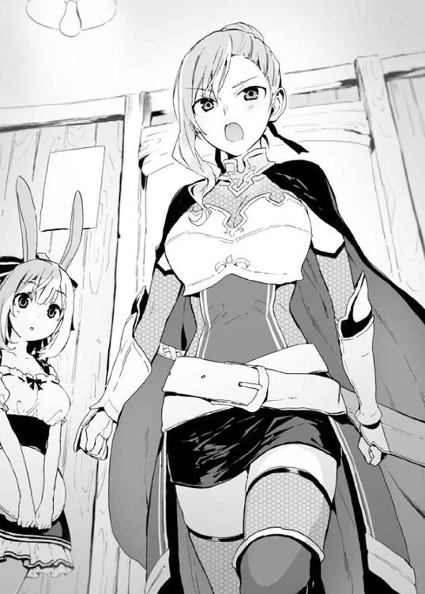
翔真は意外そうに眉を動かす。――否、意外なことなどなにもない。種族同士は互いに差別意識を持っており、種族代表たる全権代理者ともなれば差別意識は一際強いはずだと思っていたが――実際にミストと話してみて、そうでもないことがわかった。いましがたミストが口走ったとおり、彼女は異種族が共存できる自治区を作った翔真を羨ましがっているのだ。
もっとも、それは現時点では翔真の推察に過ぎないが......
「俺が羨ましい？ なんでだ？」
真意を探るべく問いかけると、
「その前にこれを使わせてもらおう。――〈密談空間〉！」
客たちのざわめきが途絶える。
「すまぬが、これより先は他人に聞かれたくない話でな。翔真殿とふたりきりで話がしたかったのだ」
ミストは言った。その美しい声は、翔真にしか届いていないようだ。ざわつく店内から隔離され、アイリスの呼びかけも聞こえない（口の動きから「翔真」と叫んでいることはわかったが）。
翔真はあらためてたずねる。
「で、俺のなにが羨ましいって？」
ミストはためらうように目を伏せたあと、つり目がちの瞳を翔真に向けた。
「貴殿は、私の夢をわずか二十日で叶えてしまった。私は、異種族同士が仲良く暮らせる自治区を作りたかったのだ」
「へぇ......ミストには差別意識がないんだな」
アストラルでは差別意識がないほうが珍しい。だというのに全権代理者が反差別主義者ときた。なるほどこの話は他人に聞かれるわけにはいかない。自分たちの代表が他種族を擁護しているのだと発覚すれば、ミストは裏切り者扱いされ、騎士門の自治区内で暴動が起きかねない。
「差別意識などあるわけがない。なぜ外見が違うというだけで、争わねばならんのだ。と、幼い頃から疑問に思い続けてきたが、歳を重ねるにつれわかったよ。私は異端なのだとな。側近には世迷い言だと否定され、けっして公言するなと釘を刺されていたが......、貴殿になら、話してもいいと思ったのだ。志は違えど、私の夢を叶えてしまった貴殿にならな」
「だったら、俺の自治区に引っ越すか？」
翔真の誘いに、ミストはふっと微笑を浮かべた。
「ただの町娘なら喜んで受け入れるところだが、私は全権代理者だ。私自身は貴殿と良好な関係を築きたいが――しかし、それはけっして許されぬこと。全権代理者たる私には、騎士門を守る責務があるのだから」
ミストは鋭い眼光を翔真に向ける。
「全権代理者の立場から言わせてもらえば、この自治区は大変脅威的だ。わずかな期間でここまでの街を作り上げた貴殿を、警戒しないわけにはいかぬ。この速度で成長されれば、いずれは隣接する我が自治区が、貴殿の自治区に呑みこまれかねん――実際、〈飛翔〉でここを訪れる道すがら、いくつかの街を巡ってみたが、民は〈竜胆翔真の帝国〉に怯えていた」
「そう身構えることはねえよ。騎士門の連中に危害を加えるつもりはないからな」
「口ではどうとでも言える。たとえ喉が潰れるまで自治区の無害さを主張しようと、民が貴殿の言葉に耳を傾けることはない。ゆえに――これ以上勢力を拡大される前に自治区を潰せというのが、騎士門の総意だと私は判断した」
「つまり？」
その先の言葉を促すように、翔真はたずねる。
「騎士門の全権代理者として、貴殿に決闘を――神託遊戯を申しこむ!!」
「望むところだぜ」
「そ、即答か。貴殿の決断に、この自治区に住まう人民の未来がかかっているのだぞ」
ミストにしてみれは即答だろうが、翔真は全権代理者と神託遊戯をするために自治区を作ったのだ。いまさら悩むことはない。
「なァに、勝てばいいだけの話だ。んで、ルールはどうする？ ミストの一存で決められないなら、城に戻って側近と相談してもいいんだぜ。時間が惜しいし、そのときは〈瞬間移動〉で送ってやってもいい」
「その心配には及ばんよ。全権代理者のルールはあらかじめ決まっているのでな」
全権代理者は自治区の未来を担保に神託遊戯を行うのだ。神託遊戯をすることになればルール決めの際に自治区内で揉めることになるのは容易に想像がつく。そうならないよう全権代理者は側近たちと事前に議論し、あらかじめ提示するルールを決めているのだ。
ミストは言った。
「『一対一二の勝ち抜き戦』、『回復禁止』、『魔札の効果は一戦ごとにリセットされる』。それがこちらの提示するルールだ。もちろん一二人で戦うのは我々だ」
「ずいぶんとそっちに有利なルールだな」
「そう思うなら、そちらもルールを提示するがいい。といっても、全権代理者同士の神託遊戯において、ルールがすんなり決まった例しはない。いつまでも平行線のまま――神託遊戯が取りやめになったこともある」
全権代理者同士の神託遊戯では交渉に交渉を重ね、互いに納得のいくルールを模索する。折衷案が決まるまで、数年かかることもあるらしい。
「さあ、貴殿のルールを聞かせてもらおうか」
「んじゃ、言うが――俺はアイリスをつれていく」
「アイリス？」
小首を傾げるミストに、翔真は頭上を指さした。そこでは銀髪の美女が耳に手をかざし、翔真たちの会話に聞き耳を立てていた。もちろん、いくら聞き耳を立てたところで翔真の声は聞こえないのだが......
「......彼女が、アイリス殿か？」
「そうだ。二対一二なら、そっちにとっても悪い条件じゃないだろう？」
「たしかにそれだけ聞けばこちらに有利なルールだが――我々の神託遊戯は勝ち抜き戦だ。二対一と捉えることもできる。これでは我々が不利になる」
「......そうか」
そっけなく返しつつも、翔真は内心ミストに感心していた。彼女はグズマやクロッカスのように『人数が多いから有利』と短絡的な決めつけをしなかったからだ。
「ま、そのへんの心配はいらねえぜ。アイリスは魔札を持ってねえからな」
ミストは怪訝そうに眉をひそめる。
「魔札を持ってない？ ではなぜ参加をさせるのだ。足手まといにしかならないぞ」
「ミストは結婚してるか？」
「なっ!?」
ミストは顔を真っ赤に染め、あわあわと慌てるように目を泳がせた。
「い、いきなりなにを言うのだ貴殿は!? ふざけてるのか!? 私はまだ一七だぞ、旦那様などいるわけがなかろうっ！」
取り乱すミストに、翔真は真顔で続ける。
「誰かとつきあったことは？」
「断じてないっ！ 手を繋いだことすらないっ！」
「その様子じゃ、誰かを好きになったこともなさそうだな」
「わ、悪いかっ！」
「いや、悪くはないさ。そうか、つきあったことも、誰かを好きになったこともないか」
「......そういう貴殿はどうなのだ？ 私に偉そうなことを言ったのだ。当然、恋愛経験はあるのだろうな！ け、経験豊富なのだろうなっ！」
偉ぶったつもりはないが、ミストは恋愛経験のなさを馬鹿にされたと感じたようだ。
「恋愛経験どころか、俺には嫁がいるぜ」
「私と同い年くらいなのにもう結婚を......。私が異端なだけで、このくらいの歳になると結婚するのが普通なのか？ 私は、その......出遅れてしまったのだろうか？」
「焦ることはないぜ。ミストは美人なんだからさ、募集をかけりゃあ結婚したいって奴が殺到するだろうよ」
ミストの瞳を見つめて告げると、彼女はさっと目をそらした。
「よ、よさぬか。妻がありながらほかの女を口説くなど、あってはならぬことだ......」
「口説く？」
「き、貴殿はいま私のことを、その......美人だと言ったではないか。それが口説く以外のなんだというのだ」
......堅物そうな見た目をしていると思っていたが、ここまでうぶとは思わなかった。
「話を戻すが、アイリスは俺の嫁だ。恋愛経験がなくてもわかると思うが、結婚ってのは普通、好きな奴とするもんだろ」
「......なにが言いたいのだ？」
「好きな娘が近くで見てるんだ、かっこいいとこ見せたいと思うのが男のさがってもんだ。アイリスは戦う術を持たないが――そばで見守ってくれるだけで、俺は強くなれるんだ」
「......それが、アイリス殿をつれていく理由か」
「ま、ほかにも理由はあるけどな」
グズマ戦でもそうだったが、ルール上、参加者以外はライフを持てず、攻撃を食らえば肉体的損傷もある。アイリスの身体を守るにはルールに則り神託遊戯に参加させなくてはならないのだ。
「ただ、俺としては大事な嫁が傷つく姿は見たくない。身体に傷はつかなくても、痛みは感じるわけだしな。ま、そっちが一撃必殺の魔札を使って、痛みを感じる暇もなく倒してくれるってんなら話はべつだが......」
翔真は探りを入れるような視線をミストに向ける。
「神託遊戯に参加する限り、痛みから逃れることはできん。貴殿の妻をいたぶるのは気が引けるが、敵である以上は攻撃しないわけにはいかん」
翔真は見せつけるようにため息をつく。
「そうか......一撃で倒してはくれないか......」
「すまんが......それは無理な相談だ。私も、できることならそうしてやりたいが......」
落ちこむ翔真に罪悪感を抱いたのか、ミストはすまなそうに目を伏せた。
「いや、いいんだ。真剣勝負だからな」
言いつつ、翔真は内心でほくそ笑む。どうやらミスト陣営は一撃必殺の魔札――対象に一〇〇〇以上のダメージを与える魔札を持っていないようだ。
（ま、考えてみりゃ持ってねえわな。持ってないからこそ――一撃で倒せないからこそ、一二人で戦うわけだしさ）
ルールから推測するに、ミスト陣営はじわじわと翔真のライフを削る戦術を採るつもりなのだろう。一二人で翔真のライフを削ればいいのだから、防御のことなど考えず、ただがむしゃらに攻撃してくると予測できる。
（回復できねえんじゃ攻撃を食らうわけにはいかねえし、アイリスの前でかっこ悪い姿をさらすわけにもいかねえ――となると、やっぱ一撃で倒していくのが得策か。......けど、全員をオリジナル魔札で倒したんじゃ、つまんねえな。それに一一人はともかく、ミストとはじっくり戦ってみてえ。全権代理者がどんな戦術を使ってくるのか――全権代理者はザコか否か、確かめておきたいしな。なにより、俺の戦術が全権代理者に通用するか――それを知っておきたい）
黙考を終え、ミストの相手に戻る。
「......けど、俺は夫としてアイリスを守らなけりゃならねえ。そこで、もう一つルールを提示させてもらうぜ」
「というと？」
「ミスト陣営には、俺だけを狙ってほしい。アイリスは神託遊戯に参加するが――勝負に関与はしない。ただの傍観者ってわけだ」
「......つまり、貴殿を倒せばこちらの勝ちということか？」
「ああ。要するに実質一対一二ってわけだ、そっちにとっても悪い話じゃないと思うが」
翔真はルールを二つ設けたが、結果的にはミスト側のルールを全面的に受け入れる形になっている。
「こちらとしては是非もない。むしろ一二人で戦いに臨むことが恥ずかしいとさえ思える。だが、私は騎士門の未来を背負っている。確実に勝たねばならんのだ」
「そう気負うなよ。せっかく神託遊戯ができるんだ、もっと楽しもうぜ」
翔真が軽い調子でそう言うと、ミストはふっと微笑を浮かべた。
「楽しむのも不謹慎だが......貴殿となら、本当に楽しめそうだ」
ミストは指を鳴らした。それを合図に〈密談空間〉の効果が切れ、ざわつきが蘇った。客たちは翔真とミストに視線を向けており、それはアイリスとルメリアも同様だった。
ミストは目つきを鋭くさせ、客たちに聞こえるような声で翔真に告げた。
「だが、神託遊戯に勝つのは私だ！」
「かかってこいよ、全権代理者。返り討ちにしてやるぜ！」
翔真は芝居がかった口調で告げる。
いまこの瞬間、目の前で全権代理者による神託遊戯の合意がなされた――それを知り、店内にいた客たちはどよめき、この場にいない連中に報せようと店を飛び出していった。
◆
客たちが慌ただしく店を飛び出し、翔真たちがバトルフィールドへと転送されたことで、〈うさぎ亭〉は先ほどまでの賑々しさが嘘のように静まりかえっていた。
「翔真くん、勝てるかなぁ」
そんな静寂が漂う店内に、カンナの不安げな声が響く。
「あの、カンナさん......。ミストさんは、強いのですか？」
ルメリアはおずおずとカンナに話しかけた。
独り言のつもりだったのか、カンナは反応があったことに多少驚いた顔をしながらも、優しい口調で教えてくれた。
「実際に戦ったことがあるわけじゃないからわかんないけど......、騎士門の全権代理者を務めてるくらいだもん、強いはずだよ」
「そうですか......」
「うん。......でも、翔真くんはめちゃくちゃ強いもんね。きっと――ううん、ぜったいに勝てるよっ」
確信を持っているというより、自分を安心させるような口調だ。カンナは翔真の強さを知っているようだが――ミストの実力まではわかっていない。実力が未知数だからこそ、ひょっとしたらミストは翔真より強いのかもしれない――と不安になってしまうのだ。
「翔真くんはぜったいに勝って戻ってくる。だから、あたしはご馳走を作って翔真くんの帰りを待つよ。ルメリアちゃんはどうする？」
「私は......ここでご主人様の帰りを待っていてもいいでしょうか？」
翔真は〈うさぎ亭〉からバトルフィールドへ転送された。勝っても負けても、バトルが終わったらこの場所へ戻ってくる。
「うん、もちろんだよ」
にこりと笑ってそう言うと、カンナは厨房に入っていった。それを見届け、ルメリアはぬるくなった水を口に含み、一息ついた――そのときだ。
「ここにいると聞いたんだけど、どうやらバトルフィールドに転送されたあとみたいだね。残念残念」
うしろから声が聞こえてきた。振り向くと、戸口のところに長身の女性が立っていた。
見た目年齢はルメリアより三つか四つ年上といったところか。妖艶な色気を放つ絶世の美女である。柔らかそうな銀髪に、健康的な褐色の肌。露出度は高めだが品のある衣装を纏い、胸元はまるで大きな果実でも入っているかのように膨らんでいる。
きょろきょろと閑散とした店内を見まわしていた女は、切れ長の目でルメリアを捉えた。
「......っ」
その紅い瞳に見つめられた瞬間、ルメリアの背筋がぞくっとする。理由はわからないが、ルメリアは出会ったばかりの、名も知らぬ女に恐怖してしまっていた。
「ちょうどいい。きみに訊きたいことがあるんだ」
親しげに話しかけてくる女に、ルメリアははっと我に返る。
「......なんでしょうか？」
「竜胆翔真って少年について知りたいんだけど、なにか知ってるかい？」
「......わかりません」
ルメリアは嘘をついた。正体不明の女に大事なご主人様の情報を教えるのは危険だと、そう本能的に感じたのだ。
「そうか。きみは竜胆翔真の奴隷なんだね」
「っ、な、なぜ――」
「なぜわかったか？ 簡単さ。竜胆翔真って少年は、きみたちの全権代理者なんだろう？ だったら知らないわけがないじゃないか。でもきみは知らないふりをした。ほかの連中は竜胆翔真の居場所を教えてくれたのに、だ。つまりきみは竜胆翔真の奴隷――強制的ではなく、自主的に従っている奴隷で、だからこそ正体不明の女に――この僕に、ご主人様の情報を話すことをためらったんだ。違うかい？」
「......」
「沈黙するってことは、あってるってことかな」
「――っ、全然違います。間違ってます」
ルメリアが慌てて否定すると、女はくすりと笑う。
「そこまで必死に否定されると、逆に怪しくなっちゃうなぁ」
「......あってるようで、間違ってもいます」
ルメリアの必死な抵抗むなしく、女は話題を変えてきた。
「そうかい。ところでご主人様の食事の席に同伴してるってことは、きみはたいそう気に入られてるようだね。普通、奴隷なんかと食事なんて取らないからね。そんなきみなら、アイリスのこともなにか知ってるかもしれないな」
「わかりません」
「ふふっ。きみは本当に嘘をつくのが下手だねぇ。人間ってものはね、本当にわからない質問をされたときは、一瞬思考が停止するものなんだよ。つまり即答はできない――」
「わかりませんっ」
ルメリアは語気を強めた。本当は返事もしたくなかったが、沈黙すると肯定と取られてしまうかもしれない。
彼女がどうして翔真ばかりでなくアイリスにも興味を持っているのかはわからないが、素性の知れない相手に、大切なふたりのことを教えるわけにはいかないのだ。
「そんなに僕と話すのが嫌かい。もう少し情報を集めたかったんだけど......まあいいや。アイリスの存否はともかく――竜胆翔真の実力は、じきにこの目で確かめられるからね」
さぁて、と女がルメリアを見下ろす。
「アイリスに勘ぐられると計画に支障を来すかもしれないし、きみには僕と話したことを忘れてもらわないとね」
「なにを......」
と、気づけば彼女の胸元に一枚の魔札が浮いていた。青白い光を放つ魔札にルメリアが身構えるのと同時、女はそれを――
世界に一枚しかないＳＳＳランクの魔札を詠唱した。
「――〈空白の時間〉！」
「......あれ？ いま誰か来てなかった？」
そう言いながら、カンナが厨房から顔を覗かせた。エプロン姿のカンナに視線を向け、ルメリアは不思議そうに小首を傾げる。
「いえ、私はずっとひとりでしたが......」
「えっ、そう？ 女のひとの声が聞こえたと思ったんだけど......気のせいだったのかな」
カンナは自分を納得させるようにつぶやくと、厨房に戻っていった。
◆
翔真とミストの提示したルールを受けてニンファが構築したバトルフィールドは一二階建ての塔だった。
一階につき一部屋の塔。テニスコート二面分ほどの広さを誇る室内にあるものといえば天井へと続く階段と、そこに設けられた扉くらいのものだ。扉は施錠されており、条件を満たさない限りは押しても引いても魔札を撃ちこんでもけっして開くことはない。
そんなバトルフィールド――。その一階に、翔真とアイリスは転送されていた。翔真の一五メートルほど向こうには屈強そうな騎士門の男が佇んでおり、天井のあたりには金髪碧眼の娘が浮いている。
今回も翔真の神託遊戯の審判を務める精霊――ニンファであった。いましがたルールの最終確認を終えたニンファは大きく息を吸いこみ、
「それでは――神託遊戯スタートなのです！」
合図とともに姿を消した。次に彼女が姿を見せるのは神託遊戯終了時。そのとき彼女のゲーム終了の合図を耳にするのは神託遊戯の勝者のみである。
「まさか貴様のような小僧と神託遊戯をすることになるとはな......。これが他種族どもに知られれば、騎士門の格が落ちてしまいかねん。二度と貴様のような輩が現れないように、騎士門の力を思い知らせてやらねばな」
男がつらつらと語る。
一人目の対戦相手だ。
名前は――知らない。
名乗るほどの相手ではないと思われているのだ。自治区の全権代理者とはいえ、翔真は由緒正しき八大門派の長ではない。ゆえに翔真はなめられている――侮られているのだ。
「ずいぶんと余裕だな。のんきにしゃべってる場合かよ。隙だらけだぜ、おっさん」
「そう思うなら攻撃してくるがいい。もっとも、貴様が攻撃してきた瞬間こちらも魔札を使わせてもらうがな」
男は余裕の笑みを崩さなかった。翔真を侮る気持ちもあるだろうが、なにより一対一二というルールが、男に自信を与えている――一対一二の勝ち抜き戦で負けるわけがないと高をくくっているのだ。
無理もない。たったひとりで一二人を倒さなければならない翔真と違い、ミスト陣営は一二人で翔真に一〇〇〇ダメージを与えるだけでいいのだから。
（ミストは『一対一二なのが恥ずかしい』みたいなこと言ってたし、この男は油断しまくってるし......こいつがクロッカスに俺との神託遊戯の内容を聞いていれば、ここまでなめた態度は取れないはずだ。てことは、やっぱこいつら、俺が一枚で一〇〇〇ダメージ与える魔札を大量に持ってること知らねえな）
ということは一撃必殺魔札の対策など用意していないはずだ。一人目がこの調子では、残りの面々も個々の戦術を駆使するのではなく、人海戦術で翔真を倒すつもりなのだろう。
（戦術どころか対策すら練ってないんじゃ、こいつらとのバトルは楽しめそうにねえな）
男の言動からミスト陣営の作戦を読み取り、翔真は落胆した。
（最初の一一人は予定通り瞬殺するとして......ミストに期待だな。一七歳で全権代理者の座についてるくらいだし――神託遊戯の実力は一二人のなかでは一番だろうしな）
などと考えていると、男が侮蔑的な視線を翔真に向けてきていた。
「ふんっ、攻撃すれば返り討ちに遭うと知り怖じ気づいたか。まったく。自治区を作っただけで騎士門と対等になったと勘違いしたのだろうが――思い上がりも甚だしい。言っておくが――」
「〈側近の裏切り〉！」
瞬間、男の体内から無数の刃物が突き出てきた。一瞬で男のライフポイントは０になり、バトルフィールドから〈隔離空間〉へと敗退した。
「......のぅ、翔真よ。予定通り敵を一撃で倒したそなたにこういうことを言うのもなんじゃが......『言っておくが』の先が気になるのじゃ。あやつはそのあと、なんて言うつもりだったんじゃろうなあ」
「どうせ騎士門の自慢話だろ？ 一〇〇歩譲って騎士門がすごいんだとしても、あいつがすごいわけじゃねえのにな。なんで偉ぶれるのか不思議でならねえぜ――っと」
がちゃん、と解錠音が響いた。
対戦相手を葬ったことで、次の階へ移動する条件が満たされたのだ。
「じゃが、会話が途中で打ち切られると続きが気になってしょうがないのじゃ」
「二人目からは会話が中断されることはないから安心しな」
「最後まで聞かせてくれるのか？」
いや、と翔真は首を振る。
「しゃべる間もなく瞬殺すんだよ。早くミストと戦いてえしな」
「敵にすると恐ろしいが、味方にするとこれ以上ないほど頼もしいのぅ、そなたは」
アイリスの言葉に笑みで応え、翔真は二階へと向かうのだった。
◆
バトルフィールドに打ち立てられた一二階建ての塔――。その最上階にミストは佇み、物思いに耽っていた。
（確実に勝たねばならぬ戦いとはいえ、一対一二というのは心苦しいものがあるな）
神託遊戯のルールは互いに合意の上で決まったのだ。翔真に卑怯者だと罵られようと、ミストが罪悪感に悩まされる必要はどこにもないが、気持ちのいい勝利ではない。
ミストとしては一対一で勝利するに越したことはなかったが――この戦いには騎士門の未来がかかっているのだ。個人的な感情を挟むわけにはいかない。
ミストの仕事は確実に勝利することだ。
であれば、いまは竜胆翔真に勝つことだけを考えるべきである。
（もっとも、私が意気込んだところで翔真殿と直接対決することはないだろうがな）
なにせ一対一二の勝ち抜き戦だ。しかも翔真と戦う一一人は、先代に神託遊戯の実力を認められた選りすぐりの精鋭である。そのうえ回復はルールで禁じているのだ。
一一人がしっかりと任務を果たしていれば――ひとりにつき一〇〇弱のダメージを与えていれば、翔真が最上階にたどりつくことは万に一つもありえない。
（じきに審判が神託遊戯の終了を報せに来る頃か......）
と、そう思っていたのだが......
「！」
ふいにガチャリと解錠音が響き、ミストは「まさか」と息を呑む。床に設けられた扉のほうへ目を向けると――
「一一人全員がおっさんってのはどうかと思うぜ。選考基準偏ってんじゃねえか」
「むしろ男ばかりでよかったのじゃ。美女相手だと、そなたは手加減しそうじゃしな」
「美女が相手だろうと手は抜かねえよ。その証拠に、俺はアイリスに手加減しなかっただろ」
「そ、その言い方だと、わしが美女ということになるが......」
「そう言ったぜ？」
などと軽口を叩きあいながら、翔真とアイリスが最上階にやってきたのだ。見るからに隙だらけだが、予想外の出来事にミストは魔札の詠唱を忘れてしまう。なにせ一一人衆を倒すだけでも異常事態だというのに――なんと翔真のライフは無傷のままだったのだ！
「ま、まさか――まさか貴殿は一撃も食らうことなく一一人を倒したのかっ!?」
「回復は禁止されてるしな。ライフが減ってないってことは――ノーダメージでここまでたどりついたってことだ」
「だ、だが貴殿が戦った一一人は先代に神託遊戯への参加を任された精鋭なのだぞッ!? それを相手に一撃も食らわぬなど考えられぬ！」
「ああ、あいつら精鋭だったのか。どうりで俺を侮ってるわけだ。この戦いが終わったら、あいつらに伝えてやってくれ。『おまえらの敗因は、自分が特別強いと思いこんじまったこと』だってな。上には上がいるんだぜ」
「じゃが翔真よ、六人目あたりからは、驕りより、怯えのほうが強かったではないか？ ちょうどそこの小娘のような反応をしておったのじゃ」
「たしかに、そのあたりからは俺のライフが減ってないことに驚いて――そして、魔札を使う前に消えたんだ、こういうふうにさ！ ――〈冥府への道連れ〉！ もういっちょ〈冥府への道連れ〉！」
翔真が前触れなく魔札を唱えた。――いや、前触れはあった。翔真が一二階に到達した時点で戦いの火蓋は切られていたのだ。いつ魔札を詠唱してもおかしくなかった。
ミストは自嘲する。
まったく、一対一二が恥ずべきことだと？ 思い上がりも甚だしい。竜胆翔真はたった数日で自治区を作り上げた男――絶対に侮ってはいけない相手だということは、わかっていたはずなのに――！
ミストは気を引き締めると、一五メートル前方に佇む翔真に凜とした眼差しを向けるのだった。
「どうしたミスト。ぼけっと突っ立ってねえで、おまえも魔札を使ったらどうだ」
なにやら考えこむように立ち尽くしているミストに、翔真は挑発的な態度で告げる。が、ミストは挑発に応じることなく、凜然とした物腰で言い返してきた。
「貴殿が使った〈冥府への道連れ〉は『対象が攻撃魔札を使うたび、その人物は使用した魔札の半分のダメージを受ける。ただし、あなたは攻撃できない』という効果だ。貴殿はそれを二枚使った。つまり私が攻撃魔札を使えば――最終的に我々は相打ちとなる！」
翔真の唱えた〈冥府への道連れ〉はコンプリート対象の魔札だ。あらかじめ決めていたとおり、翔真はアイリスの創ったオリジナル魔札を使わずに勝つつもりでいる――自分の戦術が全権代理者に通用するか、確かめるために。
「三枚使われれば私に勝ち目はなかったが、貴殿は〈冥府への道連れ〉を二枚しか持っていないのだろう？ もっとも、〈冥府への道連れ〉はＳＳランクの魔札だ。それを二枚も持っている時点で、充分すぎるほど賞賛に値するがな」
「お褒めの言葉、ありがとよ」
そう言いつつも、翔真は内心ではミストに感心していた。
（にしても、〈冥府への道連れ〉の効果をすぐに当ててくるとはな。褒めてやりてえのは俺のほうだぜ）
魔札は一〇〇〇〇種を超えるが、ミストはそのすべてを把握しているのだろう。まあ、考えてみれば当然か。魔札の効果を把握できていないと相手の戦術を読むことができない――神託遊戯を有利に進めることができないのだから。
一般市民ならそれでも許されるだろうが、ミストは全権代理者である。自治区の未来を担っている彼女に、怠慢は許されない。全種類の魔札を把握するくらいの努力はして然るべきだ。
「なるほどね。〈冥府への道連れ〉の効果を把握しつつ、なにも魔札を使ってこないってことは――ミストの手札には攻撃魔札しかないってことか」
「......」
「無言は肯定の証だぜ」
ぎり、とミストは歯を噛みしめる。
「......貴殿こそ、このあとどうするつもりだ？ 攻撃できないのでは、いつまで経っても決着はつかぬぞ」
「いーや、決着はつくぜ。なぜならこいつを使うからな！ ――〈生贄の祟り〉！」
詠唱した途端、翔真のとなりに真紅の魔法陣が描かれ――そこから身の丈二メートルはあろう木偶が現れた。
顔面には笑みの表情が彫られており、愛嬌のある顔立ちに仕上がっている――しかし、後頭部にあたる部分には鬼のような形相が彫られ、手には刃渡り二メートルはあろう鎌を携えている。そして木偶の頭上には、『０』と数字が浮いていた。
「ば、馬鹿なっ！ なぜこのタイミングでそれを使うのだ!?」
ミストは驚声を上げる。彼女は〈生贄の祟り〉の効果を知っているようだ。であれば、その驚きにも納得がいく。
なぜなら〈生贄の祟り〉は『あなたの受けるダメージは〈生贄の祟り〉が肩代わりする。蓄積ダメージが500に達したとき、あなたはダメージを受ける』効果を持つからだ。
「こいつの効果を知ってるなら、わかるよな。ミストが五〇〇ダメージの魔札を使えば、結果的に俺は一〇〇〇ダメージを受ける――つまりミストの勝ちだってことがさ」
ミストの驚きのわけ。それは翔真が自分に不利になるのを承知の上で〈生贄の祟り〉を使用したからだ。
ではなぜ翔真は自らを不利な状況へと追いこんだのか？
それがわからないからこそ、ミストは攻撃をためらっているのである。
「貴殿は賢い男だ。考えもなしに自らを苦境に立たせるようなまねをするとは思えない」
「そりゃそうさ。けど、攻撃しないままじゃ決着はつかねえぜ。それとも騎士門ってのは、一二人がかりでも俺にダメージ一つ負わせられないザコ種族なのか？」
「無駄だ。アルゲンあたりが聞けば激昂していただろうが、私に挑発は通じぬ。それに、貴殿のやろうとしていることは、おおかた予想がつく。貴殿は〈鏡面世界〉を――反射の魔札を使うつもりなのだろう？ 〈生贄の祟り〉を使うことで、貴殿は私に五〇〇ダメージ以上の攻撃魔札を使わせようと企んだ。貴殿の使った〈冥府への道連れ〉と反射魔札を併せれば、私のライフを一撃で０にすることができるからな！」
強気な態度でそう語るミストに、翔真は沈黙する。
するとミストは意趣返しとばかりに、勝ち気な笑みを浮かべた。
「ふっ。先ほどの言葉を返させてもらおうか。沈黙は肯定の証だとな！ ――〈氷獣の爪〉！」
ミストの頭上に現れた魔法陣から巨大な氷柱が顔を出した。一気に空気が冷え始める。この〈氷獣の爪〉は対象に一五〇ダメージを与える攻撃だ。
氷柱は翔真に照準を定め、高速で射出される――だが、勢いよく放たれた氷柱は翔真を貫く直前、翔真の正面にまわりこんだ木偶に防がれた。まるで水面に吸いこまれるように氷柱は木偶の体内へと引きずりこまれていく。
氷柱が完全に飲みこまれたとき、木偶の蓄積ダメージは一五〇に増えていた。
残り三五〇ダメージで、翔真は一〇〇〇ダメージを受けることになる――翔真の敗北が決まるのだ。
「......まだ反射は使わない、か」
口ぶりこそ冷静だが、ミストの顔色は優れていなかった。〈冥府への道連れ〉によって一五〇ダメージを負い、ミストは痛みを感じているのだ。それがどの程度の痛みなのかは、神託遊戯においてただの一度も攻撃を受けたことのない翔真にはわからないが。
「反射を警戒してこつこつダメージを与えていたんじゃ時間がかかるし、ここらで一発、大ダメージを食らわせる魔札でも使ったらどうだ？ シルバーリングをはめてるわけだし、八〇〇程度のダメージを与える魔札くらい持ってるだろ」
ミストはふんと鼻を鳴らす。
「そのレベルの魔札を使った瞬間、貴殿は〈鏡面世界〉を使うつもりなのだろう？ その手には乗らぬ！ ――〈閃光の雷槍〉！」
眩く輝く槍がバチバチと爆ぜるような音を奏でつつ放たれる――が、先の氷柱と同様に〈閃光の雷槍〉は木偶の体内に取りこまれた。
木偶の蓄積ダメージが二八〇になる。
これによって残りライフが七二〇となったミストは――足もとをふらつかせつつも、しかし気丈な態度を崩さなかった。
「さあ、どうする翔真殿？ 反射の使いどころをうかがっているようだが――いつまでも出し惜しみをしていると、取り返しのつかぬことになってしまうぞ」
「もう勝った気でいやがるのか。言っただろ、アイリスが見てる前でみっともなく負けることはねえってな」
すると、翔真のうしろでおとなしくしていたアイリスが興味深げに眉を動かした。
「む？ そなた、いつそのような話をして......あ、〈密談空間〉のときじゃな？ わしのことを話しておったのかぁ......気になるのぅ。どんな話をしておったのじゃ？」
「言わねえよ」
「けちけちせんでくれぃ」
猫なで声のアイリスに、翔真は舌打ちする。
「しょうがねえな。可愛くおねだりしてくれたら教えてやってもいいぜ」
「......教えてにゃん♪」
「ええい！ 自治区の未来がかかった大事な勝負の最中に、なにをふざけておるのだ貴殿らは！ 私をなめているのか!?」
憤慨するミストに、翔真は余裕の笑みを向けた。
「ミストの攻撃があまりに弱いんで、暇になっちまってな。目の前でいちゃつかれるのが嫌なら、どでかい攻撃してこいよ」
「いいだろう、そんなに負けたいなら食らわせてやるっ！ ......〈火焔の砲撃〉！」
対象に二一〇ダメージを与える火の弾が木偶に吸いこまれ、蓄積ダメージが四九〇になる。
「これでふざける余裕はなくなっただろう！ あと一撃で貴殿の負けだ！」
「おいおい、あと一撃で俺の負けとか、勝手に決めつけてんじゃねえ。ミストのライフはあと五一〇しかねえんだぜ。〈冥府への道連れ〉の効果に反射魔札を併せれば――おまえが二五五ダメージ以上の魔札を使ってきた瞬間、俺の勝ちになるんだぜ」
「その可能性は――ない！」
ミストは断言した。
「どうしてそう言い切れるんだ」
「簡単だ。木偶の蓄積ダメージが三八〇にまで増えていたのに――あとたった二二〇ダメージで、貴殿は一〇〇〇ダメージを受けていたというのに、貴殿は〈鏡面世界〉を使おうとしなかった。せっかく反射魔札を使う時間を与えてやったのに、だ」
詠唱まで妙に間があったと思ったら、ミストは翔真の出方をうかがっていたようだ。
「早とちりすんなよ。こうは考えねえのか？ 俺はミストが使う魔札を予測していた――木偶のライフをぎりぎり残すと気づいていたから、反射魔札を使わなかったってな。第一、反射を使うつもりがないんじゃ、俺が〈冥府への道連れ〉を唱えた理由に説明がつかねえだろ」
「......貴殿は、賢い男だ。〈冥府への道連れ〉を使ったのも、きっと私が予想もできない策を考えてのことなのだろう」
だが、とミストは自信に満ちた笑みを浮かべる。
「たとえどんな策を用意していようと――もう遅いッ！ なぜならば！ ただの一度でも私の攻撃が命中すれば、貴殿は〈生贄の祟り〉によってライフを絶たれるのだからな！ ――〈朽ちた聖剣の斬撃〉！」
ミストの手元に剣が現れた。赤錆びに侵され、刀身にひびが入っているそれは――威力二五〇の斬撃を飛ばす剣である。その剣を両手で構え、そして横薙ぎに振るった瞬間――剣は粉々に砕け散り、三日月型の斬撃が翔真めがけて放たれた。
斬撃が木偶に吸いこまれる――
その直前、
「〈必要な犠牲〉！」
翔真は魔札を詠唱し、手札から二枚の魔札を捨てた。タイミングを同じくして、斬撃が木偶の体内に吸いこまれる。蓄積ダメージが上限に達した瞬間木偶の首がぐるりと回転し、表情が笑顔から鬼の如き形相に入れ替わる。そして、一〇〇〇ダメージを与える鎌が翔真めがけて振り下ろされ――
......なかった。
木偶の鎌は翔真を切り裂くことなく――ゆえにダメージを与えることなく、その役目を終えたとばかりに消滅してしまったのである。
その事態に――〈朽ちた聖剣の斬撃〉の詠唱によって残りライフが二六〇となったミストは、驚愕した様子であとずさる。
「な......なぜだっ！ なぜダメージを受けていない!? き、貴殿の使った魔札は......」
ミストはこめかみに手を当て、必死に記憶を思い起こそうとするが――予期せぬ事態にパニックに陥っているのか、〈必要な犠牲〉の効果を思い出せないようだった。
「思い出せないなら教えてやるぜ」
と、翔真は切り出した。
「〈必要な犠牲〉の効果は、『あなたが手札から魔札を２枚捨てたとき、あなたの受けるダメージを軽減して０にする』だ。俺は〈生贄の祟り〉の効果で一〇〇〇ダメージを受ける直前、魔札を二枚破棄した。だからライフが減ってないってわけさ」
これで相打ちはなくなったな、と翔真は告げる。
翔真のライフは一〇〇〇。
ミストのライフは二六〇。
たしかにライフポイントだけ見れば、圧倒的に翔真が優勢である。
だが――
「きっ、貴殿は〈冥府への道連れ〉の効果で攻撃ができないではないかっ！ 私が攻撃しない限り、私の負けは万に一つもありえない！」
「いーや、残念だが俺の勝ちだぜ。たしかに俺は攻撃できねえが――ミストにダメージを与えられないわけじゃねえ」
なぜなら、と翔真は不敵に笑う。
「俺はさっき、二枚の魔札を破棄したからな」
「言われなくても知っているっ！ だからこそ、〈生贄の祟り〉のダメージが軽減されたのだ！」
翔真は肩をすくめた。
「わかってねえな。その捨てた二枚には、こんな効果があるんだぜ」
「こ、効果、だと......？」
「ああ。『この魔札を手札から捨てたとき、対象１名は手札から魔札を１枚選んで捨てる。それが攻撃魔札だったとき、対象はその半分のダメージを受ける』って効果がな！」
「......っ！」
ミストは青ざめた。このあと自分の身になにが降りかかるか、察してしまったのだろう。
翔真は、にやりと笑う。
「おまえがいま思ってることを当ててやるぜ。『手札には高威力の魔札しかない。どれを捨てても結果は同じだ』――だろ」
「な、なぜそれを知って......いや、なぜ貴殿は私の手札がわかったのだっ!? ま、まさか私の気づかぬうちに、私の手札を盗み見る魔札を使っていたのか!?」
「そんなもの使ってねえよ」
「ではなぜ私の手札に高威力の魔札しかないことを知っている!?」
誤魔化すのは不可能だと悟ったのか、あるいは誤魔化す余裕もなかったのか、ミストは手札に大ダメージを与える魔札しかないことを認めた。
「簡単さ。俺が、そうなるように誘導したんだ」
「誘導だと!? いったいいつ......っ！」
ミストははっとする。
「ま、まさか――まさか貴殿は最初から!?」
ご明察、と翔真はうなずいてみせた。
「俺は〈冥府への道連れ〉を二枚しか持ってないんじゃない。二枚しか使わなかったんだ。三枚使っちまうと、ミストが攻撃できなくなっちまうからな」
翔真は〈生贄の祟り〉を唱えることで膠着状態を破り、ミストに〈鏡面世界〉を使うと思いこませることに成功した――ミストに反射を警戒させ、デッキから威力低めの魔札を補充するように誘導したのだ。
しかし明確な戦術的意図がない限り、低威力の魔札など何枚もデッキに入れるものではない。強力な魔札を持っているなら、それをバトルフィールドに持ちこもうと考えるのが普通である。その証拠に、ミストの使う魔札の威力は――最初の一枚目は例外として――徐々に高くなっていた。
ミスト陣営の提案した『回復禁止』というルールから、回復魔札をデッキに入れているわけがなく――『一対一二の勝ち抜き戦』というルールから、ミストのデッキは攻撃重視だと推測できる。
なぜなら、ミスト陣営の作戦は『最上階にたどりつく前に竜胆翔真を倒す』だからだ。
ミストにとっては翔真が最上階に到達すること自体が想定外なのであり――仮にたどりついたとしても、翔真のライフポイントは残りわずかだろうと予測していたはず。
そんな満身創痍の翔真を相手に防御重視のデッキを用意するとは思えないし、デッキに防御魔札を入れていたとしても、翔真は〈冥府への道連れ〉で攻撃が禁じられているのだ。ミストが防御魔札を手札に加える理由はどこにもない。
だからこそ――
ミストの手札に高威力の魔札が集まるのは、当然の帰結なのである！
「さっさと二枚選んで捨てろよな。威力が合計五一八未満なら、その半分しかダメージは食らわないわけだし、ミストはぎりぎり生き残れるぜ。まあ、そのときは、べつの方法でダメージを与えてやるけどな」
「くっ......」
「睨んでねえでさっさと捨てろ。もっとも、このまま捨てるのを渋ったところで――俺の判定勝ちは揺るぎないけどな。なにせ俺はすでに一一人を倒しているし、最後のひとりのミストとも、ライフにかなりの差があるからな。俺としてはどっちの勝ち方でもいいが、騎士門の代表ともあろう者が、逃げたあげく判定負けとかみっともない負け方したんじゃ、騎士門はいい笑いものになっちまうぜ。なあ――ミスト・サージェントさんよォ」
「......く、くそっ！ 捨ててやる！ 捨ててやればいいのだろっ!?」
打つ手なしの八方塞がりとなったミストは、泣きそうな顔で叫んだ。青白く光っていたミストの手札が二枚消えた次の瞬間、彼女の頭上に表示されていたライフポイントが０になり――
騎士門の全権代理者は、バトルフィールドから姿を消した。
かくして......
翔真は一二人を相手にただの一撃も食らうことなく――全権代理者との神託遊戯に勝利したのであった。
第六幕 英雄色を好む
全権代理者との神託遊戯に勝利した翔真はミストに三つの要求を聞かせたあと、居城へ舞い戻っていた。
いまは広々とした寝室に置かれた椅子に腰かけ、両隣にアイリスとルメリアを侍らせてくつろいでいる。
あれから――。ミストとの神託遊戯から、一時間ほど経っていた。翔真の勝利を受けた自治区民は歓声を上げ、『我らの全権代理者様は無敵だ！』『我らは一生全権代理者様についていくぞ！』と口々に忠誠を誓っていた。
翔真が『俺に服従すれば安心で平和的な暮らしを保証するぜ』と焚きつけたものだから、自治区民はますます盛り上がりを見せた。
そして興奮冷めやらぬなか各々の作業に戻ったのを見届け、翔真は城へ戻ってきたのであった。
「そなた的にはどうなのじゃ？」
アイリスが正面にまわりこみ、質問してきた。
「なにがだ？」
「ミストとの神託遊戯に勝利したわけじゃが、それはそなた的に成功だったのかと訊いておるのじゃ」
翔真は鷹揚にうなずく。
「まあな」
翔真がミストに提示した要求は――
【１】ミスト・サージェントは所有するすべてのＳＳＳランク魔札を竜胆翔真に譲る。
【２】ミスト・サージェントは竜胆翔真の嫁になる。
【３】騎士門自治区は〈竜胆翔真の帝国〉と同盟を結ぶ。
――以上の三つである。
そのうち【１】に関して言うと、ミストは翔真が欲していた五〇枚のうち一枚の魔札を持っていた。
〈年齢詐称禁止令〉という『対象の実年齢を見破る』効果の魔札である。
正直使いどころに悩むし、なぜティナはこんな魔札を創ったのかと理解に苦しむが――考えてみればティナはアイリスと違って〈融合〉能力しか持っていないし、望みの魔札を創ることはできないのだ。
まあ、効果はさておき、〈年齢詐称禁止令〉は世界に二枚とないＳＳＳランクの魔札であることは確かだ。コンプリートを目指す身として、それが手に入ったのは喜ばしいことである。
しかしアイリスが訊いてきたように、五〇枚あるＳＳＳランク魔札のうち、たった一枚しか手に入らなかったのは......まあ、残念といえば残念だ。
ミストが言うには『騎士門はここ五〇年のクエストで一枚しか魔札を手に入れていない』とのことだし、審判立ち会いのもと行われる要求の場で嘘をつくことはできない。
つまるところ『騎士門は最弱の門派』ということになる。
これはこの先の魔札蒐集の困難さを意味するが――翔真にしてみれば『この先より強い相手とゲームができてラッキー』程度の認識しかないのであった。
「そなたが満足ならそれでよいのじゃが......一枚といわず、魔導指輪ごともらったほうがよかったのではないか」
「ご主人様は慈悲深いお方ですから、すべての魔札を奪い取ることにためらいを抱いたのです」
ルメリアがうっとりとした顔で言う。
「しかしな、ルメリアよ。わしは翔真に一〇〇〇〇枚以上の魔札を持っていかれたことがあるのじゃぞ。なのに翔真はミストに情けをかけたのじゃ。そ、そんなにミストが特別なのか？ あやつが可愛いから、慈悲をかけたのか？」
「べつにミストが美人だから特別扱いしたわけじゃねえ。ただ、あいつは全権代理者だろ。だったらこれから先も魔札は必要になってくる。だから必要な分だけもらったんだ」
それに、と翔真はアイリスに笑みを向ける。
「アイリスには俺がついてるじゃねえか。魔札なんかなくたって、平気だろ？」
その台詞を耳にした途端、アイリスの頬に朱が差した。
「う、うむ。そうじゃな。わしには魔札などなくとも、最強の旦那様がついておるしな」
幸せそうに顔をほころばせていたアイリスは、はっとして、
「じゃ、じゃが翔真よっ。そなたはなぜ――ミストを嫁にしたのじゃ？ ......騎士門との同盟と、なにか関係しておるのか？」
「まあな。目当ての魔札を手に入れた以上、騎士門と争う理由はどこにもない。せっかく同盟を結んだわけだし、全権代理者同士が結婚すれば、より早く友好的な関係が築けると思ったんだ。――それに、家族は大勢いるほうが楽しいだろ」
「家族ならわしと増やせばよいではないかっ！ そりゃあわしに触れることはできぬし、じゃから子どもを作ることはできぬが......そなたは言ってくれたではないか。しばらくはわしひとりを愛してくれると言ってくれたではないかっ」
アイリスはいじけてしまっている。
「まあ聞け。言動からして、ミストは超うぶだ。まるで男慣れしていねえ。一応は夫婦になったわけだが、ミストとそういうことをするのは当分先になるはずだ。そんなわけで、ミストと手を繋ぐ前に、アイリスの肉体は戻ってると思うぜ」
アイリスはあごに手を当て、考えるような仕草を作り......ぼそぼそとつぶやく。
「......ミストが男に慣れる頃には、わしと翔真のあいだには多くの子どもができておるというわけじゃな。そして、ミストの真面目そうな性格からして、わしの子どもの『パパを盗らないで！』との悲鳴を耳にすれば罪悪感に苛まれ、自ずと身を引くというわけか」
「きっとな」
翔真が話を合わせると、アイリスは渋々といった様子ながらも納得してくれたのだった。
◆
「本当に、すまなかった......」
先代から全権代理者に仕える側近――竜胆翔真との神託遊戯に参戦した精鋭たる男衆に、ミストは深々と頭を下げていた。
場所は騎士門自治区の城内の広間だ。〈竜胆翔真の帝国〉から直接バトルフィールドへ転送されていたミストは翔真に三つ要求を告げられたあと、〈飛翔〉を使って城へ帰還し、最上階にある広間へと降り立ち、一一人衆に謝罪したのだ。
自治区の長であるミストに頭を下げられ、側近たちはばつが悪そうに顔を見合わせる。そして、側近のひとりがつぶやいた。
「......此度の敗北は、ミスト様の責任ではありません。我らの驕りが招いたことです」
確かに騎士門のルールは『最上階に達する前に敵を倒す』ことを想定して作られている。ミストの役目はそのルールを通す交渉であり、戦闘は一一人の領分といっていい。
「負けた責任を部下に押しつける長がどこにいる。貴公らが油断していたのだとしても、神託遊戯を挑んだのはほかならぬこの私。翔真殿の実力を見誤ったことが、此度の敗北の最たる要因だ。ゆえに責任はすべて私が取る」
凜然とした物腰で語るミストに――側近たちは、誰からともなくひざまずいた。そして、意を決したような面持ちで言う。
「処分を覚悟で言わせていただきますが......我らは、ミスト様は全権代理者には相応しくないと考えておりました」
「ですが――それは我らの思い違いでした」
「意志が強く、責任感があり、自己犠牲の精神を持っていらっしゃるミスト様こそ我らが長に相応しい......」
「ミスト様こそ我らの全権代理者様です」
「あらためて忠誠を誓わせてくださいませ......」
「......」
ミストは面食らったように目を瞬かせた。側近たちがミストを快く思っていないことは知っていたし――今回の敗北で、一層忠義が薄れるだろうと踏んでいた。それがまさか、逆に忠誠を誓われることになろうとは。
翔真との神託遊戯で失ったものは少なく、むしろ得たもののほうが大きい。負けたとはいえ――これでは翔真に感謝せざるを得なくなる。
「顔を上げてくれ」
そう言って、ミストは凜とした顔つきで各々の顔を見まわした。側近たちは処罰されるものだと覚悟を決めたような顔をしていたが、ミストはふっと表情を和らげた。
「気に病むことはない。私が貴公らに求めることは、私に忠義を尽くすことではなく――騎士門を愛することだ。貴公らは騎士門を愛していたゆえ、私のような若輩者が自治区を治める全権代理者であることに不満を抱いていた。貴公らの騎士門を想う気持ちは本物だ、処罰などできるわけがない」
「ミスト様......」
「それに幸いなことに、此度の神託遊戯で騎士門に被害はないと言っても過言ではない。ＳＳＳランクとはいえ、たった一枚の魔札を失っただけで済んだのだ。民を不安にさせぬためにも、此度の一件は内密にするのもよいと思うが――しかし翔真殿の自治区と同盟を結んだ件については、民に報せぬわけにもいかぬしな......良好な関係が築ければよいが、果たして民が受け入れてくれるかどうか......」
「ではミスト様が竜胆翔真という御仁の奥方になってしまった件は、いかがなさいます？ 民に報告するのであれば、同盟の件と併せて報せるのがよいと思い......」
と、ミストが顔を真っ赤にして黙りこんでいることに気づき、男はそこで口を閉ざした。
ミストとしては、嫁の件については口出ししないでほしかったのだ。
翔真が騎士門の敵でないことはわかっているし、個人的にも他種族だからと差別しない翔真を気に入っている。それに翔真は『結婚は好きな相手とするものだ』と語っていたし、となると自分は翔真に好かれているのだろう。よって翔真の嫁になること自体は構わないのだが......それでも気恥ずかしさはあるし、翔真と結婚するにしても心の準備が必要だ。
そんなわけで、竜胆翔真に娶られた件については、できることなら個人の問題として、内々に処理させてほしかった。
――と、
「探しましたぞ、ミスト様！」
気まずい沈黙に支配された広間に、しわがれた声が響いた。アルゲンだ。彼はミストのもとへ歩み寄るや、側近たちに言い渡した。
「ミスト様とふたりきりで話がしたい。おまえたちは下がるのだ」
「話とは......神託遊戯のことか？」
閑散とした広間に、ミストの声が響いた。側近たちは退室し、広間にいるのはミストとアルゲンだけだ。いつも冷静なアルゲンにしては珍しく、落ち着かない様子だ。来訪者が気になるのか広間の扉を何度か見たあと、いま気づいたとでもいうように聞き返してきた。
「神託遊戯ですと？ もしや私になんの相談もなく、くだんの自治区と神託遊戯をしたのですか？」
ミストは怪訝そうに眉をひそめる。
「......一一人衆から報告は受けていなかったのか？」
側近たちは城内にて神託遊戯のルールを聞き、直接バトルフィールドへ転送されていた。
いまはミストに忠誠を誓ってくれているが――神託遊戯開始前まで彼らはアルゲンこそ全権代理者に相応しい人物だと考えていた。そのため神託遊戯の件についてはアルゲンに報告していると思っていたが......
「出かけておりましたので、報告は受けておりません」
「どこへ出かけていたのだ？」
「それより」と、アルゲンはミストの質問を遮った。「神託遊戯はどうなったのです？ ま、まさか負けてしまったのではないでしょうな」
おどおどするアルゲンに、ミストは凜然と告げる。
「我らは負けた。完敗だ」
「な......っ！ 負けてしまったですと!? で、では、我が自治区は〈竜胆翔真の帝国〉に取りこまれてしまったのですか!?」
「いや、魔札を一枚奪われただけだ。騎士門の損失はほぼないと言っていい」
「そ、そうでしたか......不幸中の幸いですな」
うむ、とミストはうなずき、
「貴公は批判するだろうが、くだんの自治区は我らにとって脅威ではないことが判明した。あちらは友好的な自治区だ。我らを脅かす存在ではない。むしろ――」
「その話は後ほどということで」
アルゲンが話を遮ってきた。
「後ほどだと？」
ミストは怪訝な顔で聞き返す。
騎士門の将来に関わる話をしているというのに、これ以上重要な話があるとでもいうのだろうか。
「ミスト様――私は常々考えておりました。騎士門を豊かにするにはどうすればよいかと。そのためには我が自治区に巣くう他種族から財を没収するのが一番確実なのです」
ミストはため息をつく。
「またそれか。何度も言うが、貴公の政策を実行するのは無理だ。私とて騎士門を豊かにしたい。その気持ちは貴公と同じだ。だがな、貴公の政策通りに進めれば、他の自治区に暮らす同胞たちが、同じように虐げられることになる。それだけは避けねばならぬ」
「重要なのは騎士門を強くすることではありませんかッ！ 足枷になるくらいなら、他の自治区に捕らわれた同胞たちは切り捨てるべきです！」
「切り捨てる？ 馬鹿なことを言うな！ 同胞を見捨てたと知られれば、民の反感を買うことになる！ たとえ騎士門が豊かになっても、民の心が離れてしまえば待っているのは衰退だ！」
「ですが現時点で騎士門は『最弱の門派』などと侮蔑されているではありませんかッ！ しかもミスト様は此度の神託遊戯に敗北した――発足一月足らずの自治区に敗れたことが他種族に知られれば、騎士門はますます恥をさらすことになるッ！ それもこれもすべて貴女が招いたことだ！ 年端もいかぬ小娘などに全権代理者などという大任を任せるべきではなかったのだッ！ このまま貴女に任せていては騎士門が滅んでしまうッ!!」
つばを吐き散らしながら喚くアルゲンに、ミストは冷ややかな眼差しを向ける。
「......言いたいことは、それだけか？」
長年かけて溜め続けた鬱憤を一気に放出したからか、肩で息をするアルゲンだったが、まだ言い足りないらしく、ミストの問いに彼は大きく首を振った。
「まだだ！ まだ大事なことを言っていない！ 貴女には全権代理者を辞めていただく！ そして代わりに私がッ、この私が全権代理者になり、騎士門を世界最強の門派へと導くのだ！」
アルゲンがミストのことを快く思っていなかったことは知っていたが、まさかここまで堂々と退任を迫られるとは思っていなかった。そのことにミストは多少面食らいつつも、きっぱりと断言してやる。
「それは無理な相談だ。私が未熟なことは認めるが、さりとて、貴殿に全権代理者の座を明け渡すことはできない。同胞を切り捨てると発言した貴殿には、な」
と、ミストは怪訝そうに眉をひそめる。アルゲンが「くくく」と喉を震わせ、愉快げに笑いだしたのだ。
「......なにがおかしい」
「これから起こることを思うと、笑いが止まらんのだ」
不気味な笑みをたたえるアルゲン。と、そこでミストは彼が魔札を手にしていることに気づいた。そして、アルゲンの顔に視線を上げた――そのときだ。
「〈絶対遵守〉！」
アルゲンが魔札を詠唱したのだ。
聞いたことのない魔札にミストが身構えた途端、アルゲンの三メートルほど頭上に紅い魔法陣が描かれた。その中心部に光の粒が集まり、黒く染まりつつ急速に肥大化していく。瞬く間もなく三メートルほどにまで成長したところ――突然ボッ！ と音を立てて天井に放たれた。漆黒の球体は天井を穿ち、大穴を空ける。だが、被害はそれだけに留まらない。老朽化が進んでいたこともあり、大穴から蜘蛛の巣状に亀裂が広がっていき――
天井が、崩壊したのだ。
「〈浮遊する盾〉！」
大小様々な瓦礫の雨が広場中に降りそそぐなか、ミストは間一髪のところでシールドを頭上に展開した。鈍色に輝く大きな盾は瓦礫の雨を弾いてくれるが、床に落下した瓦礫の破片までは防ぎきれない。
床から跳ね返ってくる瓦礫の破片に目を細めつつも、ミストは〈浮遊する盾〉を上手く操り、自分とアルゲンを瓦礫の雨から守り抜く。
そして崩落が収まったとき......広間は見るも無惨な有様だった。騎士門の全権代理者が代々暮らしてきた由緒ある城を半壊させられ、ミストの怒りは頂点に達する。
ミストは〈浮遊する盾〉を消すと、ぎろっとアルゲンを睨みつけた。
「どういうつもりだ、アルゲンッ!!」
ミストの叱責に、しかしアルゲンは反応を示さない。アルゲンは虚空を見上げ、呆然と立ち尽くしていた。
なにが起きたか自分でも理解できていないのだろうか。ミストがそう考えたところで、アルゲンははっとした表情を作り、こちらを睨みつけてきた。
「み、ミスト・サージェント！ 全権代理者の座を私に明け渡せッ！ 精霊を呼び、この私に全権代理者の座を譲ると誓うのだ!!」
その言葉に――ミストは、怒りとあきれで頭がどうかなりそうだった。ミストは必死に平静を保とうと努めるが、ここまでの反逆行為を見せつけてきた男を相手に、落ち着いた対応などできるわけがなかった。
「気でも狂ったか!? いくら私に不満があるからといって、これはやりすぎではないか！ 騎士門の重鎮だからといって、こんなことをして許されると思うな！ 全権代理者になるどころか――貴様の居場所は、この自治区のどこにもない！」
ミストに追放処分を言い渡され、アルゲンは絶望的な顔でたじろいだ。瓦礫につまずき、しりもちをつく。
「な、なぜだ!? 〈絶対遵守〉は他者に命令を聞かせる魔札のはずだろう!? なのになぜミストは私に逆らえる!? なぜ私の言いなりにならないのだッ!!」
「なにを意味のわからぬことを！ 誰が貴様なんぞの言いなりに......」
――ぽつぽつ、と。
ふいに頭上から雫が降ってきたので、ミストはいぶかしげに顔を上げた。
「これ、は......」
息を、呑む。
開放感のある天井から、不気味なほどに黒く染まった空が覗けたのだ。
居城へ舞い戻るまでは快晴の空が広がっていたというのに、その面影はどこにもない。さながら闇夜、まるで天変地異である。
天候は瞬く間に悪化していく。突如として滝のような雨が降りそそぎ、ミストの身体はあますところなく濡れてしまった。空を切り裂く稲光と大気を揺るがす轟音に、ミストは思わず悲鳴を上げる。暴風で窓が割れ、飛んできた破片がミストの腕をかすめていった。
「いったいどうなっているのだ――キルシュ！ まさか、私を謀ったのか!?」
アルゲンがなにか叫んでいたが、ごろごろと鳴り響く雷音にかき消され、ミストは聞き取ることができなかった。
◆
暴力的なまでの風切り音に混ざり、地鳴りの如き雷音が轟き渡っている。翔真は寝室の窓から外を見ようとするが――バチバチと打ちつける豪雨に遮られ、街の様子はうかがい知れない。
わかるのは窓の外が闇に覆われていることくらいだ。先ほどまでは晴れ渡っていたのに、いまとなっては見る影もない。にわか雨とも思えないし、果たして自然現象でこれほどの急激な変化が起こりうるものだろうか......。
「このあたりじゃ、このくらいの悪天候は珍しくないのか？」
翔真はアストラルに来て日が浅い。一見するに天変地異とも思えるが、アストラルではさほど珍しくはないのかもしれない。
翔真の問いに、ルメリアは力なく首を横に振る。
「い、いえ......。このような悪天候は、生まれてはじめてです......」
弱々しい声でそう語ったルメリアは、身体を震わせ、表情をこわばらせていた。小さな手をぎゅっと握りしめ、必死に恐怖に耐えている様子だ。主人である翔真に見苦しい姿を見せまいとしているのだろう。
そんなルメリアを見ていられず、翔真は彼女をそっと抱き寄せ、
「安心しろ。ここにいれば安全だ。だから怖がらなくていいんだぜ」
優しい口調で言い聞かせてやった。そうしてルメリアを安心させてやりながら、翔真は思考を働かせる。堅牢な造りの城内にいるルメリアでさえこの怯えようなのだから、外で暮らす人々は生きた心地がしないだろう。
（全権代理者として、見過ごすわけにはいかねえな）
そうと決めた翔真は、さっそく行動に移る。
ルメリアに寝室に待機しているように告げると、〈千里眼〉と〈瞬間移動〉を併用し、一番ひとが集まっているであろう建設中の住宅区へと向かった。
「――うぉっと」
住宅区に身を移した途端、翔真は横殴りの風に吹き飛ばされそうになる。銃撃のような豪雨が全身を打ちつけ、痛みを感じるほどだった。
「〈雨除けの首飾り〉！」
雨風のほうから避けてくれる首飾りを身につけると、続けざまに翔真は〈纏わりつく風〉を詠唱して全身を乾かした。
ちょうどのそのとき、突然の悪天候に茫然自失という表情で立ち尽くしていた男たちが翔真に気づき、一斉に集まってきた。そして口々に、
「大変です全権代理者様！ せっかく建てた家が崩れてしまいました！」「このままでは川が氾濫しちまいます！」「家が流されちまいます！」「なにがどうなってるんです！」「お助けください全権代理者様！」「こんな天気は三〇年生きてきてはじめてだッ！」「こんな大災害、じいさんの昔話でしか聞いたことねえよ！」などと訴えかけてきた。
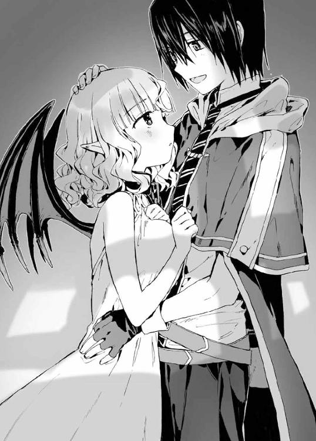
「大災害ねぇ......」
翔真は最後の台詞に興味を示す。ちらとアイリスをうかがうと、彼女はぶんぶんと首を横に振っていた。
もちろんアイリスの仕業じゃないことはわかっているが、しかし自然災害とは思えない。
この惨劇は、かつてアイリスが『試練』と称して行っていたように、魔札によるものではないだろうか。しかしここまでの災害を起こす魔札に翔真は心当たりがない。少なくとも、オリジナル魔札を除いては......。
などと翔真が推測していると、飛翼門の男がそれを裏付ける発言をする。
「そういえば天気が崩れる直前、騎士門の自治区のほうから黒っぽいなにかが空に飛んでいったのを見たぞ！ この大雨はそのせいじゃねえか!?」
「騎士門の奴ら、神託遊戯で負けた腹いせに俺たちの自治区を潰すつもりか!?」
「許せねえ！ せっかく全権代理者様が情けをかけたってのに――」
「落ち着け」と、翔真は男らを黙らせる。「豪雨に暴風に雷に――とにかくこの悪天候は、ここだけじゃなく騎士門の自治区にも被害を及ぼしてるじゃねえか。この自治区を潰すにしては、ちょいと規模がでかすぎるぜ」
嵐は〈竜胆翔真の帝国〉ばかりか、騎士門と森棲門の自治区までもを壊滅させるほどの猛威を振るっている。この災害が人為的に引き起こされたのだとしたら、実行犯は第三者である可能性が高い。とはいえ、どの門派の仕業かは現時点ではわからないが。
と、翔真は飛翼門の男に視線を向ける。
「その黒いなにかはどの方角から飛んできた？」
「え、と......あ、あっちです！ 俺の一族は目がいいんで、見間違いじゃありません！」
タカのような目をした男は暴風に吹き飛ばされまいと踏ん張りながら、翔真のうしろを指さした。
翔真はうしろを振り向く。肉眼だと豪雨のせいで三メートル先を見るのが限界だが、〈千里眼〉を使用した翔真の目にはアストラルのすべてが見通せる。
そして男が指さした方角には――城が建っていた。ミストが住まう城である。〈透視〉魔札を併用すると――城内の最上階にある一室にミストの姿が見えた。
翔真は男たちに向きなおる。
「ちょっくら原因を突き止めてくるぜ」
「お、俺たちはどうしたらいいんですか!?」
「雨宿りでもしてろ」
「で、ですが！ 雨宿りしてる間に川が氾濫したら、俺たちはおしまいです！」
「なァに、心配することはねえぜ。すぐに解決するからよ」
翔真を信じきっている男たちは、その一言に希望を見出したようだ。この世の終わりのような表情は消え去り、男たちの瞳に決意の炎が灯る。
「全権代理者様がそう仰るなら、この嵐はじきに鎮まるだろうな」
「ああっ。けど――俺たちだけのんきに雨宿りするわけにはいかねえぜ！」
「いまも怯えてる連中に、全権代理者様がなんとかしてくれると教えてやらねえと！」
「それもいいが――どこかで子どもがはぐれてるかもしれないぞ！」
「よっし！ それじゃあ俺たちで、はぐれてる奴がいないか捜索するか！」
種族の異なる男たちは――しかし種族同士の垣根を越え、仲間を救うべく行動に移る。
「わしが見たかったのは、この光景なんじゃよなあ......」
それを目にして、アイリスは感慨深げにつぶやくのだった。
◆
「しょ、翔真殿っ!?」
前触れなく広間に現れた翔真とアイリスに、ミストは驚声を上げた。それに微笑で応え、翔真は広間をぐるりと見まわす。
広間に敷かれた真紅の絨毯は雨に打たれて黒ずみ、そこかしこに瓦礫が散らばっている。瓦礫に塞がれた扉の奥からは、ミストに安否を問いかける声が響いていた。
「単刀直入に訊くぜ。この暴風雨は、おまえの仕業か？」
翔真の質問はミストではなく、しりもちをついている男に向けられていた。
ミストが代弁する。
「少なくとも広間の惨劇はこの男――アルゲンの仕業だ。アルゲンが〈絶対遵守〉という魔札を唱えた直後、漆黒の球体が空へ放たれ、この有様となったのだ」
「違う！ 私のせいじゃない！ 私は騙されたのだ！ あいつは――キルシュは、こんなことになるなんて一言も言っていなかった！」
「キルシュじゃと!? そやつは確かにそう名乗ったのか!?」
アイリスがアルゲンに詰め寄る。
「誰が聞き間違うものか！ 私は......私は〈絶対遵守〉の魔札を受け取ったはずなのに、なぜこんなことに......本来なら、いまごろ私は全権代理者になっていたはずなのに......」
アルゲンは頭を抱え、うめき声を上げる。
「〈絶対遵守〉なんて魔札は聞いたことねえが......キルシュって奴は、確かにそう言ったのか？」
「ああ、そう言った！ キルシュは聖神門だ！ 望みの魔札を生み出す力を持っていると言っていた！」
「確かに聖神門は生まれながらに特殊能力を持っておるが......そなたは騙されておるぞ。キルシュの力は〈強化〉――『魔札の威力を高める』能力じゃからな」
「本当か？」
訳知り顔で語るアイリスに、翔真は確認を取る。
「本当じゃ。キルシュのことはわしが一番よく知っておる。なにせキルシュは、わしの姉じゃからな」
「......身内か。そりゃ詳しいわけだぜ」
「うむ。あやつと同じ血が流れていると思うだけで、ぞっとするがな......キルシュほどの危険思想の持ち主を、わしはほかに知らぬよ。なにせキルシュは、遥か昔に多くの死者を生み出すこととなった権力闘争の元凶じゃからな」
「......なるほどね」
キルシュが危険思想の持ち主だということは、この災害を見れば一目瞭然だ。
暴力行為が禁じられたアストラルにおいて――キルシュはアルゲンを騙すことで、大量虐殺を成し遂げ、他種族を滅ぼそうと企んだのである。
（にしても権力闘争の元凶か......）
この権力闘争に勝利したことでアイリスは最高神の座につくことができた――種族間の能力差を均一にするため魔札を生み出し、平和的に争いを解決する手段として神託遊戯を設けたのだ。
つまるところキルシュがいなければ、魔札は創られることがなかった。だからといってキルシュに感謝する気はないが――なんだか皮肉な話だと、翔真は内心で思うのだった。
「だ、だが、キルシュの能力がなんであろうと、私が受け取ったのは〈絶対遵守〉だぞ！ それは間違いない！ だからこの事態は私の責任ではないッ！」
などと声を荒げ、身の潔白を主張するアルゲンに、翔真は自身の推測を告げてやる。
「それ、〈擬態〉を使われてたんじゃねえのか？」
〈擬態〉とは『ある物をべつの物に変身させる』能力の魔札だ。それを使えば災害を引き起こす魔札を〈絶対遵守〉とかいう魔札に変身させることが可能だ。もっとも、その場合変化するのは見た目だけだ。実際に発動する効果までもを変える力は〈擬態〉にはない。
（けど妙だな。魔札を使うには詠唱しなくちゃならねえし、〈絶対遵守〉と詠唱しても、なにも起こらないはずなんだが......）
と、そこまで考えたところで翔真はふと気づく。
「キルシュが〈絶対遵守〉に擬態させてアルゲンに渡した魔札って、〈悪天ノ種〉じゃねえか」
その〈悪天ノ種〉というのは、『にわか雨を発生させる』効果の魔札である。本来なら干ばつ被害にあった田畑を救済する程度の能力しかないが――キルシュの〈強化〉により、自治区を壊滅させるほどの威力を発揮することとなったのだ。
「確かに『デウスコール』という魔札は存在せぬが、『スコール』は存在するのじゃっ！ 一〇〇〇〇種以上もの魔札があるというのに、よくぞ『スコール』に気づいたのぅ！」
「ま、俺は魔札全種把握してるしな。ミストだってそうだ。全権代理者なんだから、それくらい把握してて当然だろ」
けど、と翔真はアルゲンを睨む。
「おまえには魔札の知識が欠けてるぜ。ちゃんと魔札を把握できてりゃ、〈悪天ノ種〉に気づけないにしろ――〈看破〉を使うはずだしな」
〈看破〉とはその物が本物か偽物かを見抜く魔札だ。Ｅランクであるため手に入りやすく、アルゲンほどの地位の人間なら持っていないにせよ、入手するのは造作もない。ミストに代わって全権代理者になるなんて大それた計画を立てていたなら、〈看破〉くらいは用意していて当然である。
が、しかし。
「〈看破〉？」
そもそもアルゲンは〈看破〉に心当たりすらなかった。
翔真は苛立たしげに舌打ちする。
「だめだこいつ。魔札の知識が欠片もねえ。ミストに代わって全権代理者になりたかったようだが――おまえが自治区を治めたんじゃ、騎士門は翌日には滅んじまってるだろうぜ。今回はおまえがあまりに間抜けなんで、キルシュに利用されちまったんだろうな」
キルシュとは会ったことがないが、その目的は想像がついた。聖神門であるキルシュは、アルゲンを利用して騎士門を自治区ごと滅ぼそうとしたのだろう。
もっとも、真偽のほどは実際にキルシュに会ってみないと知りようもないが――
「現時点でわかるのは――アルゲン。おまえが超がつくほどの間抜けだってことだ」
「ぶッ、無礼者がッ！ 私は騎士門の重鎮だぞ!? 小僧の分際で生意気な口利きおって！ 私は――」
「〈瞬間移動〉！」
翔真が魔札を唱えた瞬間、アルゲンが姿を消した。
「ぎゃーぎゃーうるせえから死霊門の自治区に飛ばしてやったが――アルゲンってのは、この自治区に必要な人間だったか？」
「不要だ」
即答するミストに、翔真は笑みを向ける。
「だと思ったぜ」
「にしても、また死霊門か。獣牙門のごろつきといい、死霊門もいい迷惑じゃろうな」
「死霊門の自治区に遊びに行ったときにでも詫び入れてやるさ」
さて、と翔真は暗黒の空を仰ぐ。
「そろそろ災害を鎮めねえとな。――〈飛翔〉！」
ふわりと宙に舞った翔真は、天井に穿たれた大穴を抜け、暗黒の空へと向かった。
「......こいつは思ってた以上にひどい有様だな」
城外に飛び出した翔真は眼下を眺め、ぽつりともらす。翔真の足もとに広がる城下町は、人為的に引き起こされた大嵐に蹂躙されていたのだ。
漆黒の世界に万雷が轟き渡り、ところどころに火の手が上がっている。もうもうと立ちこめる黒煙に一帯はますます黒く染まり、天高く立ち上る火煙に翔真は思わず噎せ返る。
暴風により火気は勢力を増していき、この豪雨をもってしても鎮火する気配はなかった。このままだとグラジオは壊滅状態となるだろう。そしてグラジオが炎に包まれる頃には、翔真の作り上げた自治区は大洪水により沈んでしまっているだろう。
むろん、このまま放置する気はさらさらないが。
「さて、まずは――〈火事場の焔泥棒〉！」
と、翔真が『視界に入る限りの炎を奪い尽くす』魔札を詠唱すると、眼前に袋を担いだ妖精が現れた。翔真はさらに四枚の〈火事場の焔泥棒〉を使い、妖精たちに鎮火を命じる。
「これで火事はじきに収まるだろうし、あとは壊れた物を復元する〈崩壊遡行〉を使えば、すべて元通りになるはずだ」
「じゃが翔真よ。まずは嵐をなんとかせんと、同じことの繰り返しになってしまうぞ！」
慌ただしい口調でアイリスが言った。平静を保とうと努めているようだが、その表情は恐怖に引きつっている。かつて試練と称して災害を起こしてきたアイリスだが、当事者となるのははじめてなのだろう。
霊体であるため嵐の被害は受けないが――霊体であるがゆえに、翔真はルメリアにそうしたように、アイリスを抱きしめ安心させてやることができない。
そのことにもどかしさを感じつつ、翔真はアイリスに問いかけた。
「アイリスは災害を起こしたとき、どうやって収拾をつけてたんだ？」
するとアイリスは罪の意識に苛まれるような暗い表情を浮かべる。
「......わしはなにもしておらん。災害を起こし、そのまま放置しておった」
つまり、どれほど強力な災害だろうと自然に収まるということか。そしてオリジナルの魔札のなかに『災害を鎮める』効果のものはないということになる。
「本当に、申し訳ないことをしたと思っておる......」
「べつに責めてるわけじゃねえ。正しいやり方だったとは言えねえが、おまえはみんなのために行動したんだ。ちゃんと反省してるなら、もうそれでいいじゃねえか」
微笑とともにそう告げてアイリスをなだめた翔真は、一転して真剣な顔をする。
「話を戻すが――自然に収まるとはいうが、具体的には何日ぐらいかかるんだ？ 通常の〈悪天ノ種〉は半日間効果が持続するってことはわかるが......」
「わしの起こした災害は三日三晩続いたが、この大嵐はどうじゃろうな......。キルシュの〈強化〉によって威力は言うに及ばずじゃが――持続時間まで強化されておるかどうかは、わしにはわからんのじゃ」
「そうか。ま、持続時間が強化されていようがいまいが、この規模の嵐が半日も続けば、川は間違いなく氾濫するだろうがな」
「な、ならば先に住人を安全な場所まで避難させたほうがよいのではないか!? もし川が氾濫すれば、クヌル平野に住まう者たちは無事では済まんぞ！ 全員を助けることは無理かもしれんが、いまならまだ救える命があるじゃろ！ このままここで嵐を消し去る策を練るか、人命救助に向かうか――すぐに決めるのじゃ！」
パニック状態に陥りながらも翔真に決断を迫るアイリス。
そんな彼女に、翔真は落ち着いた物腰で告げてやる。
「救助に戻る必要はねえぜ。なぜなら嵐を鎮める方法に心当たりがあるからな」
「ほんとうかっ！ しかし、これほどの大嵐をどうやって鎮めるというのじゃ!?」
「簡単さ。――天候を操作すりゃいいんだよ」
自信満々に語る翔真に、アイリスは眉をひそめた。
「じゃ、じゃが翔真よ、わしは『天気を晴れにする』魔札なんぞを創った覚えはないぞ！ そ、それともそなたには天気を晴れにする策でもあるのかっ!?」
期待の視線を受け、翔真は首を横に振る。
「残念だが、アイリスとのやり取りで晴れにはできねえと確信した」
「そ、そんな......」アイリスは絶望的な顔をする。「で、ではどうやって災害を鎮めると言うのじゃ！ そなたは世界最強の魔札使いなのじゃぞっ!? そなたの力をもってしても嵐を消し去ることができぬなら、多くの命が失われることになるのじゃ！」
「だからひとの話は最後まで聞けっての。確かに天気を晴れにすることはできねえが――天気を雨にすることはできるんだぜ」
「天気を雨にするじゃと!? 雨ならすでに降っておるではないか！」
「わかってるさ。けど、天気を雨にする魔札を――〈悪天ノ種〉を使えば、大嵐を鎮めることができるんだ」
「そ、そなたはなにを言っておるのじゃ!? そんなこと――」
「できるわけない、か。でもそれは実践したわけじゃなく、大嵐に雨をぶつけても意味がないっつー、単なる思いこみだろ。ほら、試しに〈悪天ノ種〉の効果を言ってみろよ」
アイリスは半信半疑といった表情のまま、つぶやく。
「『半日間雨を降らす』じゃ」
「だろ？ キルシュの〈強化〉能力は、アイリスの〈創造〉能力みたいに『望みの効果を記せる』わけじゃねえ。つまり強化されたのは『期間』と『規模』に限定されるんだよ。雷と暴風は『規模』の範疇内だろうが、さすがに『魔札の効果を打ち消す』なんて効果が付与されてるとは思えねえ」
「い、いったいそなたはなにを言っておるのじゃ？」
「わかんねえかな。魔札の効果ってのはさ、俺との神託遊戯でアイリスがやったみたいに『無効化する』って魔札を使わない限り、打ち消すことはできねえだろ。てことは――」
「――っ、そ、そうかっ！ 効果を上書きするのじゃな！」
ようやく答えにたどりついたアイリスに、翔真はうなずいてみせた。
「キルシュが強化に強化を重ねた〈悪天ノ種〉を――普通の〈悪天ノ種〉で上書きすれば、この嵐は収まるってわけだ。できることなら晴れにしてやりたかったが、その方法はないみたいだし......それに、贅沢を言える状況じゃねえしな！」
そう言って。
翔真は、こちらを威嚇するように雷音を轟かせる空を睨み上げ――
「――〈悪天ノ種〉!!」
詠唱した瞬間、翔真の頭上に魔法陣が展開された。そこから直径三〇センチほどの黒い球体が放たれ――
効果の上書きが始まった。
複数の自治区に跨がるようにして広がっていた暗黒の雲はみるみるうちに薄れていき、大地を揺るがす雷音は遠のき、滝のような豪雨は小雨へと変わり、家々を薙ぎ倒す勢いで吹き荒れていた暴風は微風へと変貌する。
それは紛れもなく――ごく普通の『雨天』であった。
そんな天気の移り変わりに、アイリスはほうけたように口を開ける。
「まさか、こんな方法で災害を鎮めることができるとは......。考えてみれば効果を上書きできるのは当然じゃが......嵐に雨をぶつけるという発想はなかったのじゃ。魔札の創造主であるわしでさえ思いつけぬことに、よくぞ気づいたな。さすがはわしの旦那様じゃ！」
「ま、それだけ魔札は奥が深いってことさ」
手放しに褒められた翔真はむず痒さを感じつつ、ミストの居城に戻ろうと振り返り――
いぶかしそうに目を細めた。
翔真の一五メートルほど向こうに、妖しい笑みをたたえた美女が浮いていたのだ。
うしろに流された銀髪を風になびかせて、真紅の双眸をまっすぐに翔真へ向けている。豪雨が降った直後だというのに――いまなお雨が降り続いているというのに、その美女はまったく濡れていなかった。翔真と同じく雨除けの魔札でも使っているのだろうか。いや、そんなことより――
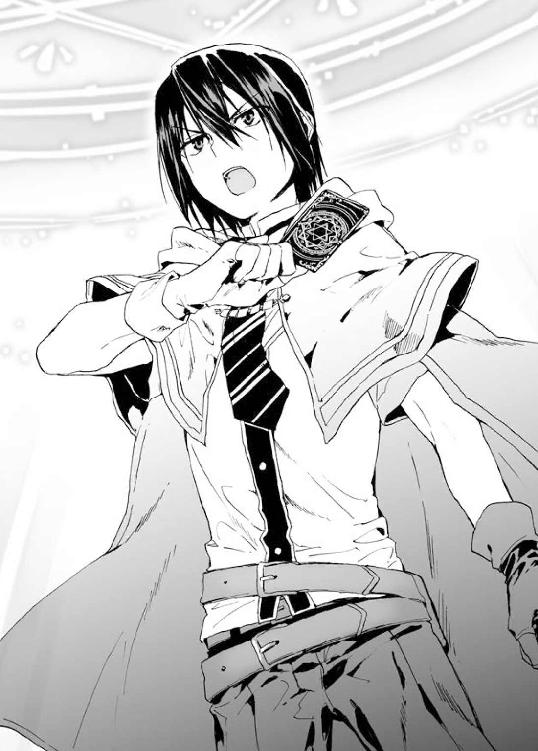
（なにやってんだ？ こんなところで......）
翔真とて地上二〇〇メートルの高さに浮いているが、それには『災害を鎮める』という目的があった。
対して、彼女の目的はわからない。まさか嵐のなか空を飛ぶ趣味があるとは思えないし、だとすると翔真と同じく嵐を鎮めようとしていたのだろうか。
そんな翔真の疑問は――
「な、なぜここにいるのじゃ、キルシュっ！」
アイリスの怒声で解決した。
「久しいね、アイリス。そしてはじめましてだね、竜胆翔真くん。聞いてのとおり、僕の名はキルシュだ。以後よろしく頼むよ」
警戒心を剥き出しにするアイリスとは異なり、美女は――キルシュは、穏やかな物腰で語りかけてきた。ともすれば友好的な関係が築けそうだが――しかし、翔真はキルシュがやったことを知っている。
知っているからこそ、友好的に接することなどできるわけがない。
「そうか。おまえがキルシュか」
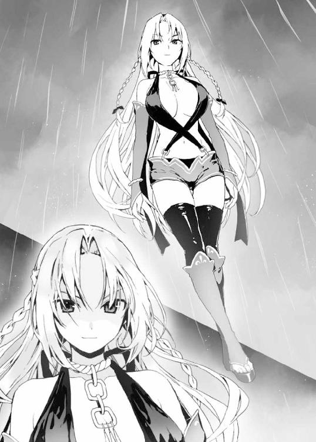
「やだな、そんな恐い顔しないでくれよ。僕がなにをしたというんだい？」
「白々しい女だな。見た目は好みだが、俺はおまえのことが大嫌いだぜ」
飄々とした態度を見せてくるキルシュに、翔真は苛立ちを募らせる。
下手すれば大勢の命が失われていたというのに、キルシュに罪悪感はうかがえなかった。実際に〈悪天ノ種〉を使ったのはアルゲンだが――それを生み出したのは、キルシュだ。当然、こうなることを予期してアルゲンを謀ったのだろうし、キルシュこそがこの騒動の黒幕と言える。
「ルメリアに、カンナに......俺の自治区民たちを怖がらせたんだ。その落とし前はつけてもらうぜ」
「怖がらせたとはいうけど、僕の嵐なんてかわいいものだろう？ そこにいるアイリスがやったことに比べれば、ね」
アイリスは唇を噛みしめ、黙りこんでしまう。
翔真は実際に目にしたわけではないが、アイリスが『試練』と称して発生させていた大災害はオリジナル魔札によるものだ。強化されていたとはいえ〈悪天ノ種〉の比ではないだろう。
それを理解した上で、翔真はキルシュの発言を否定する。
「種族間の争いを終わらせるため――世界を平和にするために悪役を買って出たこいつと、愉快犯のおまえを一緒にするんじゃねえ」
「おいおい、僕を愉快犯扱いするのはよしてくれよ。僕には異種族を滅ぼすという崇高な使命があるんだからねぇ。もっとも――今回の目的は途中から変わってしまったけどね。竜胆翔真の実力を測り、アイリスの――我が妹の復活を確認するという目的に、ね」
キルシュは芝居がかった口調でそう語る。とはいえ、嘘をついているわけではない。悪びれることなく災害を引き起こしたことからもわかるように、キルシュは本気で異種族を――聖神門以外の種族を滅ぼそうとしているのだ。
「そっか。おまえはアイリスの姉貴だったな。じゃあ報告しとかねえとな」
「報告？」
「ああ。アイリスは俺との神託遊戯に負けて――俺の嫁になったって報告をな。だけど、おまえは結婚式に来なくていいぜ」
喧嘩腰に告げてやると、キルシュはおなかを押さえておかしそうに笑う。
「ふっ......はははははっ！ これは予想外だよっ！ まさか最高神を娶るとはね。きみは実に面白い男だ！ きみと神託遊戯できる日を、楽しみにしておくよ」
「いつかと言わず、いますぐ戦ってもいいんだぜ」
「せっかちだねぇ。魅力的なお誘いだけど、断らせてもらうよ。目的は果たせたことだし、ミリアが僕の帰りを待ち侘びてるからね。――〈想い出の地への扉〉！」
ＳＳランクの魔札を詠唱した瞬間、キルシュのそばに光り輝く穴が空いた。突然現れた直径二メートルほどの穴は――キルシュが実際に訪れたことのある場所へ繋がっている。
おそらくは拠点へと繋がっているのだろう光の穴をくぐり......〈想い出の地への扉〉が消滅したとき、キルシュは姿を暗ませていた。
用心深くあたりを見まわし、キルシュの姿がどこにもないことを確認したアイリスは、不安げに嘆息する。
「厄介な奴に目をつけられてしまったのぅ」
「ま、しばらくは退屈しないで済みそうだぜ」
これ以上アイリスを不安にさせまいと、あえて軽い調子で応えた翔真は、彼女を伴ってミストの居城へと舞い戻った。
半壊した広間に降り立つと、ミストが駆け寄ってくる。
「翔真殿のおかげで騎士門は救われた。本当にありがとう......貴殿は我らの恩人だ」
そう言って、深々と頭を下げてきた。
翔真はにこやかな笑みをミストに向ける。
「恩人扱いするこたァねえよ。なにせ騎士門とは同盟を結んでるわけだしな、助けるのは当然だろ」
まあ、と翔真はわざとらしく肩をすくめてみせた。
「こっちが友好的に接したところで、騎士門の連中に仲良くする意志がないんじゃ、いつまで経っても互いに嫌い合ったまま――俺たちに平和な暮らしが訪れることはないだろうがな」
ちら、と探りを入れるような視線を向けると、ミストが真剣な眼差しで言い返してきた。
「貴殿の自治区と同盟を結んだことと、この一件を民に示せば、〈竜胆翔真の帝国〉への敵意はきっと失われるはずだ。なにせ貴殿は騎士門を救った英雄なのだからな」
「おいおい、英雄ってのはちょっと言い過ぎだぜ。さっきも言ったが、騎士門とは同盟を結んでるわけだし――なにより、ミストは俺の嫁だからな。嫁のピンチを救うのは旦那として当然のことだろ。感謝するようなことじゃねえんだよ」
「翔真殿......」
ミストは頬を紅潮させ、うっとりとした表情をして翔真を見つめる。
「ええいっ！ もう帰るぞ翔真よ！ 自治区に戻ってみんなを安心させてやるのじゃ！」
一件落着したというのに、なぜか慌てるアイリスだった。
終幕 最凶の魔札使い
アストラル北西部に悠然と連なるフルリオ山脈には『雲穿つ山』との通称がついている。山頂は雲の上に突き抜けているため年中晴れ渡っており、平和な光景が広がっている。
しかし平和なのは山頂だけだ。ふもとには獰猛な野獣が徘徊し、おまけに年中嵐が吹き荒れているため徒歩だろうと飛翔魔札を使おうと、登山は命懸けになる。
それゆえ、フルリオ山脈に近づく者は皆無と言ってよく――だからこそ、山頂に見事な庭園が広がっていることも、そこに豪華な宮殿が建てられていることも知られていない。
もっとも、宮殿付近には結界が張られているため、主人に認められた人物以外は宮殿を見つけることができないのだが......
「おかえりなさい！ おかえりなさい！」
そんな人知れず佇む宮殿――。
その広間に、鈴を転がすような声が響き渡った。
齢一四ほどの小柄な娘である。透き通るような銀髪は腰に届くほど長く、真紅の双眸は前髪に侵略されつつある。病的なほどに白い肌は漆黒のドレスに包まれ、ほっそりとした脚には無骨なブーツを履かせていた。
静謐な広間に騒々しい足音を響かせ、おかえりなさいと連呼しながら、その娘は宮殿の主たるキルシュのもとへと駆け寄ってきた。
本来、この広間はキルシュの許可なく立ち入ることを禁じられている。仮に許可を受けようと、騒ぎ立てることなど許されることではない。もしこれが宮殿に仕える召使い――奴隷であったなら、山のふもとに捨て、野獣の餌にしてやるところだ。
「おかえりなさい、キルシュ姉様！」
「ただいま、ミリア」
だがミリアは特別だ。なにせミリアは実の妹であるばかりか、権力闘争の際に最後までキルシュに味方し、そして生き残った数少ない同族なのだから。
ほかの同族は、アイリスやティナのようにキルシュとは関わるまいとする者を除いて、神託遊戯で屈服させた。つまり純粋に――自らの意志でキルシュに付き従っているのは、ミリアを除いてほかにはいないのだ。
だからこそ、キルシュはミリアを可愛がっているのであった。
「僕が留守のあいだ、変わりなかったかい？」
穏やかな物腰で応えつつ、キルシュは壇上に上がり、玉座に腰かけた。するとミリアは玉座の背にまわりこみ、背もたれから顔を覗かせるようにしてキルシュに話しかけてくる。
「なにも変わりないよ！ いつも通りだよ！ そんなことよりキルシュ姉様！ アイリス姉様を見たってほんと!? アイリス姉様が騎士門自治区にいたってほんとなの!?」
アイリスの件は誰にも話していないというのに、ミリアはすでに知っていた。
そのことについてキルシュは特に驚くことなく、肯定する。
「ああ、本当さ」
アイリスは一〇〇〇年以上も〈神の間〉に引きこもり、定期的に災害を起こしていた。ここ五〇年は災害が起きていなかったため、アイリスの身になにかあったのではないかと思っていたが――アイリスは騎士門の自治区にいた。
もしかするとアイリスは、〈神の間〉へ戻る術を失っているのかもしれない。
天気を晴れにする魔札を創るのではなく、雨にすることで窮地を脱したということは、聖神門最強と謳われた〈創造〉の力を失っているのかもしれない。
権力闘争に勝利し、最高神の座についたアイリスは――無力化しているのかもしれない。
その話を聞かせてやると、ミリアは嬉しそうにはしゃいだ。
「わあっ！ やったねキルシュ姉様っ！ 嬉しいねキルシュ姉様っ！ これで――これでアイリス姉様が殺せるよ！ アイリス姉様に逃げ場はないよ！ 邪魔なアイリス姉様さえ殺せれば、アストラルはキルシュ姉様の思い通りになるねっ！」
「殺してやりたいのは山々だけど――暴力行為は禁じられてるからね。そうじゃなければ、わざわざ騎士門の男に〈悪天ノ種〉を使わせるなんて回りくどいまねはしないさ。ほんと、アイリスは面倒なルールを創ってくれたよ」
「アイリス姉様は強いからね！ 〈創造〉の力を持つアイリス姉様が権力闘争に勝つのも無理ないね！ それでそれでキルシュ姉様どうするの？ アイリス姉様を倒しに行くの？ 神託遊戯を挑みにいくの？」
「しばらくは様子見かな。気になる奴がいたからね」
「なにが気になるのっ？ なにを気にしてるのっ？」
「僕が起こした嵐を消したのはアイリスじゃない。竜胆翔真っていう少年さ。アイリスは、その少年に付き従って......」
キルシュは思い出したように笑う。
「ふふっ。付き従ってるというか、嫁だけどね。つまりオリジナルの魔札は嫁入り道具になったというわけさ。証拠に、アイリスの魔導指輪はブロンズに格落ちしてたからね」
「じゃあアイリス姉様はその子に負けたってことっ!? 神託遊戯で負けたってことっ!? わあ！ すごいすごい！ アイリス姉様を倒すなんてすごいね！ ねえキルシュ姉様！ ミリアその子に会ってみたい！ ねえねえいいでしょキルシュ姉様！ ねえねえ！」
がたがたと玉座を揺さぶり、ミリアが駄々をこねてくる。
「構わないよ。ミリアの能力なら、竜胆翔真に引けを取らないだろうからね」
だけど、とキルシュはミリアの瞳を見つめる。
「ちゃんと変装すること。ミリアはアイリスに顔を知られてるんだから。接近がばれると、能力を警戒されるからね。僕の言いつけを守れるなら、外出を許可するよ」
「守れるよ！ ミリアはちゃんと守れるよ！」
「なら行っておいで」
「わあい！ 許可もらっちゃった！ 許可もらっちゃったよ！ キルシュ姉様の――全権代理者様の許可もらっちゃったよぉぉっ！ それじゃあ行ってくるね！ その子に会いに行ってくるねっ！」
明るい声を響かせて、ミリアは広間を飛び出していった。
あとがき
今作から読み始めた方ははじめまして。
前作に続いて購入してくださった方はおひさしぶりです。
猫又ぬこです。
新シリーズスタートです。
その名も『アイテムチートな奴隷ハーレム建国記』。
お楽しみいただけたなら幸いです！
さて、あとがきから読む方もいらっしゃると思いますので、ネタバレにならないように内容には触れず、裏話でもしようかと思います。
すでに読み終わった方は驚かれるかもしれませんが、企画時点では『アイテムチート』『奴隷』『建国』『カードゲーム』といった要素はありませんでした。『二周目教官の育成ゲーム』という名の教官ものだったと記憶しております。もっと面白くなるはずだ！ と修正していくうちに、いまの形に落ち着きました。
内容を変えるにあたって、キャラクターもいろいろと修正したのですが、『竜胆翔真』『アイリス』『カンナ』の三人は最初期から存在しておりました。
第一巻にして歴戦なのです。
その活躍は、ぜひ本編をご覧いただければと！
それでは謝辞を。
本作は様々な方のご尽力によって作られています。
担当さんをはじめとする、ＨＪ文庫編集部の皆様。度重なる修正に根気よくお付き合いいただき、まことにありがとうございました。
本気でお忙しいなか仕事を引き受けてくださった奈津ナツナ先生。キャラクターたちを魅力的に描いてくださり、本当にありがとうございます！ どのキャラクターも素敵なのですが、個人的にはアイリスとグズマがお気に入りです！
カードゲームに付き合ってくれた友人のＴ君とＹ君。十数回ほど三人対戦をした結果、一度も一位になれなかったけどビリにもならなかったので負けたつもりはありません。
定期的に美味しい日本酒を振る舞ってくれるＡ君、今度はぼくが奢ります！
ツイッターで絡んでくれるみんなも本当にありがとう！
そしてなにより、本作をお買い上げくださった読者の皆様に最上級の感謝を！ 皆様に楽しんでいただけたのなら、これ以上の幸せはありません。
それでは、次巻でお会いできることを祈りつつ。
二〇一六年すごく寒い日 猫又ぬこ
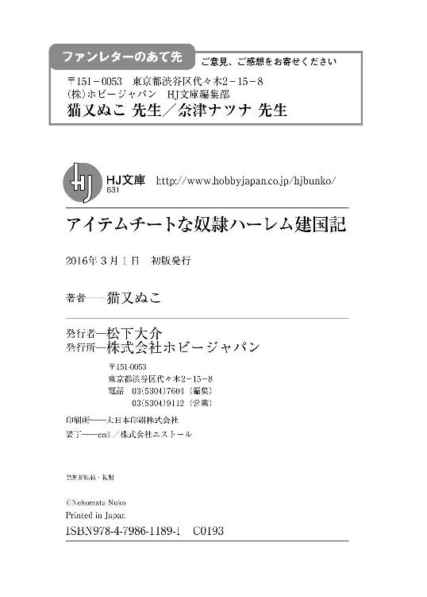